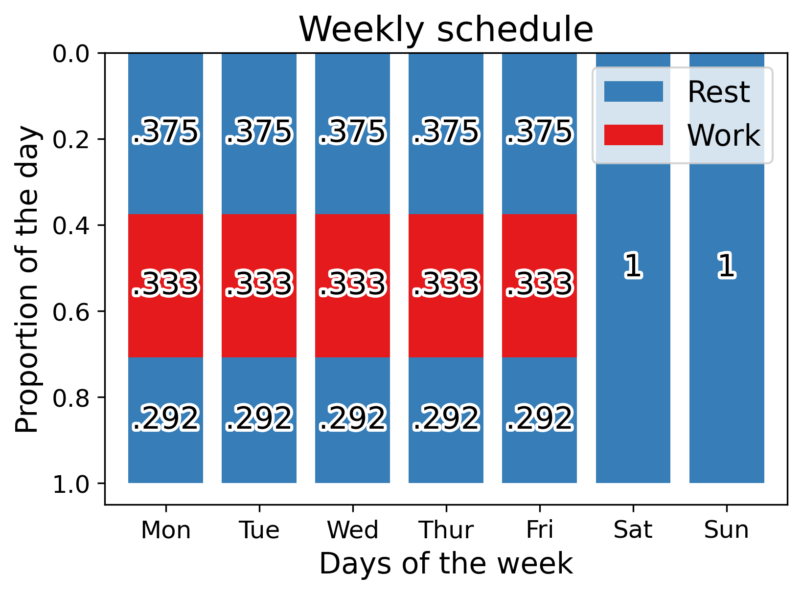
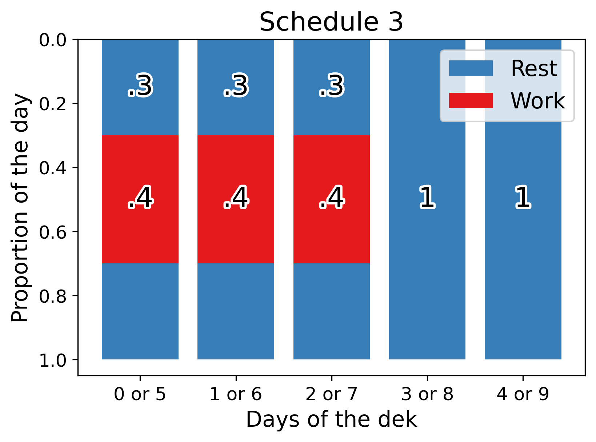

Decalendar1 is a decimal calendar🗓️system and Declock2 is a decimal timekeeping⏳system. Instead of months, weeks, hours, minutes, and seconds, Decalendar and Declock use a number called the day-of-the-year (doty)3. Figure 1 displays the current doty() as a bar chart. The integer part of the doty is the Decalendar date4() and the fractional part is the Declock time5().
The top two bars in Figure 1 (旬 and 日) show the two components of the Decalendar date (): the dek6() and the day-of-the-dek7(). A dek is a group of 10 days that fulfills the role of months and weeks in Decalendar. Therefore, the dek and the day-of-the-dek (dotd) in Decalendar dates are analogous to the month and day-of-the-month (dotm) in calendar dates (mm-dd) and the week and day-of-the-week (dotw) in week dates (Www-d).
The bottom three bars in Figure 1 (%, ‰, and ♫) show components of the Declock time ():cents8(),mils9(), and beats10(). A cent is 1% of the day, which is a little less than a quarter hour. A mil (‰) is a tenth of a cent, which is close to a minute and a half. A beat is 1% of a mil, which is almost as long as a second, and can be thought of as a heart❤️beat or musical🎵beat with a constant rate or tempo of 69.4̅ beats per minute. In addition to displaying time on clocks🕰️and⌚️watches, beats can be used to measure durations, such as the time since this webpage was loaded: .
As an alternative to doty dates, Decalendar can express dates in fractional years, which are similar to the fractional days used in doty times. Fractional year dates11 can be combined with years into one number and are useful for marking periods of 73 days in the Decalendar year. Every 73 days, the Decalendar fractional year date increases by .2 (⅕). The current Decalendar fractional year date is .
Now it’s your turn! Move the sliders🎚️in Example 1 to adjust the doty, fractional year, month, and dotm values and see the corresponding 1) Northern Hemisphere season, 2) Southern Hemisphere season, and 3) Zodiac sign in List 1. Try selecting a special date, like your birthday🎂! You can also press the Play▶️button and then sit back and watch the sliders cycle🔄back and forth from the start to the end of the Decalendar year. The sliders cycle through an entire year in 36.5 beats, a million times faster🏎️than the actual speed of time!
Doty dates (day) and timestamps (day.stamp) do not include years and thus can be reused from year to year. When a doty is combined with a year, it forms a Decalendarordinal12 (deco) and represents a specific date (year+day) or time (year+day.stamp) in a specific year, instead of than a date (day) or time (day.stamp) that occurs every year or every leap year. Using the Observabledatetime input in Example 2, you can select a year, month, dotm, hour, and minute to see the equivalent 1) deco timestamp (year+day.clock) and 2) year date (year.yyy) in List 2.
In Example 3, you can enter numeric year and doty values or type in a free-form deco to see the resulting 1) ISO 8601 timestamp (year-mm-ddThh:mm:ss) and 2) year date in List 3. Example 3 also has a Play▶️button in that cycles from Day0 to Day365 of Year1969. The cycle goes up to Day0 of Year1970, because Year1969 is a common year and does not have a Day365.
Interacting with the number inputs in Example 3, standardizes the deco in the text input to ensure years are integers and doty values are positive numbers below 366. Nevertheless, all of the inputs in Example 3 support negative and fractional year and doty values. Negative doty values shift dates backward in time from the start of a given year into a previous year. Similarly, negative years shift dates backward starting from Year0, which is 1 BCE (Before the Common Era).
As mentioned in Section 1.1, deks function as both months and weeks in Decalendar. A dek consists of 2 groups of 5 days called pents13. Each pent can follow a sequence of workdays and restdays called a pently schedule14. Figure 2 compares the typical weekly schedule and the Schedule3pently schedule. Like other pently schedules, Schedule3 is named after the number of workdays it contains. The 3 workdays in Schedule3 are followed by a 2-day pentend, the Decalender equivalent of a weekend.
Unlike Schedule3 and the other pently schedules, the weekly schedule is asymmetric and divides up workdays into proportions that are easier to express as fractions: 3/8 (.375), 1/3 (.3̅), and 7/24 (0.2916̅). In contrast, the proportions of the day in pently schedules are never repeating decimal numbers. Each Schedule3 workday is split up symmetrically into proportions so that workday starts at .3 (7.2 hours), lasts .4 (9.6 hours), and ends at .7 (16.8 hours).

(a) Proportion of the day spent working and resting every day of the week

(b) Proportion of the day spent working and resting every day of the pent
Figure 2: Weekly schedule and Schedule 3 comparison
Example 4 provides the opportunity to explore all four of the pently schedules. You can select which schedule to view using the Observableradio inputs, use the interval sliders to adjust the schedule if desired, and click the Download button to obtain the schedule data used to create Figure 3. To download the data as a JSON file instead of a CSV, change the file extension in the filename text input from .csv to .json. Section 5.4.3 provides more information on Schedule3 and the other pently schedules.
Example 4
Code
viewof intervals = Inputs.form([interval([0,1], {step:.01,value: [.3,.7],label:'0 or 5',width:195,format: ([start, end]) => start === end ?"":`${formatDecimal(start)}:${formatDecimal(end)}`}),interval([0,1], {step:.01,value: [.3,.7],label:'1 or 6',width:195,format: ([start, end]) => start === end ?"":`${formatDecimal(start)}:${formatDecimal(end)}`}),interval([0,1], {step:.01,value: [.3,.7],label:'2 or 7',width:195,format: ([start, end]) => start === end ?"":`${formatDecimal(start)}:${formatDecimal(end)}`}),interval([0,1], {step:.01,value: [0,0],label:'3 or 8',width:195,format: ([start, end]) => start === end ?"":`${formatDecimal(start)}:${formatDecimal(end)}`}),interval([0,1], {step:.01,value: [0,0],label:'4 or 9',width:195,format: ([start, end]) => start === end ?"":`${formatDecimal(start)}:${formatDecimal(end)}`}),])
Just like Example 4 allows us to select Declock time intervals, we can create Decalendar date intervals in Example 5. To select discontinuous intervals, we can use the step input to “step” over \(step-1\) dates in the interval. The start:stop and step inputs in Example 5 enable array slicing as in the Python programming language. In Figure 4, deks are in separate rows, the days-of-the-dek are stacked in columns, and each Decalendar date has its own cell. Decalendar dates that are included in the interval are highlighted in orange, and all other Decalendar dates are labeled blue. Try setting a step👣of 10 to select all instances of one of the days-of-the-dek!
// https://observablehq.com/@dec/dotdPlot.plot({padding:0,x: {axis:"top",label:null},y: {label:null,tickPadding:12},color: {type:"categorical",scheme:"Category10"},marks: [ Plot.cell(dates, {x: d => d[2],y: d => d.slice(0,2),fill: d =>slice(dates, startStop[0], startStop[1], step).includes(d),inset:0.5}), Plot.text(dates, {x: d => d[2],y: d => d.slice(0,2),fill:"white",stroke:"white",fontSize:20}) ]})
Figure 4: Decalendar date selector
2 Basic concepts
2.1 Fractions analogy
In the simplest terms, Decalendar counts fractions of a year, while Declock counts fractions of a day. The denominator for Decalendar is the number of days in the year, and the Declock denominator is \(10^x\), where \(x\) is the number of digits in the numerator. In both systems, only the numerator, not the denominator, is provided. In the context of Decalendar, the numerator is the days that have passed in the year, while in the context of Declock, the numerator is the parts of the day that have passed in the day.
To avoid any confusion between the two, we can say “Day 5” to mean the date when 5 days have passed this year or Day0 to mean the first day-of-the-year (doty). This is like the use of the term “day zero” in other contexts, such as epidemiology. The analogous term for times is Dot. The word Dot conveys that at its core Declock is a system built on fractional days expressed as decimal numbers. The 5 in Dot5 can be thought of as a number after a decimal (0.5) or a numerator (⁵/₁₀), either way it means noon, the time when half the day has passed.
2.2 Implied tolerance and duration
The analogy to decimals or fractions is important, because it explains why adding a zero at the end of a time does not change the time, only the implied tolerance of time points or the implied duration of time intervals. If Dot5 is a time point, it has an implied tolerance of 5% of the day (\(.5±.05\)), because any time after Dot45 and before Dot55 (\([.45, .55)\)) would round to Dot5. On the other hand, if Dot5 is the start time for a time interval, that interval is implied to start at Dot5 and end before Dot6 (\([.5, .6)\)) and thus have a duration of 10% of the day (Dot6-Dot5). Every additional digit we add decreases the implied tolerance and the implied duration 10-fold.
If we really want to insist on punctuality, we could include up to 5 digits in a time. Specifying times with more than 5 digits is possible, and may be useful for scientific or technical purposes, but it is analogous to providing extremely long GPS coordinates; at some point the level of precision stops having relevance to daily life. If we want to strive for the highest level of precision possible, we can add the word “sharp” or the # symbol to the time. Saying “5 Sharp” or writing 5# means as close as possible to noon. Times that include # cannot have an implied duration. We can only add # to a time, so there is no need say “Dot 5 Sharp” or write .5#.
2.3 Context clues
Not saying “Day” or “Dot” in general is acceptable, because it is convenient and often the numbers make perfect sense in context. If someone says “let’s have lunch at 5”, it is clear that they are referring to noon (Dot5) and not the sixth doty (Day5). Also, the number itself may provide a clue. Numbers greater than 365 could still be a doty, but it would represent a day in an upcoming year, not the current year. The meaning of such dates depends on whether the current year is a common year (n=365) or a leap year (n=366). Saying “500” could mean Day134 (if n=366) or Day135 (if n=365) of the subsequent year, but it would most likely mean noon (Dot500).
2.4Stamps
If a Decalender date and a Declock time are combined, they form a time stamp. The date always goes before the time in any stamp. When said together, the numbers “0” and “5” mean the first doty (Day0) at noon (Dot5). In written form, this would be 000.5. This format is called .y, which is read the same way as doty, but emphasizes that the . is used in a floating point decimal doty. In other words, doty can be used instead of “day of the year” in a sentence, whereas .y indicates a stamp, such as 000.5. Ideally, a stamp will include all of the information needed to identify a singular point in time, and thus should include a year and time zone.
2.5 Specific dates and times
The stamp in Section 2.4 assumes that the year and time zone are known. A date without a year is like a time without a time zone, both depend on the context. Most likely, we are talking about the current year and the local time zone, but it may be unclear. Including a year allows us to pinpoint a specific day, instead of a day that could happen any year. Similarly, a time with a time zone occurs once every day, rather than once in every time zone per day. The Day306 of 1969, would be written 1969+306 and said “Year 1969 Day 306” or simply “1969 306”, while midnight in Zone0 would be written .000+0 and said “Dot 0 Zone 0”, “0 Zone 0”, or “0 0”. Combined together, this date and time form the stamp1969+306.000+0.
2.6 Negative numbers
Every component of Decalender dates and Declock times can be negative. A negative year is before 1 BCE (Before Common Era) and a negative time zone is West of Zone0. The year is usually provided without a sign, because most people rarely discuss years before 1 BCE, but numeric time zone offset must have a sign. Negative doties work like zero-based indexes in computer programming in that they label the days of the year from \(-N\) to \(-1\), where \(N\) is the number of the days in the current year. The first doty is indexed by both \(0\) and \(-N\), while the last doty is indexed by both \(-1\) and \(N\).
In general, negative numbers show the number of parts that are left in the whole. A negative doty shows how many days remain in the year and a negative time counts down to the end of the day. To extend the fractions analogy in Section 2.1 to negative numbers, the negative number added to the whole gives us the numerator of the positive fraction (\(pos = N + neg\)). Positive and negative numbers arrive at the same answer from opposite directions.
In certain contexts, the choice of using a negative number over a positive number may mean that we want to emphasize how much time is left instead of how much has passed. Even though Dot-1 and Dot9 are synonymous Declock times, the former could highlight that there is only 1 tenth (⅒ or .1) of the day remaining before midnight. Dot5 and Dot-5 both mean noon, like saying that a glass is half-empty or half-full.
The negative equivalent of 1969+306, the deco date in Table 1, is 1970-059. This negative deco date literally subtracts 59 days from the beginning of year 1970 to arrive at Day306 of 1969. The year in negative deco dates is always 1 greater than the year in the equivalent positive deco date. Both 1969+306 and 1970-059 translate to January 1, 1970 in the Gregorian calendar. Decalendar years are shifted by two months in relation to the Gregorian calendar years because Decalendar years start on March 1.
This shift causes the Gregorian calendar year to be 1 greater than the year in the positive deco dates during January and February and 1 less than the year in negative deco dates during every other month. For example, the Deco dates 1969+000 and 1970-365 are March 1, 1969 in the Gregorian calendar. Immediately after midnight on this date, the negative doty will change from -365 to -364, while the positive doty will remain at 0 At noon, the positive deco date will be 1969+306.500 and the negative deco date will be 1970-058.500.
Table 1: Comparison of doty and deco dates and timestamps
2.7 Units
Declock times often have three digits because this is the best level of precision for displaying time on clocks and watches. While 3 digits are often best, Declock times can have any number of digits, depending on the desired precision level. Declock provides names for extremely precise time units, but the most relevant units are within a few orders of magnitude from a day, which is the base unit of both Declock and Decalendar. Listing the units of each, as in Table 2, highlights the relationship between the two:
In Table 2, the units with positive exponents are used for Decalendar, while the ones with negative exponents are used for Declock. Cents (¢) can serve as a useful point of comparison to understand the scale of some of the units in Table 2 above, because each cent is 1 percent of the day, which is about a quarter hour (1% = 14.4 minutes). In comparison to cents, mils are ten times smaller (.1% = 1.4 minutes), dimes (⅒) are ten times larger (10% = 144 minutes), and deks (ι) are 1000 times larger (1000% = 14400 minutes). To be clear, 1 dek contains 10 whole days while the other units are fractions of days.
Declock units smaller than mils are not easy to think of as percents of a day. For phrases (◠) and beats (♫), music serves as a much more useful analogy. In fact, phrases and beats are musical terms. The duration of a musical beat depends on the tempo, but a Declockbeat is always precisely 0.864 seconds long. This translates to a tempo of 69.4̅ (69⁴/₉ or 625/9) beats per minute, which is coincidentally also within the normal range of a resting heart rate. Declockbeats are organized into groups of 2 called bars or measures, groups of 10 called phrases, and groups of 20 called periods. A real example of music that follows this exact pattern is Haydn’s Feldpartita.
Declock units smaller than beats are too small for typical daily use. For example, a mic (microday, μ) is faster than a blink of an eye. Each frame in a video playing at 60 frames per second will be shown for about 1.93 liphs (milliphrases, m̑). A lib (millibeat, m̈) is not enough time for a neuron in a human brain to fire and return to rest. Sound can travel from a person’s ear to their other ear in about 7 nans (nanodays). Noticing that a sound reaches one ear before the other can help humans to localize the source of the sound, but a roph (microphrase, μ̑) difference might be too fast to notice. In a rob (microbeat, µ̈), a USB 3.0 cable transferring 5 gigabytes per second can send 4.32 kilobytes, the equivalent of a text file with 4320 characters.
3 Time zones
Of the units discussed above, dimes are notable, because they are the units of Declock time zones. The times in Zone1 are one dime earlier than Zone0 and two dimes earlier than Zone-1. Time zones are important, because different time zones could have very different times and even different dates. Mexico City is in Zone-3 and Tokyo is in Zone4, meaning for the majority of the day (Dot7 to be exact) Tokyo is one day ahead of Mexico City. If it is noon on the last day of the year 1999 in Mexico City, it will be Dot200 on the first day of the year 2000 in Tokyo. This date and time in Mexico City can be written 2000+000.200+4 or 2001-364.800+4, while the equivalent date and time for Tokyo is 1999+365.500-3 or 2000-000.500-3. If we removed the time zone from the end, we would not know that all of these stamps describe the same moment in time.
Declock groups together the 26 Coordinated Universal Time (UTC) offsets (-12:00 to +14:00) into 11 time zones (Zone-5 to Zone6) by converting hours into dimes (\(dimes = hours \div 2.4\)) and rounding to the nearest whole number (\(dimes = \lfloor hours \div 2.4 \rceil\)). This time zone system is simple and facilitates conversion, but locations on the edges of the main time zones may experience a significant difference between Dot5 and solar noon, the point when the sun reaches its highest position in the sky.
If we decide to prioritize the amount of sunlight at Dot5 over simplicity and ease of conversion, we could convert degrees of longitude into cents or mils, instead of converting hours into dimes. For example, we could say that Mexico City is in Zone-275 instead of Zone-3, because the longitude of Mexico City is 99 degrees West, which translates to an offset of -275 mils (\(mils = degrees \div .36\)). Essentially, we could create as many additional Declock time zones are desired simply by adding digits to the end of each time zone. Adding one digit yields 110 double-digit cent time zones, adding two digits creates 1100 triple-digit mil time zones, and so on.
4 Related systems
4.1 French Republican calendar
4.1.1 French Republican calendar décades
The French Republican calendar and Decalendar both organize days in groups of 10. A group of 10 days in the French Republican calendar is called a décade, while a group of 10 days in Decalendar is called a dek. The names of the days in a dek are derived from their zero-based cardinal numbers (zero, one, two…), whereas the days of the décade are named after their ordinal numbers (first, second, third…). In both cases, the names are based on Roman and Greek numeral prefixes. Table 3 provides the cardinal numbers, one-letter codes, names, and types of the days of the dek as well as the names of their French Republican calendar equivalents.
Table 3: The days of the dek and their French Republican calendar equivalents
4.1.2 French Republican calendar time
The French Republican calendar and Declock both break the day down into decimal portions. In Declock, a dime is a tenth (⅒) of a day, a cent is a hundredth (10⁻²) of a day, a mil is a thousandth (10⁻³) of a day, and a beat is a hundred thousandth (10⁻⁵) of a day, whereas the French Republican calendar calls these units decimal hours, decimal minutes, décimes, and decimal seconds, respectively. Table 4 shows the start times of each dime (⅒) in a day and its equivalent in 24-hour and 12-hour standard time.
Table 4: The dimes in a day and their standard time equivalents
4.2 Swatch Internet Time
Swatch Internet Time uses the term “.beats” to describe a thousandth of day (10⁻³). In Declock, a beat is a hundred thousandth of a day (10⁻⁵), because this is the approximate duration of a heartbeat or a beat of music. Another difference is that Swatch Internet Time has only 1 time zone, UTC+1, limiting its utility outside of Central Europe or West Africa. Swatch Internet Time is 41.6̅ mils ahead of UTC and the DeclockZone0 time zone.Declock has 11 main single-digit time zones, but can support as many time zones as needed by adding additional digits. More information on Declock time zones can be found in Section 3.
4.3 Gregorian calendar
4.3.1 Coordinate analogy
In the Gregorian calendar, dates are like a set of coordinates, where the month and the day-of-the-month (dotm) are like longitude and latitude in the geographic coordinate system or x and y in the Cartesian coordinate system. The Decalendar ordinal (deco) date format provides two coordinates in one number: the day-of-the-year (doty). Table 5 shows the doty number equivalents of all Gregorian calendar dates.
To locate a specific date in Table 5, first find the month among the columns (think of the month as an x-axis value) and then move down through the rows to the dotm (which is like a y-axis value). To convert a doty number to a Gregorian calendar date, we first find the dek number (the first two digits of the doty) among the rows in Table 6 and then move to the right to the dotd (the last digit of the doty). The dates in Table 6 are shown in mm-dd format.
Table 6: Doty number to Gregorian calendar date conversion
4.3.2 Gregorian calendar date conversion
In addition to using a conversion table like Table 5, we can convert between Gregorian calendar dates and Decalendardoty dates programmatically. The code in Example 6 is derived from the days_from_civil and civil_from_days algorithms described by Howard Hinnant in chrono-Compatible Low-Level Date Algorithms(2014). The output of the greg2doty function is a doty, while its inverse function, doty2greg, returns an array containing a month and a dotm number.
functiondoty2greg(doty =306) {const m =Math.floor((5* doty +2) /153);return [Math.floor(m <10? m +3: m -9),Math.floor(doty - (153* m +2) /5+2)];}doty2greg()
Decalendar only uses months for converting to and from Gregorian calendar dates. Nevertheless, discussing months can help to explain how Decalendar works. The Decalendar year ends with January and February, as shown in Table 7. During these two months, the Decalendar year is 1 less than the Gregorian calendar year. To obtain a Decalendar year (dy) from a Gregorian calendar year (gy) and month number (gm), we subtract 1 from gy if gm is less than 3 (\(dy = gy - [gm < 3]\)). To obtain a Gregorian calendar year (gy) from a Decalendar year (dy) and doty, we add 1 to dy if doty is greater than 305 (\(gy = dy + [dm > 305]\)). Code to convert between Decalendar and Gregorian calendar years is provided in Example 7.
A leap year has 366 days in both Decalendar and the Gregorian calendar. Day365 is Leap Day in Decalendar and is synonymous with February 29, the Gregorian calendar leap day. Decalendar positions Leap Day, Day365, at the end of the year, which requires an adjustment of the Gregorian calendar definition of a leap year. To check if a Decalendar year is a leap, we must first add 1 to the year before plugging it into Equation 1 or the year2bool function in Example 8.
Interestingly, years from negative deco dates do not need any adjustment. The first day of Year1999 is 1999+000 or 2000-366, while the last day is 1999+365 or 2000-001. Year1999 is a leap year from the perspective of the positive deco dates, 1999+000 and 1999+365, because it goes from Day0 to Day365. In the context of the negative deco dates,2000-366 and 2000-001, Year2000 is a leap year because it goes from Day-366 to Day-1.
\[y \mod 4 = 0 \land year \mod 100 \neq 0 \lor year \mod 400 = 0 \tag{1}\]
Both Decalendar and ISO 8601 dates show years as 4-digit numbers. Unlike ISO 8601, Decalendar does not require years to be included in dates. As shown in Table 1, Decalendardeco dates include years while doty dates do not. Year 0 in both Decalendar and ISO 8601 is 1 BCE (Before Common Era) in the Gregorian calendar. The first day of Year 0 in Decalendar, 0000+000, is called the Decalendar epoch and translates to March 1, 1 BCE in the Gregorian calendar. The first day of Year 0 according to ISO 8601 is -0001+306 in Decalendar and January 1, 1 BCE in the Gregorian calendar.
4.4.2 Ordinal dates
Deco dates (year+day) are very similar to ISO 8601 ordinal (isoo) dates (year-day). Like Decalendardoties, isoo dates count the number of days since the start of the year. Unlike ordinal dates, doties are zero-based and do not differ across common and leap years. The deco date can be easily obtained from the isoo date using the calculations shown in Equation 2, Equation 3, and Example 9. These calculation shift the isoo date by 60 or 61 days to account for the 2-month difference between Decalendar and the Gregorian calendar.
In Example 9, the isoo2doty and doty2isoo functions convert between ISO 8601 ordinal day numbers and doties. We use the year2bool function from Example 8 in Example 9 to correct for the fact that Leap Day shifts ISO 8601 ordinal day numbers by 1 day in leap years. To be clear, we only have to take Leap Day into account when dealing with isoo dates. Decalendardoties are the same in common and leap years, because Leap Day is at the end of the Decalendar year.
ISO 8601 calendar dates (isoc) consist of a four-digit year, a two-digit month, and a two-digit dotm separated by hyphens (year-mm-dd). This format is the current widely accepted standard for displaying Gregorian calendar dates. We can combine code from Example 6 and Example 7 to convert between deco dates and isoc dates, as shown in Example 10. The code in Example 10 formats the output of the greg2year and greg2doty functions into deco dates and the output of the doty2year and doty2greg functions into isoc dates.
As mentioned in Section 4.3.1, Decalendar uses doties as dates instead of month and day-of-the-month (dotm) numbers, but if required, Gregorian calendar dates can be provided in the Decalendar calendar (decc, pronounced “deck-see”) format (year+m+dd), which is very similar to the isoc date format. The decc format is described in Section 5.1. Examples of the decc format are provided in Section 5.3. To be clear, the decc format is only used to display Gregorian calendar dates and otherwise does not play any role in Decalendar.
Isoc dates can be combined with the ISO 8601 time (isot) format (hh:mm:ss) to form isoc timestamps. Likewise, deco dates can be combined with Declock times to form deco timestamps. Both deco (year+day.clockZ) and isoc (year-mm-ddThh:mm:ssZ) timestamps can end in a Z. This Z is a military time zone code that represents the UTC+00:00 time zone, which is the basis of Coordinated Universal Time (UTC).
Deco timestamps that are synchronized with UTC can either end in Z (year+day.clockZ) or +0 (year+day.clock+0). Noon UTC can be written .5Z or .5+0 in Declock and 12:00:00Z, 120000Z, 12:00:00+00, or 120000+00 as per ISO 8601. The code in Example 11 converts between UTC offsets and military time zone codes. Section 3 provides more information on Declock time zones.
functionzone2hour(zone ="Z") {return (zone = zone.toUpperCase()) =="Z"?0: zone >"@"&& zone <"J"? zone.charCodeAt() -64: zone >"J"&& zone <"N"? zone.charCodeAt() -65: zone <"Z"&& zone >"M"?-(zone.charCodeAt() -77): zone;}console.log(zone2hour(hour2zone(-newDate().getTimezoneOffset() /60)))
def zone2hour(zone="Z"):return (0if (zone := zone.upper()) =="Z"elseord(zone) -64if"@"< zone <"J"elseord(zone) -65if"J"< zone <"N"else-(ord(zone) -77) if"M"< zone <"Z"else zone )zone2hour()
The formula for conversion of standard time to Declock time is shown in Equation 4. The value of x in Equation 4. can be modified to obtain different units, which are displayed in Table 8. To convert Declock time into standard time, we first convert into hours using Equation 5 and the appropriate x value from Table 8. Then, we convert hours into minutes with Equation 6 and minutes into seconds with Equation 7 The hmso2doty and doty2hmso functions in Example 12 uses these formulas to convert between standard time and Declock time.
Decalendar seeks to make months and weeks obsolete. Similarly, Declock aims to deprecate hours, minutes, and seconds in favor of fractional days (.day). Deco timestamps, which combine Decalendar dates and Declock times, are more concise and easier to read than ISO 8601 timestamps. An isoc timestamp that includes seconds is 20 characters long (year-mm-ddThh:mm:ssZ), while a deco timestamp with slightly greater precision is only 15 characters long (year+day.clockZ). ISO 8601 timestamps can omit delimiters except for the T which separates the date and the time (yearmmddThhmmssZ). Without delimiters, isoc timestamps become even more difficult to read and still cannot match the brevity of Decalendar timestamps.
Coincidentally, an ISO 8601 ordinal (isoo) timestamp (year-dayThh:mm:ssZ) without delimiters (yeardayThhmmssZ) is the same length as a deco timestamp (year+day.clockZ). Deco timestamps cannot exist without delimiters, because removing the plus sign (+) from a deco timestamp turns it into a doty number (ddddddd.clock). If we removed the + from the deco timestamp 1969+306.00000, we would obtain the doty number 1969306.00000 would represent midnight 1969306 days from the beginning of the current year. The rules for deco timestamp interpretation are summarized by the code in the deco2doty function in Example 19.
To create a deco timestamp, we can use the doty2deco or the greg2deco functions as shown in Example 13. Similarly, Example 13 also shows how to create an isoc timestamp with the doty2isoc and doty2isoc functions. All of these timestamp creation functions assume that the provided times are in the UTC+00:00 time zone or Zone0 and need to be adjusted to the provided time zone by adding the appropriate time zone offset to the timestamp. Section 4.6.4 and Section 4.6.5 further discuss timestamps and provide functions for building, parsing, and converting timestamps.
ISO 8601 specifies three methods of unequivocally representing time intervals, start/stop, start/span, and span/stop. The Decalendar equivalents of these three time interval representations are start:stop, start>span, and stop<span. Notably, the start/stop syntax is used in Google Calendar “Add to Calendar” links (https://calendar.google.com/calendar/render?action=TEMPLATE&dates=start/stop). Clicking on an “Add to Calendar” link opens an web browser interface for adding an event to an online calendar. The greg2link and doty2link functions in Example 14 create such links for Google, Outlook, Office 365, and Yahoo online calendars.
Example 14
4.4.8 Repeating time intervals
ISO 8601 time intervals can be made to repeat with the Rn/ prefix (Rn/start/stop, Rn/start/span, Rn/span/stop), where n is the number of repetitions. Such repeating time intervals are always consecutive and never overlap. The first three 6-hour intervals of 1970 could be written R3/1970-01-01T00:00:00Z/T06 as per ISO 8601. This time interval in Decalendar could be written 1969+306>.75>.25>0. Unlike ISO 8601, Decalendar allows for the creation of non-consecutive and overlapping recurring intervals. If we wanted to include 3-hour breaks in between the three 6-hour intervals, we could write 1969+306>1>.25>.125. Similarly, the three 6-hour intervals could be made to overlap by 3 hours by writing 1969+306>.5>.25<.125.
The Decalendar time interval representations above are called spreads and were inspired by the concept of array slicing from computer programming. Decalendar allows for the use of both slices (start:stop:step) and spreads (start>span>split>space) to create time intervals. Slicing of dates and times is fully implemented in the Pandas Python library. The pandas code shown in Example 15 uses slicing to obtain the start times of the last three 6-hour intervals in Gregorian calendar year 1970, which is 1970+305>.75>.25>0 in Decalendar and R3/1970-12-31T06:00:00Z/T06 as per ISO 8601.
Example 15
Code
import pandas as pdpd.date_range("1970", "1971", freq="6H")[-4:-1]
A Julian date is the number of fractional days since -4713+268.5, which is noon on November 24, 4714 BC in the Gregorian calendar and January 1, 4713 BC in the Julian calendar. The analogous date format in Decalendar is the day-of-the-era (dote). Both Julian dates and days-of-the-era (dotes) count days from a starting point called an epoch. The Decalendar epoch is 0000+000.0, which is midnight on March 1, 1 BC in the Gregorian calendar. To convert a Julian date into a dote, we simply subtract 1721120.5 days (\(dote = julian - 1721120.5\)).
Like Julian dates, dotes are very useful for date and time calculations. Equation 8 shows how a year and a doty can be turned into a dote. The conversion of a dote into a year and doty requires calculations adapted from the “civil_from_days” algorithm from (Hinnant 2014). Briefly, the dote is used to obtain the solar cycle in Equation 9, which is then plugged into Equation 10 and Equation 11 to calculate the day-of-the-cycle in (dotc) and the year-of-the-cycle (yotc) in Equation 11. Equation 12 takes the yotc and the solar cycle and yields the year, while Equation 13 generates the doty from the yotc and the dotc.
The conversion between doty and dote is the most important calculation in Decalendar because it defines the behavior of positive and negative deco dates and stamps. The arithmetic
functiondoty2dote(s=0, ms=0) days = s /86400+ ms /86400000+719468 dote = days - (era =floor((days >=0 ? days : days -146096) /146097)) *146097 year =Int(floor((dote - dote /1460+ dote /36524- dote /146096) /365) + era *400) year, days -floor(year *365+ year /4- year /100+ year /400)endy, d =doty2dote(time())day =Int(floor(d))"$(lpad(y, 4, '0'))+$(lpad(day, 3, '0')).$(lpad(Int(round((d - day) *1e5)), 5, '0'))+0"
from time import timedef doty2dote(s=0, ms=0): days = s /86400+ ms /86400000+719468 dote = days - (era := (days if days >=0else days -146096) //146097) *146097 year =int((dote - dote /1460+ dote /36524- dote /146096) //365+ era *400)return year, days - (year *365+ year /4- year /100+ year /400).__floor__()y, d = doty2dote(time())f"{y:>04}+{(day := d.__floor__()):>03}.{round((d - day) *1e5):>05}+0"
Building on the conversion of Julian dates into dotes and doties, it may be easiest to obtain the official definition of deco dates and Declock times is based on UNIX time. UNIX time is the number of seconds since the UNIX Epoch, which is 1969+306.0 in Decalendar or midnight in the UTC+0 time zone on January 1, 1970 in the Gregorian calendar. A day is exactly 86,400 seconds (100,000 beats) long in UNIX time, Julian dates, deco dates, and Declock times. To obtain UNIX time from a Julian Date, we subtract 2440587.5 from the Julian Date and multiply by 86400 as shown in Equation 14.
\[unix = (JD − 2440587.5) \cdot 86400 \tag{14}\]
4.6.2 UNIX time conversion to deco date
To calculate deco dates directly from UNIX time, we can use a calculation adapted the 2014 article entitled “chrono-Compatible Low-Level Date Algorithms” by Howard Hinnant(2014). Briefly, the seconds (or milliseconds) in UNIX time are first converted to days (\(days = seconds \div 86400\)). Then, the days are used to obtain the era (Equation 9), day-of-the-era (Equation 8), year (Equation 12), and doty (Equation 13).
4.6.3 UNIX time conversion to Decalendar timestamp
To obtain fractional days, we have to sum up all of the days in previous years and subtract this sum from days to obtain the current Decalendar ordinal (deco) timestamp as shown in Equation 15. The code in Example 17 converts UNIX time into a deco timestamp in the Zone0 time zone by passing the current UNIX timestamp to the unix2doty function. If we call this function without arguments (unix2doty()) the result will be the year and doty of the UNIX Epoch: 1969 and 306. To see Example 17 in action, visit this CodePen which displays the current deco (year+day.clock) and isoc (year-mm-ddThh:mm:ss) timestamps.
\[time = year \cdot 365 + \sum_{n=1}^{year} \left[ \begin{array}{c}
y \mod 4 = 0 \\
\land y \mod 100 \neq 0 \\
\lor y \mod 400 = 0 \end{array} \right] \tag{15}\]
functionunix2doty(ms =0) {const days = ms /86400000+719468, dote = days - (era =Math.floor((days >=0? days : days -146096) /146097)) *146097, year =Math.floor((dote - dote /1460+ dote /36524- dote /146096) /365) + era *400;return [year, days -Math.floor(year *365+ year /4- year /100+ year /400)];}const [year, doty] =unix2doty(Date.now());console.log(`${year.toString().padStart(4,"0")}+${ (day =Math.floor(doty)).toString().padStart(3,"0")}.${ (Math.round((doty - day) *1e5)).toString().padStart(5,"0")}+0` );
functionunix2doty(s=0, ms=0) days = s /86400+ ms /86400000+719468 dote = days - (era =floor((days >=0 ? days : days -146096) /146097)) *146097 year =Int(floor((dote - dote /1460+ dote /36524- dote /146096) /365) + era *400) year, days -floor(year *365+ year /4- year /100+ year /400)endy, d =unix2doty(time())day =Int(floor(d))"$(lpad(y, 4, '0'))+$(lpad(day, 3, '0')).$(lpad(Int(round((d - day) *1e5)), 5, '0'))+0"
from time import timedef unix2doty(s=0, ms=0): days = s /86400+ ms /86400000+719468 dote = days - (era := (days if days >=0else days -146096) //146097) *146097 year =int((dote - dote /1460+ dote /36524- dote /146096) //365+ era *400)return year, days - (year *365+ year /4- year /100+ year /400).__floor__()y, d = unix2doty(time())f"{y:>04}+{(day := d.__floor__()):>03}.{round((d - day) *1e5):>05}+0"
function unix2doty(ms)localdays=ms/86400000+719468localera=(days>=0anddaysordays-146096)//146097localdote=days-era*146097localyear=math.floor((dote-dote/1460+dote/36524-dote/146096)/365)+era*400returnmath.floor(year),days-math.floor(year*365+year/4-year/100+year/400)endprint(unix2doty(0))
function unix2deco(ms)year,doty= unix2doty(ms)returnstring.format("%s+%s",math.floor(year),math.floor(doty))endprint(unix2deco(0))
copyq:functionunix2doty(ms =0) {const days = ms /86400000+719468, dote = days - (era =Math.floor((days >=0? days : days -146096) /146097)) *146097, year =Math.floor((dote - dote /1460+ dote /36524- dote /146096) /365) + era *400;return [year, days -Math.floor(year *365+ year /4- year /100+ year /400)];}const [year, doty] =unix2doty(Date.now()), datetime =`${year.toString().padStart(4,"0")}+${ (day =Math.floor(doty)).toString().padStart(3,"0")}.${ (Math.round((doty - day) *1e5)).toString().padStart(5,"0")}+0`;copy(datetime)copySelection(datetime)paste()
4.6.4 Building timestamps
The code in Example 17 creates a Decalendar ordinal (deco) timestamp from UNIX time. Example 18 encapsulates this code in a function called unix2deco. The deco timestamps converted from UNIX time are all in the Zone0 time zone. To switch to a different time zone, we should pass the year and doty we obtain from the unix2doty function to the doty2deco function from Example 12 along with the desired time zone.
from time import timedef unix2deco(s=0, ms=0): y, d = unix2doty(time())returnf"{y:>04}+{(day := d.__floor__()):>03}.{round((d - day) *1e5):>05}+0"unix2deco()
To extract the components of a Decalendar timestamp, we can use the parse_dec function in Example 13. Parsing timestamps is the first step before any later processes such as timestamp arithmetic or conversion between timestamp formats. The parse_dec function returns a year, a doty, and a fractional day time zone offset. The year and time zone offset can be omitted in the timestamp provided to parse_dec. If not specified in the timestamp, the year is the current year and the time zone offset is 0.
The stamps shown above are in the decimal days of the year (.y) format, which is the main Decalendar format. In addition to the .y format, there are 2 other supplemental datetime formats, which are based on decimal days of the month (decc), and decimal days of the week (.w). Table 9 summarizes the three decimal day-of-the ( dot or .) formats:
In Table 9 , day is the 3-digit day of the year (doty) number, dd is the 2-digit day of the month (dotm) number, d is the 1-digit day of the week (dotw) number, and .day is the time in mils.
5.1 The .m format
The m in the .m format is the 1-digit month number and is the double-digit dotm. To fit all of the months in a single digit, m is in hexadecimal form (Base16 encoded). This means that the first 10 months are represented by the numbers 0 through 9 (zero-based numbering) while the last two months of the year are represented by the letters “A” and “B” instead of numbers. The .m format is similar to the ISO8601 calendar date format (year-mm-dd).
The ordinal numerals of September, October, November, and December in Decalendar (Sep=7th, Oct=8th, Nov=9th, Dec=10th) match the numeral prefixes in their names (Sep=7, Oct=8, Nov=9, Dec=10). The m value of a month is based on its cardinal number in Decalendar, which is 1 less than its ordinal number (Sep=6, Oct=7, Nov=8, Dec=9).
To convert a double-digit Gregorian calendar month number (mm) into a single-digit Decalendarm value, we subtract 3 if mm is greater than 2, add 9 if not, as shown in Equation 16, and then encode into hexadecimal (Base16). To do the inverse (convert m to mm), we decode from hexadecimal, add 3 to m values less than 10 and subtract 9 from other m values, as shown in Equation 17. After hexadecimal encoding, January is represented by A and February is represented by B (mnemonic: jAn=January, feB=February).
The week number in the decw format, ww, ranges from 0 to 53 or -54 to -1. Weeks in the decw format start from Sunday. Table 10 shows the possible dotw values, which range from 0 to 6 or -7 to -1.
Table 11 builds on the example from Section 3 to compare all three . formats. The 3 . formats differ only in their approach to the date, not the time. Therefore, the times below are all shown to 1-digit dime precision (same as time zones) instead of the typical 3-digit mil precision. In Mexico City, the time is +5-3 or -5-3, while the time in London is +8+0 or -2+0 and time in Tokyo is +2+4 or -8+4.
Table 11: The time in Mexico City, London, and Tokyo in all three dot formats
In Table 11, the .m format tells us that the month in Tokyo is January (Month0) and the month in Mexico City and London is December (MonthB). We could say the .m dates in Mexico City and London as “Year 1999 Month B Day 29” or “Year 1999 Month -1 Day -1” and the Tokyo date as “Year 2000 Month 0 Day 0” or “Year 2000 Month -C Day -31”.
The decw format always starts the year with Week0, but the year can start on any day of the week. Table 11 shows that the year 2000 starts on a Saturday (Week0Day6). The decw dates in Mexico City and London could be said “Year 1999 Week 52 Day 2” or “Year 1999 Week -1 Day -5”, while the date in Tokyo could be pronounced “Year 2000 Week 0 Day 3” or “Year 2000 Week -52 Day -4” in Tokyo.
In contrast to the .m and the decw formats, the dates in the .y format are one character shorter and a little easier to say. The spoken form of the .y date in Mexico City and London is “Year 1999 Day 365” or “Year 1999 Day -1” and the spoken form of the Tokyo date is “Year 2000 Day 0” or “Year 2000 Day -365”.
5.4Deks
Even though it provides formats for months and weeks, Decalendar envisions a world in which these units are replaced by deks. In terms of scale, deks are somewhere between a week and a month, precisely half a day less than a week and a half (1.5 weeks - 0.5 days) and approximately a third of month. Deks could provide the functionality of both weeks and months if we followed a dekly schedule instead of weekly and monthly schedules. The transition to a dekly schedule would be a massive undertaking, but could start with the creation of the digital infrastructure needed for the new system. Every desktop and mobile application that uses dates could be adapted to optionally use deks instead of weeks and months.
5.4.1 Days of the dek
A major difficulty with the Gregorian calendar is that the date is disconnected from the day of the week. In contrast, the day of the dek (dotd) is simply the last digit of the day number in the .y format. For example, the first day of the year (Day0) is always a Nulday, the last day of common years (Day364) is always an Quaday, and the last day of leap years (Day365) is always a Penday. The day number allows us to distinguish workdays from restdays. Decalendar defines Triday, Quaday, Octday, and Ennday as restdays, which means that days with numbers that end in 3, 4, 8, or 9 are days off from work and school. Each dek consists of 2 pents (pentadays), each pent has 3 workdays called the trep (trepalium) and 2 restdays called the pentend. In total, there are 219 workdays and 146 restdays in a Decalendar year, not counting the only obligatory holiday, Leap Day (Day365).
5.4.2 Workdays
The Gregorian calendar has many more workdays, 260 in common years and 261 in leap year. Despite having many fewer workdays and many more restdays, workers following Decalendar would actually spent slightly more time at work overall, because the Decalendar workday goes from Dot3 to Dot7 and thus is 4 dimes (9.6 hours) long, 6.6̅ cents (96 minutes) longer than the typical 9-to-5 work schedule (Dot375 to Dot7083̅). In other words, this work schedule starts 75 mils (1.8 hours) earlier than 9AM (Dot375) and ends 8.3̅ mils (12 minutes) earlier than 5PM (Dot7083̅). In a typical 40-hour workweek, workers spend 23.80952381 cents per day at work on average, which adds up to 8.6̅ deks (260*8/240) per common year and 8.7 deks (\(261 \times 8 \div 240\)) per leap year. In contrast, workers following Decalendar spend 24 cents per day at work on average, which totals up to 87.6 days (\(219 \times .4\)) spent at work every year. The default approach of Decalendar is to compensate for having more restdays with longer workdays.
5.4.3 Schedules
Pently schedules
If necessary, the length of the workday and the number of workdays in the dek can be adjusted according to different schedules. As mentioned above, each half of the dek is called a pent. Each pent can have its own pently schedule. The expectation is that workers will work for 12 dimes per pent. It is possible to split those 12 dimes over the course of 5, 4, 3, or 2 days in each pent. Table 12 displays how the number of workdays and restdays in a pent affects the start time, end time, and duration of the workday. The different pently schedules are named after the number of workdays per pent. People can switch between pently schedules every pent as needed, but unless there is a compelling reason to follow a different pently schedule, everyone should follow the Schedule3 by default. Schedule3 has 3 workdays and 2 restdays in each pent. Each Schedule3 workday starts at Dot3, ends at Dot7, and lasts 4 dimes.
Table 12: The characteristics of the pently schedules
Daily schedules
Decalendar recommends waking up at Dot2 and going to bed at Dot8. This recommendation allots 4 dimes (9.6 hours) for falling asleep and sleeping. To keep daily schedules symmetrical, the time spent awake should be split evenly before and after work. People following Schedule3 would thus have 10 cents (2.4 hours) to prepare for work and another 10 cents to prepare for bed. Table 13 shows the recommended Schedule3 daily schedule. Schedule4 and Schedule5 allot even more time, 15 cents (3.6 hours) and 18 cents (4.32 hours), respectively, for before-work and after-work activities. The recommended sleep schedule does not fit well with Schedule2, but this incompatibility does not have to result in a sleep deficit. If the Schedule2 workdays are not consecutive, people following Schedule2 can catch up on sleep on their days off by going to bed early before and sleeping in after every workday.
In addition to serving as a part of the Gregorian date coordinate system described above, months can also indicate the current season or quarter. Deks can also serve as indicator of subyear units like seasons.
5.5.1 Seasons
We can use Table 5 to convert any Gregorian calendar date to a positive doty number. This is especially useful for variable dates that have to be converted every year. For example, the dates of the solstices, the longest and shortest days of the year, vary slightly every year. Instead of calculating the exact doty number of the solstices ourselves we could translate from existing Gregorian calendar dates. Solstices and equinoxes (the points in between the solstices) are the basis of the some holidays, such as Nowruz.
The dates of the solstices and the equinoxes can be used as definitions of the seasons. Each season has its opposite. The opposite of Spring is Fall and the opposite of Summer is Winter. These opposites are always occurring simultaneously, one opposing season in the Northern hemisphere and the other in the Southern hemisphere. Table 14 lists the opposing seasons in the North and South columns (which correspond to the Northern and Southern hemispheres) and the approximate dates of the solstices and the equinoxes that mark the start of each season.
Table 14: Solstice and equinox Gregorian calendar and doty dates
Using the information in Table 14, we can group the deks and pents in a year according to the seasons in which they occur. We identify deks using the first 2 digits of the 3-digit day number of any day in that dek. The pent number is twice the dek number plus one if the dotd is greater than 4 (\(dek \cdot 2 + dotd > 4\)). For example, Day19 is the last day in Dek1 and Pent3, while Day111 is the second day in Dek11 and Pent22.
We can round up the start of the first season and round down the start of the second season to obtain the division of pents by season as summarized in Table 15 It is important to note that the last season starts in Pent59 of one year and ends with Pent3 of the subsequent year. In common years, each season in Table 15 has 18 pents (90 days), except for the season in the second row, which has 19 pents (95 days). In leap years, the season in the last row of Table 15 has 18.2 pents (91 days).
Table 15: The pents that begin and end each season
5.5.2Qops, Delts, Eps and Waus
Qops
In contrast to the variable length of seasons, other Decalendar units are constant length. Of these constant length units, qops (qoppas, ϟ) are most like seasons. Qops divide the year into four parts, but unlike seasons, qops do not include Pent72, the last pent of the year. Pent72 is not included in the last qop so that each qop is 9 deks and 90 days long. The omission of Dek36 also maintains the pattern of alternating even and odd numbers in each row. This omission leaves out only 5 or 6 days per year, because Dek36 overlaps with Dek0. Table 16 shows the division of deks by qop.
In addition to qops shown above, Decalendar describes 3 other similar units called delts (deltas, δ), eps (epsilons, ε), and waus (ϛ). These units do not leave out as many days in each year, because they split the year by day, rather than by dek. Delts, eps, and wau split the year into 4, 5, and 6 parts, respectively. Delts are 91 days long and leave out one day at the end of common years and two days at the end of leap years. Just as above, leaving out a small number of days at the end of the year preserves a pattern that can be useful for remembering the days on which delts start and end. Table 17 list the numbers of the days that begin and end each delt. In Table 16, not only do rows alternate between even and odd numbers, but the delt number is the last digit of both the start and the end day of the delt.
Unlike delts, eps are 73 days long and do not leave out any days from common years. Qops, delts, and eps all leave out leap days in leap years. Table 18 list the numbers of the days that begin and end each ep.
The only unit that can include the leap year is a wau (ϛ), which is 61 days long and follows a similar pattern as a delt, except the last wau in common years is 1 day short than all the others. Table 19 list the numbers of the days that begin and end each wau. As with delts, the wau number is the last digit of the numbers of its first and last day.
All of the subyear unit codes can be preceded by a year and followed by a day number. The midpoint of common years is noon on the first day of Delt2, D2+00.5 or +182.5, and the midpoint of leap years is midnight of the first day of Wau3, W3+00.0 or +183.0. The first day of Spring in northern hemisphere and Fall in the southern hemisphere in the year 2000 is 2000S0+00 or 2000+020, while the last day of this season is 2000S0+89 or 2000+109. The subyear units are essentially date intervals, series of contiguous dates. Decalendar includes very powerful approaches to describing series of dates, times, and stamps.
6 Series
A single doty number, such as Day0, implies a duration on 1 day. We can indicate a duration of multiple days by listing consecutive days in a series. A series consists of dates, times, or stamps separated by commas (,). The items in a series should all be of the same type. In other words, series should be homogeneous and not mix dates, times, and stamps. The first 3 days of the year in the form of a series would be written 0,1,2, while the last three days would be -3,-2,-1. The first half a day, from midnight to noon, could be written 0,.1,.2,.3,.4.
6.1 Slices
Instead of listing every single day in a series, we can “slice” from Day0 up to but not including Day3 by writing :3. Simpleslices consist of a start and a stop separated by a colon (start:stop). When the start is omitted, slices begin at the first value, which in the context of a year is Day0 and in the context of a day is midnight. Therefore, writing :3 is the same as writing 0:3, both represent the first 3 days of the year: 0,1,2. Using this approach, we can shorten the series 0,.1,.2,.3,.4 to :.5. If we omit the stop, instead of the start, we would “slice” up to and including the last value.
In the context of doty dates, omitting the stop value obtains all of the days in the year after the start, because the default stop is the number of days in the year (n). For example, the slice3: has a start of Day3 and a stop of n, and thus represents every day in the year except the first 3. The number of items we obtain from a slice is called a span. To calculate the span, we subtract the start from the stop (\(stop-start\)). In a common year, the span of 003: is \(n-3=362\), while in a leap year it would be \(n-3=363\). If both the start and the stop are omitted, every day is included (\(span=n-0\)). Table 20 lists the seasons, qops, and delts in the form of slices. The superscript plus sign (⁺) in Table 20 indicates a number that has to be incremented in leap years.
Table 20: The slices that represent the 4-part subyear units
6.2 Steps
The simpleslices (start:stop) described above are a type of time segment, an unbroken time interval. To break up a simpleslice into a non-consecutive series, we can add a step value and create a steppedslice (start:stop:step). steppedslices move in step-sized “steps” starting from start, skipping over \(step-1\) items with each “step”, keeping only items that are “stepped” on.
In other words, steppedslices keep items whose index (zero-based position) in the slice is evenly divisible by step. A step value of 1 keeps every item, because every index is divisible by 1, and a step of 2 keeps every other item, those with even-numbered indexes. Day0 and every other third day in the year thereafter (Day3, Day6, etc.) can be represented by the slice::3.
To create a series of times on days throughout the year, we can use a slice with a series of steps. The slice:365:1,1,3 represents all of the Decalendar workdays in a year. It is necessary to specify 365 as the stop, so that Leap Day (Day365) is not included as a workday in leap years. Similarly, 3::1,4 is a seq that represents all of the regular restdays, not including the Leap Day holiday.
steppedslices cannot be included in series, because both use commas (,) and it would not possible to differentiate a series of steps from subsequent items in the series. The simple rule is that slices with more than 1 colon (:) cannot be part of a series. For example, :365:1,1,3 is a steppedslice with a series of 3 steps rather than a series consisting of a slice and two numbers.
6.3 Spreads
To create series of consecutive items with breaks in between, it may be better to use a spread than a slice. Simplespreads consist of either a start and a span (start>span) separated by a greater-than sign (>) or a stop and a span (stop<span) separated by a less-than (<) sign. The default start and stop values are the same for both slices and spreads. We can spread forward from the default start to capture the first span days in a year. For example, the first 3 days in a year can be represented by the spread>3, which is synonymous with the slice:3. In this example, the start is 0, while the stop and the span are both 3. In addition to default start and stop values, spreads also have default span values. A spread that only uses default values (> or <) will include every day in the year (\(span=n\)). Table 21 lists the seasons, qops, and delts in the form of spreads.
Table 21: The spreads that represent the 4-part subyear units
If we “spread” forward from a positive start, the default span is \(n-start\). If we spread backward from a positive stop, the default span is stop. We can spread backward from the default stop to capture the last span days in a year. For example, <3 represents the last 3 days of any year. We could also use a negative start of -3, the third to last day of any year, to create the slice-3: and the spread-3>, both of which are synonymous with <3. One advantage of spreads over slices is the ability to access days from the end of a year without negative numbers. A span value of zero does not return any items. Negative span values reverse the direction of the first sign, turning start into stop and vice versa.
6.4 Splits
As with steppedslices, we can create non-consecutive series by “splitting” a simplespread (start>span or stop<span) into splitspread (e.g. start>span>split) with a split value that works like the opposite of a step. While steps keep items that are “stepped” on, splits exclude items that are used to create the boundaries of the splits. The default split value is span, meaning that the entire span is included in one split.
A splitspread with a split value of 1 (start>span>1) is the same as a steppedslice with a step value of 2 (start:stop:2). Split values greater than 1 but less than span will yield a series of segments. If split is zero (start>span>0), the splitspread will not return any items. A negative split value reverses the direction of the second greater-than sign (start>span>-2 and start>span<2 are synonymous). This can be useful when providing a series of split values. Negative split values reverse the direction of a split and a split value of zero skips a split. Just like steppedslices, splitspreads cannot be included in a series, because every split can have a series of values.
The direction of the second sign in splitspreads determines whether we begin creating splits from the start (>) or the stop (<) of the span. If the first two values (start and span or stop and span) are blank, the direction of the first sign does not matter and the first two signs can be combined into a “much greater-than sign” (≫), a “much less-than sign” (≪), a diamond (♢), or simply an x. The split spreads ≫4 and ♢4 are synonymous; both skip every 5th day to create groups of 4 days throughout the year starting with the first 4 days of the year >4. Notably, ≫4 and ♢4 will always end with a segment containing the last 4 days of common years, 360:364, 360>4, or 364<4, even in leap years, because partial splits are not allowed.
6.5 Spaces
The patterns described above require that splits are separated by the default space value of 1. We can specify a different space value in the form start>span>split>space. The splitspreads≫3>2 and ♢3>2 create 3-day splits separated by 2-day spaces. This is the pattern of workdays in the Decalendar system. The first segment of ≫3>2 and ♢3>2 can be written as :3, >3, or 3<, while the last segment is 360:363, 360>3, or 363<3. The workdays in the first dek of ≫3>2 and ♢3>2 can be written as the following series of segments: :4,5:8, >3,5>3, or 3<,8<3. Unlike steppedslices and splitspreads, simpleslices and simplespreads can be used in series.
A space value of 0 may also be useful. For example, delts, qops, eps, and waus can be summarized as splitspreads as shown in Table 22. When space is zero, the direction of the third sign does not matter. The splitspreads≫61>0, ♢61>0, ≫61<0, and ♢61<0 all represents the waus in a year. Waus divide leap years evenly and eps divide common years evenly. Therefore, x61>0 and x61<0 can represent all of the waus in leap years, just like x73>0 and x73<0 can represent all of the eps in common years. The seasons can be described by a spread with a series of splits and a space of 0: »90,95,90,90⁺>0.
Table 22: The spreads that represent the constant length subyear units
If space is greater than zero and the second and third sign are pointing in opposite directions, the resulting time segments will overlap. The splitspreads>1>.4<.2 and <1<.4>.2 both result in the same 4 overlapping time segments: :.4, .2:.6, .4:.8, .6:1. Negative values can be used in a series of spaces to temporarily reverse the direction and intersperse overlapping and non-overlapping segments. The splitspread>1>.4<.2,-.1 yields two segments that overlap and one segment that does not overlap: :.4, .2:.6, .6:1.
Overlapping segments could be used to plan work shifts that require a hand-off between teams. The segments created by >1>.4<.2 are shifted by two dimes in relation to each other and overlap by 2 dimes. If these segments are in Zone0 time, they represent the normal workday (.3:.7) for Zone3 (:.4), Zone1(.2:.6), Zone-1(.4:.8), and Zone-3(.6:1). Each of these 4 segments could represent a team working during the normal workday in their respective time zone. All but the last team would have two dimes of overlap with the subsequent team.
6.6 Sequential spreads and slices
splitspreads can be combined with other spreads into sequences called seqspreads (sequentialspreads). The intuition behind seqspreads and is that each item in the first (outer) spread serves as a starting point for the second (inner) spread. The main use of seqspreads is to first “spread” across days and then “spread” across times in those days. We can combine ≫3>2, a splitspread that represents the Decalendar workdays, with .3>.4, a simplespread that provides the start and span of the Decalendar workday, to obtain ≫3>2>.3>.4, a seqspread that represents the time spent at work in a Decalendar year.
In this seqspread, the split is the number of workdays (3), the space is the number of restdays (2), the second-to-last number is the start of the workday (.3) and the last number is the workday span (.4). The spread≫3>2>.3>.4 first starts at midnight of each workday, then moves forward 3 dimes to the new start of Dot3, and then “spreads” forward by a span of 4 dimes to the new stop of Dot7. We could replace the start of the workday in ≫3>2>.3>.4 with the end of workday if we reverse the last sign: ≫3>2>.7<.4, because .3>.4 and .7<.4 are synonymous.
We combine the two spreads with > because we want to move forward from the beginning of each workday, instead of backward to the previous day. If we combined ≫3>2 and .3>.4 with <, the resulting spread≫3>2<.3>.4 would move backward from midnight of each workday to Dot7 of each previous day and then “spread” forward to Dot1 of each workday. We may want to use such a mixed direction seqspreads when dealing with time zones. If we lived in Zone-3 and wanted to know how the workdays in Zone4 translated into our time zone, we could take the spread≫3>2>.3>.4 and move its start to 7 dimes earlier: ≫3>2<.4>.4. seqspreads enable such time zone conversions without the use of negative numbers.
The seqslice equivalent of ≫3>2>.3>.4 is :365:1,1,3:.3:.7. seqspreads will always be a more succinct way for creating long consecutive sequences with breaks than slices. For example, to include a lunch break in the middle of work, we could simply add a split and a space to the seqspread above: ≫3>2>.3>.4>.18>.04. To do the same with a seqslice, we have to create 17 steps of 0.01 and a step of .04: :365:1,1,3:.3:.7:17*1%,4%. Here, we are using the replication operator (*) to avoid writing 0.01 17 times and the percent operator (%) to save a few characters, but even so the seqslice is not as concise as the seqspread. Table 23 shows each part of this schedule in the form of simpleslices and simplespreads.
Another real-life application of spreads can be to intersperse breaks in between periods of work as in the Pomodoro technique. The times spent working and resting can vary, but a reasonable translation of the original Pomodoro into the Declock units would be to have each pomodoro consist of 17 mils of work and 3 mils of rest, with a 17 mil break after every 4 pomodoros. To repeat 16 pomodoros throughout the Decalendar workday, we could use the following seqspread: .3>.7>.08>.02⋙.017>.003. Here, we use the “very much greater-then sign” (⋙) instead of a combination of a “much greater-than sign” (≫) and a greater-than sign (>). The pomodoro pattern is difficult to capture with a slice because we have to use * for the steps of the inner and the outer slice: .3:.7:8*.01,.02:::17*.001,.003.
6.7.1 Replication operator
The replication operator (*) is very useful for replacing repetitive values. For example, to divide any year into six parts we could use the spread≫5*61,60⁺>0 to create 5 “splits” that are all 61 days long and one last “split” that is 60⁺ days (60 days in a common year or 61 days in a leap year) long. The * helps us avoid the repetitiveness of writing ≫61,61,61,61,61,60⁺>0. In addition to being used in the split and space of a splitspread or the step of a steppedslice, the * can also be used in the span of a splitspread or the stop of a steppedslice to indicate has many cycles of splits or steps we want to complete. For example, >4*>5*61,60⁺>0 indicates that we want 4 years (the current year and the 3 subsequent years) “split” into 6 parts for a total of 24 parts. In other words, 4* means that we want to stop cycling after completing four yearly cycles. We can read 4* out loud as “four times” because it means we intend to go through the yearly cycle “four times”.
6.7.2 Percent, permil, and permyr operators
We can make the seqspread above even shorter by using the per operators: %, ‰, and ‱. Most of the values in .3>2*>.08>.02⋙.017>.003 are either percents (.01 or ¹/₁₀₀) or permils (.001 or ¹/₁₀₀₀) of a day, we can therefore rewrite this seqspread as .3>2*>8%>2%⋙17‰>3‰. It may be difficult to write the permil (‰) operator (hex: 2030, html: ‰, vim: %0, compose: %o), because it does not appear on a typical keyboard, so it is also possible to write .3>2*>8%>2%⋙17‰>3‰ as .3>2*>8%>2%⋙17m>3m, with the letter m, which stands for mil, replacing ‰. In addition to the percent (%) and permil (‰) operators, there is also the permyr (‱) operator, which is short for permyriad and represents Declockphrases (10⁻⁴).
6.7.3 Pently schedules as seq spreads, splices, and sleds
We can use seqspreads to describe the pentlyschedules. Schedule5 is particularly interesting because it includes all of the days of the year. Spreads that include every item can be written as > or <, but seqspreads must have at least 5 values. The Schedule5seqspread≫≫.38>.24 has 4 blank values, which represent the default start, span, split, and space. Similarly, the Schedule4seqspread≫4≫.35>.3 has 3 blank values, which represent the default start, span, and space. The Schedule2 and Schedule3seqspreads, ≫2>3>.2>.6 and ≫3>2>.3>.4, respectively, only have 2 blank values, the start and the span. As an alternative to seqspreads and seqslices, we can use slice-spread hybrids called sleds or spread-slice hybrids called splices. Sleds put the slice elements first (start:stop:step:start>span>split>space), while splices start with the spread elements (start>span>split>space>start:stop:step). The pently schedules are easiest to write as seqspreads and splices, as shown in Table 24.
Table 24: The seq spreads, splices, and sleds that represent the 4 pently schedules
6.8 Yearly transition
6.8.1 Common years
The pently schedules are important for the transition between years. In common years, the last dek of the year (Dek36) contains the last pent of the current year (Pent72), and the first pent of the subsequent year (Pent0). If these two pents follow the default pently schedule, Schedule3, the natural rhythm of 3 workdays followed by 2 rest days continues undisrupted. Table 25 shows the positive and negative doties, names, and types (work or rest) of the days in Dek36 in common years. Notably, while the positive doties continue counting past the end of the year, the negative doties of the current year turn into the positive doties of the subsequent year. The negative doties in Dek36 can thus serve as the bridge from the one year to the next.
In leap years, Dek36 contains the last 6 days of the current year and the first 4 days of the subsequent year. Interestingly, Dek36 always contain 6 workdays and 4 restdays, just like every other dek, but in leaps years these days do not follow the typical order of Schedule3. Leap years end in 3 restdays instead of 2, because Leap Day (Day365) is always a holiday. Leap day is always a Penday and always followed by a Nulday. After Leap Day, the normal rhythm of Schedule3 resumes. Table 26 shows the positive and negative doties of the days in Dek36 in leap years, as well as their names and their types (work or rest).
Leap Day is a important holiday because it occurs only once every four years except for years that start centuries not divisible by 400 and it results in the only time when there are 3 consecutive restdays in Decalendar. Another Decalendar holiday that only occurs in leap years is Dyad Day. At noon on Dyad Day, the positive and negative .y format stamps are the same (+183.5 and -183.5), meaning that 183.5 days have passed in the year and 183.5 days remain in the year. Unlike Leap Day, Dyad Day is naturally a day off. Many Gregorian calendar holidays just so happen to also fall on the first day of a pent (Nulday or Quaday). Table 27 lists 8 such holidays and their doty, dotm, and Gregorian calendar dates.
Table 27: Gregorian calendar holidays that happen to fall on Decalendar restdays
Any holiday with a fixed (rather than floating) date in the Gregorian calendar can easily be added to Decalendar. Holidays with floating dates do not follow easily recognizable patterns. Decalendar recommends redefining such dates to always be on the same doty every year. For example, November 25 (Day269) is a sensible fixed date for Thanksgiving, because it is exactly 30 days before Christmas (December 25, Day299) and falls on a Decalendar restday. When assigning fixed dates to floating date holidays, we should choose Decalendar restdays to avoid disrupting the normal rhythm of the pently schedules. Instead of gaining days off because of holidays, workers should gain additional time off from their employers. In the United States, the 11 federal holidays (88 hours = 3.6̅ dimes) would translate to 9 Schedule3 days offs (3.6 dimes).
---title: "Decalendar and Declock"license: "CC BY-SA"author: - name: Martin Laptev url: https://maptv.github.iocitation: url: https://maptv.github.io/cal issued: 2023---# Introduction {#sec-intro}## Day-of-the-year {#sec-intro-doty}`Decalendar`[^decalendar] is a [decimal](https://en.wikipedia.org/wiki/Decimal) calendar🗓️system and `Declock`[^declock] is a decimal timekeeping⏳system. Instead of months, weeks, hours, minutes, and seconds, `Decalendar` and `Declock` use a number called the day-of-the-year (`doty`)[^doty]. @fig-bar-doty displays the current `doty` (\${styledDotyDate}.\${styledDotyTime}) as a bar chart. The [integer part](https://en.wikipedia.org/wiki/Decimal#:~:text=The%20integer%20part%20or%20integral%20part%20of%20a%20decimal%20numeral%20is%20the%20integer%20written%20to%20the%20left%20of%20the%20decimal%20separator) of the `doty` is the `Decalendar` date[^date] (\${setStyle(dotyDate, d3.schemePaired\[1\])}) and the [fractional part](https://en.wikipedia.org/wiki/Decimal#:~:text=The%20part%20from%20the%20decimal%20separator%20to%20the%20right%20is%20the%20fractional%20part%2C%20which%20equals%20the%20difference%20between%20the%20numeral%20and%20its%20integer%20part.) is the `Declock` time[^time] (\${setStyle(dotyTime, d3.schemePaired\[2\])}).[^decalendar]: `Decalendar`: a calendar system that uses `deks` instead of months and weeks[^declock]: `Declock`: a timekeeping system that uses fractional days instead of hours, minutes, and seconds[^doty]: `doty`: day-of-the-year; an alternative to months, weeks, hours, minutes, and seconds[^date]: `doty` date: the integer part of the `doty`; an alternate to calendar dates and week dates[^time]: `doty` time: the fractional part of the `doty`; an alternate to hours, minutes and secondsThe top two bars in @fig-bar-doty (旬 and 日) show the two components of the `Decalendar` date (\${setStyle(dotyDate, d3.schemePaired\[1\])}): the `dek`[^dek] (\${styledDek}) and the day-of-the-`dek`[^dotd] (\${styledDotd}). A `dek` is a group of 10 days that fulfills the role of months and weeks in `Decalendar`. Therefore, the `dek` and the day-of-the-`dek` (`dotd`) in `Decalendar` dates are analogous to the month and day-of-the-month (`dotm`) in [calendar dates](https://en.wikipedia.org/wiki/ISO_8601#Calendar_dates) (`mm-dd`) and the week and day-of-the-week (`dotw`) in [week dates](https://en.wikipedia.org/wiki/ISO_8601#Week_dates) (`Www-d`).[^dek]: `dek`: a group of 10 days; the first two digits of the `Decalendar` date; an alternate to month and weeks[^dotd]: `dotd`: one of the 10 days in a `dek`; the last digit of the `Decalendar` date; an alternate to the day-of-the-month and day-of-the-weekThe bottom three bars in @fig-bar-doty (%, ‰, and ♫) show components of the `Declock` time (\${setStyle(dotyTime, d3.schemePaired\[2\])}):`cents`[^cent] (\${styledCent}), `mils`[^mil] (\${styledMil}), and `beats`[^beat] (\${styledBeat}). A `cent` is 1% of the day, which is a little less than a quarter hour. A `mil` (`‰`) is a tenth of a `cent`, which is close to a minute and a half. A `beat` is 1% of a `mil`, which is almost as long as a second, and can be thought of as a heart❤️beat or musical🎵[beat](https://en.wikipedia.org/wiki/Beat_(music)#:~:text=the%20beat%20is%20the%20basic%20unit%20of%20time) with a constant [rate](https://en.wikipedia.org/wiki/Heart_rate#:~:text=The%20American%20Heart%20Association%20states%20the%20normal%20resting%20adult%20human%20heart%20rate%20is%2060%2D100%20bpm.) or [tempo](https://en.wikipedia.org/wiki/Tempo#Basic_tempo_markings:~:text=Adagietto%20%E2%80%93%20slower%20than,56%E2%80%93108%C2%A0bpm) of 69.4̅ beats per minute. In addition to displaying time on clocks🕰️and⌚️watches, `beats` can be used to measure durations, such as the time since this webpage was loaded: \${styledTickTime}.[^cent]: `cent`: a hundredth ($10^{-2}$) of a day; the first 2 digits of the `doty` time; an alternate to quarter hours[^mil]: `mil`: a thousandth ($10^{-3}$) of a day; the first 3 digits of the `doty` time; an alternate to minutes[^beat]: `beat`: a hundred thousandth ($10^{-5}$) of a day; the first 5 digits of the `doty` time; an alternate to seconds```{ojs}//| echo: false//| label: fig-bar-doty//| fig-cap: "Doty bar chart"//| fig-align: "center"//| column: body// https://observablehq.com/@fheyen/barchart-clock{const W = width >1250? width *2/3: width >1150? width *3/4: width >1050? width *4/5: width >950? width *5/6: width >850? width : width >750? width *1.02: width >650? width *1.06: width >550? width *1.1: width >450? width *1.14: width *1.18;const H =156;const barX =1;const firstBarY =1;const svg = d3.create("svg").attr("width", W).attr("viewBox", [0,0, W, H]);const xRange = [0, W -100];const scaleM = d3.scaleLinear().domain([0,10]).range(xRange);const scaleCandB = d3.scaleLinear().domain([0,100]).range(xRange);const scaleDek = d3.scaleLinear().domain([0,37]).range(xRange);// Background bars to show where 100% lies svg.selectAll('.background').data(['dek','dotd','cents',"mils",'beats']).enter().append('rect').attr('class','background timeBar').attr('width', W-100).attr('y', (d,i)=>i*30+firstBarY)// Dek/Dotd svg.append('rect').attr('class','timeBar').attr('y', firstBarY).attr('width', d =>scaleDek(Number(dotyDek)+Number(dotyDotd)/10+Number(barCents)/1000)) svg.append('rect').attr('class','timeBarFull').attr('y', firstBarY).attr('width', d =>scaleDek(dotyDek)) svg.append('rect').attr('class','timeBar').attr('y', firstBarY+30).attr('width', d =>scaleM(Number(dotyDotd)+Number(barCents)/100+Number(barMils)/1000)) svg.append('rect').attr('class','timeBarFull').attr('y', firstBarY+30).attr('width', d =>scaleM(dotyDotd)) svg.selectAll('.tickDek').data(d3.range(width >500?4:6,37)).enter().append('rect').attr('class','tickDek').attr('x', d=>scaleDek(d)+barX).attr('y', firstBarY).attr('height', d=>d%(width >500?2:3)===0?6:4)// Cent ticks svg.selectAll('.tickDotd').data(d3.range(width >500?1:2,10)).enter().append('rect').attr('class','tickDotd').attr('x', d=>scaleM(d)+barX).attr('y', firstBarY+49).attr('height',6) svg.selectAll('.tickLabel').data(d3.range(width >500?4:6, width >500?37:35, width >500?2:3)).enter().append('text').attr('class','tickLabel').attr('x', d=>scaleDek(d)+barX+.5).attr('y', firstBarY+22).text(d=>d)// Cents/Mils svg.append('rect').attr('class','timeBar').attr('y', firstBarY+60).attr('width', d =>scaleCandB(Number(barCents)+Number(barMils)/10+Number(barBeats)/1000)) svg.append('rect').attr('class','timeBarFull').attr('y', firstBarY+60).attr('width', d =>scaleCandB(barCents)) svg.append('rect').attr('class','timeBar').attr('y', firstBarY+90).attr('width', d =>scaleM(Number(barMils)+Number(barBeats)/100+Number(barMb)/100000)) svg.append('rect').attr('class','timeBarFull').attr('y', firstBarY+90).attr('width', d =>scaleM(barMils))// Cent ticks svg.selectAll('.tickC').data(d3.range(width >500?10:20,100)).enter().append('rect').attr('class','tickC').attr('x', d=>scaleM(d/10)+barX).attr('y', firstBarY+60).attr('height', d=>d%2===0?8:5) svg.selectAll('.tickC1').data(d3.range(width >500?10:20,100)).enter().append('rect').attr('class','tickC1').attr('x', d=>scaleM(d/10)+barX).attr('y', d=>d%2===0? firstBarY+77:firstBarY+80).attr('height', d=>d%2===0?8:5)// Mil ticks svg.selectAll('.tickM').data(d3.range(width >500?1:2,10)).enter().append('rect').attr('class','tickM').attr('x', d=>scaleM(d)+barX).attr('y', firstBarY+90).attr('height',6) svg.selectAll('.tickM1').data(d3.range(width >500?1:2,10)).enter().append('rect').attr('class','tickM1').attr('x', d=>scaleM(d)+barX).attr('y', firstBarY+92.5).attr('height',2.5) svg.selectAll('.tickLabel1').data(d3.range(width >500?1:2,10)).enter().append('text').attr('class','tickLabel1').attr('x', d=>scaleM(d)+barX+.5).attr('y', firstBarY+47).text(d=>d) svg.selectAll('.tickLabel2').data(d3.range(width >500?1:2,10)).enter().append('text').attr('class','tickLabel2').attr('x', d=>scaleM(d)+barX+.5).attr('y', firstBarY+112).text(d=>d)// Beats svg.append('rect').attr('class','timeBar').attr('y', firstBarY+120).attr('width', d =>scaleCandB(Number(barBeats)+Number(barMb)/1000)) svg.append('rect').attr('class','timeBarFull').attr('y', firstBarY+120).attr('width', d =>scaleCandB(barBeats))// Beat ticks svg.selectAll('.tickB').data(d3.range(width >500?10:20,100)).enter().append('rect').attr('class','tickB').attr('x', d=>scaleM(d/10)+barX).attr('y', firstBarY+120).attr('height', d=>d%2===0?9:6)// Labels svg.selectAll('.timeLabel').data([`${dotyDek}旬`,`${dotyDotd}日`,`${barCents}%`,`${barMils}‰`,`${barBeats}♫`]).enter().append('text').attr('class','timeLabel').attr('x', barX+2).attr('y', (d,i)=>i*30+firstBarY+20).text(d=>d)return svg.node();}``````{ojs}//| echo: falsehtml`<style> text { fill: #000; font-family: sans-serif; font-size: 20px; text-anchor: middle; } .timeLabel { text-anchor: start; } .timeBar, .timeBarFull { x: 1px; height: 25px; rx: 5px; stroke: #aaa; } .timeBar { fill: #e8e8e8; } .timeBarFull { fill: #ccffff; } .background { fill: white; } .tickDek, .tickDotd, .tickDotd1, .tickC, .tickC1, .tickM, .tickM1, .tickB { stroke: none; fill: #666; width: 1px; }</style>````As an alternative to `doty` dates, `Decalendar` can express dates in fractional years, which are similar to the [fractional days](https://en.wikipedia.org/wiki/Decimal_time#Fractional_days) used in `doty` times. Fractional year dates[^year] can be combined with years into one number and are useful for marking periods of 73 days in the `Decalendar` year. Every 73 days, the `Decalendar` fractional year date increases by .2 (⅕). The current `Decalendar` fractional year date is \${setStyle(yearDate.toString().slice(4), d3.schemePaired\[10\])}.[^year]: fractional year date: a year and the proportion of that year that has passed; an alternative to `Decalendar` datesNow it's your turn! Move the sliders🎚️in @exm-intro-doty to adjust the `doty`, fractional year, month, and `dotm` values and see the corresponding 1) Northern Hemisphere season, 2) Southern Hemisphere season, and 3) Zodiac sign in @lst-intro-doty. Try selecting a special date, like your birthday🎂! You can also press the Play▶️button and then sit back and watch the sliders cycle🔄back and forth from the start to the end of the `Decalendar` year. The sliders cycle through an entire year in 36.5 `beats`, a million times faster🏎️than the actual speed of time!::: {#exm-intro-doty}:::::: {.grid}::: {.g-col-6}```{ojs}//| echo: falseviewof inputDoty = Inputs.range([0,365], {value:306,step:1,label:"doty"});viewof year =transformInput( Inputs.range([0,.999], {step:.001,label:"year"}), {bind: viewof inputDoty,transform: (x => x /365),invert: (x => x *365)});viewof monthInput =transformInput( Inputs.range([1,12], {step:1,label:"month"}), {bind: viewof inputDoty,transform: doty2month,invert: month2doty});viewof dotmInput =transformInput( Inputs.range([1,31], {step:1,label:"dotm"}), {bind: viewof inputDoty,transform: doty2dotm,invert: (x =>Math.floor(( 153* ( viewof monthInput.value>2? viewof monthInput.value-3: viewof monthInput.value+9) +2 ) /5+ x -1))});```:::::: {.g-col-6}1. \${inputDotySeason\[0\]}2. \${inputDotySeason\[1\]}3. \${inputDotyZodiac}```{ojs}//| echo: falseviewof scrubberDoty =Scrubber(numbers, {autoplay:false,alternate:true,delay:86.4,loopDelay:864})```::::::::: {.column-margin}```{#lst-intro-doty lst-cap="Date to season conversion"}```:::#### `Doty` Observable code {#sec-ojs-code-doty .appendix}##### Functions {.appendix}```{ojs}// https://observablehq.com/@observablehq/synchronized-inputsfunctionset(input, value) { input.value= value; input.dispatchEvent(newEvent("input", {bubbles:true}));}// https://observablehq.com/@mbostock/scrubberfunctionScrubber(values, { format = value => value, initial =0, direction =1, delay =null, autoplay =true, loop =true, loopDelay =null, alternate =false} = {}) { values =Array.from(values);const form =html`<form style="font: 12px var(--sans-serif); font-variant-numeric: tabular-nums; display: flex; height: 33px; align-items: center;"> <button name=b type=button style="background-color:#002ead;color:#fff;border-radius:10px;margin-left:.4em;width: 5em;"></button> <label style="display: flex; align-items: center;"> <input name=i type=range min=0 max=${values.length-1} value=${initial} step=1 style="display: none;"> <output name=o style="display: none;"></output> </label></form>`;let frame =null;let timer =null;let interval =null;functionstart() { form.b.textContent="Pause";if (delay ===null) frame =requestAnimationFrame(tick);else interval =setInterval(tick, delay); }functionstop() { form.b.textContent="Play";if (frame !==null) cancelAnimationFrame(frame), frame =null;if (timer !==null) clearTimeout(timer), timer =null;if (interval !==null) clearInterval(interval), interval =null; }functionrunning() {return frame !==null|| timer !==null|| interval !==null; }functiontick() {if (form.i.valueAsNumber=== (direction >0? values.length-1: direction <0?0:NaN)) {if (!loop) returnstop();if (alternate) direction =-direction;if (loopDelay !==null) {if (frame !==null) cancelAnimationFrame(frame), frame =null;if (interval !==null) clearInterval(interval), interval =null; timer =setTimeout(() => (step(),start()), loopDelay);return; } }if (delay ===null) frame =requestAnimationFrame(tick);step(); }functionstep() { form.i.valueAsNumber= (form.i.valueAsNumber+ direction + values.length) % values.length; form.i.dispatchEvent(newCustomEvent("input", {bubbles:true})); } form.i.oninput=event=> {if (event&&event.isTrusted&&running()) stop(); form.value= values[form.i.valueAsNumber]; form.o.value=format(form.value, form.i.valueAsNumber, values); }; form.b.onclick= () => {if (running()) returnstop(); direction = alternate && form.i.valueAsNumber=== values.length-1?-1:1; form.i.valueAsNumber= (form.i.valueAsNumber+ direction) % values.length; form.i.dispatchEvent(newCustomEvent("input", {bubbles:true}));start(); }; form.i.oninput();if (autoplay) start();elsestop(); Inputs.disposal(form).then(stop);return form;}// https://observablehq.com/@juang1744/transform-input/1transformInput =function(target, {bind: source, transform = identity, involutory =false, invert = involutory ? transform :inverse(transform)} = {}){if (source ===undefined) { source = target; target =html`<div>${source}</div>`; }functionsourceInputHandler() { target.removeEventListener("input", targetInputHandler);setTransform(target).to(transform(source.value)).andDispatchEvent(); target.addEventListener("input", targetInputHandler); }functiontargetInputHandler() { source.removeEventListener("input", sourceInputHandler);setTransform(source).to(invert(target.value)).andDispatchEvent(); source.addEventListener("input", sourceInputHandler); } source.addEventListener("input", sourceInputHandler); target.addEventListener("input", targetInputHandler); invalidation.then(() => { source.removeEventListener("input", sourceInputHandler); target.removeEventListener("input", targetInputHandler); });sourceInputHandler();return target;}setTransform = (input) => ({to: (value) => (input.value= value, {andDispatchEvent: (event=newEvent("input")) => input.dispatchEvent(event)})});functioninverse(f) {switch (f) {caseidentity:return identity;caseMath.sqrt:return square;caseMath.log:returnMath.exp;caseMath.exp:returnMath.log;default:return (x =>solve(f, x, x)); }functionsolve(f, y, x =0) {const dx =1e-6;let steps =100, deltax, fx, dfx;do { fx =f(x) dfx = (f(x + dx) - fx) || dx; deltax = dx * (fx - y)/dfx x -= deltax; } while (Math.abs(deltax) > dx &&--steps >0);return steps ===0?NaN: x; }functionsquare(x) {return x * x; }}functionidentity(x) {return x;}// https://observablehq.com/@observablehq/text-color-annotations-in-markdown#textcolorfunctionsetStyle(content, style = {}) {functionyiq(color) {const {r, g, b} = d3.rgb(color);return (r *299+ g *587+ b *114) /1000/255;// returns values between 0 and 1 }const { background, color =yiq(background) >=0.6?"#111":"white", padding ="0 1px", borderRadius ="4px", fontWeight =900, fontSize ="1em",...rest } =typeof style ==="string"? {background: style} : style;return htl.html`<span style=${{ background, color, padding, borderRadius, fontWeight,...rest }}>${content}</span>`;}// http://howardhinnant.github.io/date_algorithms.html#civil_from_daysfunctiondote2doty(days =719468) {const era =Math.floor((days >=0? days : days -146096) /146097), dotc = days - era *146097, yotc =Math.floor((dotc -Math.floor(dotc /1460) +Math.floor(dotc /36524) -Math.floor(dotc /146096)) /365);return [yotc + era *400, dotc +Math.floor(yotc /100) - yotc *365-Math.floor(yotc /4)];}functionunix2doty(ms =0) {returndote2doty(ms /86400000+719468)}// https://howardhinnant.github.io/date_algorithms.html#days_from_civilfunctiondoty2dote(year =1969, doty =0, zone =0) {const cycle =Math.floor((year >=0? year : year -399) /400), yote = year - cycle *400;return cycle *146097+ yote *365+Math.floor(yote /4) -Math.floor(yote /100) + doty - zone}functiondoty2deco(yearDoty = [1969,306], zone =0) {const yd =dote2doty(doty2dote(yearDoty[0],Math.floor(yearDoty[1])));return`${yd[0]}+${(yd[1]).toString().padStart(3,"0")}${ yearDoty[1].toString().includes(".") ?"."+ ( (yearDoty[1] >0) ? (yearDoty[1] - zone).toString().split(".").pop(): [...(yearDoty[1] - zone).toString().split(".").pop()].map( (e, i, a) => (i +1=== a.length) ?10- e :9- e ).join("") ) :""}`}functionunix2deco(ms =0) {returndoty2deco(unix2doty(ms));};// http://howardhinnant.github.io/date_algorithms.html#days_from_civilfunctiongreg2doty(month =1, day =1) {returnMath.floor( (153* (month >2? month -3: month +9) +2) /5+ day -1)}// http://howardhinnant.github.io/date_algorithms.html#civil_from_daysfunctiondoty2greg(doty =0) {const m =Math.floor((5* doty +2) /153);return [Math.floor(m <10? m +3: m -9), doty -Math.floor((153* m +2) /5) +1];}functiondoty2toty(doty =306) { doty =Math.floor(doty)return (205<= doty && doty <295) ? ["Fall🍁","Spring🌼"] : (110<= doty && doty <205) ? ["Summer☀️","Winter❄️"] : (20<= doty && doty <110) ? ["Spring🌼","Fall🍁"] : (0<= doty && doty <20) || (295<= doty && doty <=365)? ["Winter❄️","Summer☀️"] :"Unknown"}functiondoty2zodi(doty =306) { doty =Math.floor(doty)return (20<= doty && doty <50) ?"Aries♈️": (50<= doty && doty <81) ?"Taurus♉️": (81<= doty && doty <112) ?"Gemini♊️": (112<= doty && doty <144) ?"Cancer♋️": (144<= doty && doty <175) ?"Leo♌️": (175<= doty && doty <206) ?"Virgo♍️": (206<= doty && doty <236) ?"Libra♎️": (236<= doty && doty <266) ?"Scorpio♏️": (266<= doty && doty <296) ?"Sagittarius♐️": (296<= doty && doty <325) ?"Capricorn♑️": (325<= doty && doty <355) ?"Aquarius♒️": (355<= doty && doty <=365) || (0<= doty && doty <20)?"Pisces♓️":"Unknown"}functiondoty2month(doty =0) {const m =Math.floor((5* doty +2) /153);returnMath.floor(m <10? m +3: m -9);}functionmonth2doty(month =1) {returnMath.floor( (153* (month >2? month -3: month +9) +2) /5)}functiondoty2dotm(doty =0) {const m =Math.floor((5* doty +2) /153);return doty -Math.floor((153* m +2) /5) +1;}```##### Variables {.appendix}```{ojs}//| output: allwidthunix = {while(true) {yieldDate.now(); }}tick = {let i =0;while (true) {yield Promises.tick(864,++i); }}tickDate =Math.floor(tick /1e5)tickTime = tick %1e5tickDelimiter = (tickDate >0) ?".":""barTime =unix2dote(unix).toString().split(".")[1].slice(0,8)barCents = barTime.slice(0,2)barMils = barTime[2]barBeats = barTime.slice(3,5)barMb = barTime.slice(5)deco =unix2deco(unix).slice(0,14)doty = deco.slice(5)dotyDate = doty.slice(0,3)dotyTime = doty.slice(4)dotyDek = doty.slice(0,2)dotyDotd = doty[2]iso = {while(true) {yieldnewDate().toISOString() }}isoDate = iso.slice(5,10)isoTime = iso.slice(11,19)season =doty2toty(dotyDate)zodiac =doty2zodi(dotyDate)inputDotySeason =doty2toty(inputDoty)inputDotyZodiac =doty2zodi(inputDoty)numbers =Array.from({length:366}, (_, i) => i)``````{ojs}styledDotyDate =setStyle(dotyDate, d3.schemePaired[1])styledDotyTime =setStyle(dotyTime, d3.schemePaired[2])styledTickTime =setStyle(tickTime, d3.schemePaired[2])styledDek =setStyle(dotyDek, d3.schemePaired[0])styledDotd =setStyle(dotyDotd, d3.schemePaired[9])styledCent =setStyle(dotyTime.slice(0,2), d3.schemePaired[7])styledMil =setStyle(dotyTime[2], d3.schemePaired[6])styledBeat =setStyle(dotyTime.slice(3,5), d3.schemePaired[11])```##### Set values {.appendix}```{ojs}//| echo: falseset(viewof inputDoty, scrubberDoty)``````{ojs}//| echo: falseset(viewof decoOutput,`1969+${scrubberDeco.toString().padStart(3,"0")}`)```## Year {#sec-intro-year}`Doty` dates (`day`) and [timestamps](https://en.wikipedia.org/wiki/Timestamp#:~:text=A%20timestamp%20is%20a%20sequence%20of%20characters%20or%20encoded%20information%20identifying%20when%20a%20certain%20event%20occurred%2C%20usually%20giving%20date%20and%20time%20of%20day%2C%20sometimes%20accurate%20to%20a%20small%20fraction%20of%20a%20second.) (`day.stamp`) do not include years and thus can be reused from year to year. When a `doty` is combined with a year, it forms a `Decalendar``ordinal`[^deco] (`deco`) and represents a specific date (`year+day`) or time (`year+day.stamp`) in a specific year, instead of than a date (`day`) or time (`day.stamp`) that occurs every year or every leap year. Using the [Observable](https://observablehq.com/about)[datetime input](https://observablehq.com/@observablehq/input-date#cell-111) in @exm-intro-date, you can select a year, month, `dotm`, hour, and minute to see the equivalent 1) `deco` timestamp (`year+day.clock`) and 2) year date (`year.yyy`) in @lst-intro-date.[^deco]: `deco`: a date and time format consisting of a year and a `doty` and analogous to ISO 8601 dates::: {#exm-intro-date}:::::: {.grid}::: {.g-col-6}```{ojs}//| echo: falseviewof inputDatetime = Inputs.datetime({label:"Datetime",value:"1970-01-01T00:00"})```:::::: {.g-col-6}1. \${dtYear}+\${dtDotyDate}\${dtDotyTimeDelimiter}\${dtDotyTime}2. \${styledOutputDatetimeYear}::::::::: {.column-margin}```{#lst-intro-date lst-cap="Date and time conversion" cap-location=margin}```:::In @exm-intro-deco, you can enter numeric year and `doty` values or type in a free-form `deco` to see the resulting 1) [ISO 8601 timestamp](https://en.wikipedia.org/wiki/ISO_8601#Combined_date_and_time_representations) (`year-mm-ddThh:mm:ss`) and 2) year date in @lst-intro-deco. @exm-intro-deco also has a Play▶️button in that cycles from `Day``0` to `Day``365` of `Year``1969`. The cycle goes up to `Day``0` of `Year``1970`, because `Year``1969` is a common year and does not have a `Day``365`.Interacting with the [number](https://observablehq.com/@observablehq/input-range#m) inputs in @exm-intro-deco, standardizes the `deco` in the [text](https://observablehq.com/@observablehq/input-text) input to ensure years are integers and `doty` values are positive numbers below 366. Nevertheless, all of the inputs in @exm-intro-deco support negative and fractional year and `doty` values. Negative `doty` values [shift](https://en.wikipedia.org/wiki/Shift_operator) dates backward in time from the start of a given year into a previous year. Similarly, negative years shift dates backward starting from `Year``0`, which is 1 BCE (Before the [Common Era](https://en.wikipedia.org/wiki/Common_Era)).::: {#exm-intro-deco}:::::: {.grid}::: {.g-col-6}```{ojs}//| echo: falseviewof yd = Inputs.form([ Inputs.number({label:"year",value:"1969"}), Inputs.number({label:"doty",value:"306"})])``````{ojs}//| echo: falseviewof decoOutput =transformInput( Inputs.text({label:"deco",placeholder:"year+day.ddd",value:"1969+306"}), {bind: viewof yd,transform: doty2deco,invert: deco2doty});```:::::: {.g-col-6}1. \${styledIsocYear}-\${styledIsocMd}T\${styledIsocTime}2. \${styledOutputDecoYear}```{ojs}//| echo: falseviewof scrubberDeco =Scrubber(numbers, {autoplay:false,alternate:true,delay:86.4,loopDelay:864})```::::::::: {.column-margin}```{#lst-intro-deco lst-cap="Deco string processing" cap-location=margin}```:::#### `Deco` Observable code {#sec-ojs-code-deco .appendix}##### Functions {.appendix}```{ojs}functionzone2hour(zone ="Z") {return (zone = zone.toUpperCase()) =="Z"?0: zone >"@"&& zone <"J"? zone.charCodeAt() -64: zone >"J"&& zone <"N"? zone.charCodeAt() -65: zone <"Z"&& zone >"M"?-(zone.charCodeAt() -77): zone;}functiondeco2doty(timestamp ="1969+306.00000Z") {const arr = timestamp.toString().split(/(?=[+-]|[a-zA-Z])/,3);switch (arr.length) {case1:return [unix2doty(Date.now())[0],parseFloat(arr[0]),0];case2:return (/^[a-zA-Z]+$/.test(arr[1]))? [unix2doty(Date.now())[0],parseFloat(arr[0]),zone2hour(arr[1]) /24]: [parseFloat(arr[0]),parseFloat(arr[1]),0]; };return [parseFloat(arr[0]),parseFloat(arr[1]),/^[a-zA-Z]+$/.test(arr[2])?zone2hour(arr[2]) /24:parseFloat(arr[2].replace(/([+-])/,"$1\."))];}functiondeco2deco(timestamp ="1969+306.00000Z") {returndoty2deco(deco2doty(timestamp))}functiondoty2doty(year =1969, doty =0, zone =0) {returndote2doty(doty2dote(year, doty, zone));}functiondoty2unix(year =1969, doty =306, zone =0) {return (doty2dote(year, doty, zone) -719468) *86400000;}functiondoty2isoc(year =1969, doty =306, zone =0) {returnnewDate(doty2unix(year, doty, zone)).toISOString().split(".")[0]}functiondeco2isoc(timestamp ="1969+306.00000Z") {returndoty2isoc(...deco2doty(timestamp))}functionunix2dote(ms =0) {return ms /86400000+719468;}functiondote2year(days =719468) {const era =Math.floor((days >=0? days : days -146096) /146097), dotc = days - era *146097, yotc = (dotc -Math.floor(dotc /1460) +Math.floor(dotc /36524) -Math.floor(dotc /146096)) /365;return yotc + era *400;}functiondoty2year(year =1969, doty =306, zone =0) {returndote2year(doty2dote(year, doty, zone));}functionunix2year(ms =0) {returndote2year(unix2dote(ms));};```##### Variables {.appendix}```{ojs}//| output: alltzOffsetInMs = inputDatetime.getTimezoneOffset() *60000utcDatetime = inputDatetime - tzOffsetInMsoutputDatetimeDeco =unix2deco(utcDatetime)dtDoty = outputDatetimeDeco.split("+")[1]dtDotyDateRaw = dtDoty.split(".")[0]dtDotyTimeRaw = dtDoty.split(".")[1].slice(0,5)outputDatetimeYear =unix2year(utcDatetime).toString().slice(0,8)dtDotyTimeDelimiter = dtDotyTimeRaw ?".":""outputDecoYear =doty2year(...yd).toString().slice(0,8)outputIsoc =doty2isoc(...yd)yearDate =Math.ceil(unix2year(unix) *1e3) /1e3``````{ojs}dtYear =setStyle(outputDatetimeDeco.split("+")[0], d3.schemePaired[10])dtDotyDate =setStyle(dtDotyDateRaw, d3.schemePaired[1])dtDotyTime = dtDotyTimeRaw ?setStyle(dtDotyTimeRaw, d3.schemePaired[2]) :""styledIsocYear =setStyle(outputIsoc.split(/(?=-)/)[0], d3.schemePaired[10])styledIsocMd =setStyle(outputIsoc.slice(outputIsoc.split(/(?=-)/)[0].length+1,outputIsoc.split(/(?=-)/)[0].length+6), d3.schemePaired[5])styledIsocTime =setStyle(outputIsoc.slice(outputIsoc.split(/(?=-)/)[0].length+7), d3.schemePaired[4])styledOutputDatetimeYear =setStyle(outputDatetimeYear, d3.schemePaired[10])styledOutputDecoYear =setStyle(outputDecoYear, d3.schemePaired[10])```## Dek {#sec-intro-dek}As mentioned in @sec-intro-doty, `deks` function as both months and weeks in `Decalendar`. A `dek` consists of 2 groups of 5 days called `pents`[^pent]. Each `pent` can follow a sequence of workdays and restdays called a `pently` schedule[^sched]. @fig-schedules compares the typical weekly schedule and the `Schedule``3``pently` schedule. Like other `pently` schedules, `Schedule``3` is named after the number of workdays it contains. The 3 workdays in `Schedule``3` are followed by a 2-day `pentend`, the `Decalender` equivalent of a weekend.[^pent]: `pent`: a group of 5 days; half of a `dek`[^sched]: `pently` schedule: one of a set of workday and restday schedules for the 5 days of the `pent`Unlike `Schedule``3` and the other `pently` schedules, the weekly schedule is asymmetric and divides up workdays into proportions that are easier to express as fractions: 3/8 (.375), 1/3 (.3̅), and 7/24 (0.2916̅). In contrast, the proportions of the day in `pently` schedules are never [repeating decimal](https://en.wikipedia.org/wiki/Repeating_decimal) numbers. Each `Schedule``3` workday is split up symmetrically into proportions so that workday starts at .3 (7.2 hours), lasts .4 (9.6 hours), and ends at .7 (16.8 hours).{{< embed schedules.ipynb#fig-schedules >}}@exm-intro-pent provides the opportunity to explore all four of the `pently` schedules. You can select which schedule to view using the [Observable](https://observablehq.com/about)[radio inputs](https://observablehq.com/@observablehq/input-radio), use the [interval sliders](https://observablehq.com/@mootari/range-slider) to adjust the schedule if desired, and click the [Download button](https://observablehq.com/@jeremiak/download-data-button) to obtain the schedule data used to create @fig-intro-dek. To download the data as a [JSON](https://en.wikipedia.org/wiki/JSON) file instead of a [CSV](https://en.wikipedia.org/wiki/Comma-separated_values), change the file extension in the filename text input from `.csv` to `.json`. @sec-sched provides more information on `Schedule``3` and the other `pently` schedules.::: {#exm-intro-pent}:::::: {.grid}::: {.g-col-6}```{ojs}//| echo: falseviewof intervals = Inputs.form([interval([0,1], {step:.01,value: [.3,.7],label:'0 or 5',width:195,format: ([start, end]) => start === end ?"":`${formatDecimal(start)}:${formatDecimal(end)}`}),interval([0,1], {step:.01,value: [.3,.7],label:'1 or 6',width:195,format: ([start, end]) => start === end ?"":`${formatDecimal(start)}:${formatDecimal(end)}`}),interval([0,1], {step:.01,value: [.3,.7],label:'2 or 7',width:195,format: ([start, end]) => start === end ?"":`${formatDecimal(start)}:${formatDecimal(end)}`}),interval([0,1], {step:.01,value: [0,0],label:'3 or 8',width:195,format: ([start, end]) => start === end ?"":`${formatDecimal(start)}:${formatDecimal(end)}`}),interval([0,1], {step:.01,value: [0,0],label:'4 or 9',width:195,format: ([start, end]) => start === end ?"":`${formatDecimal(start)}:${formatDecimal(end)}`}),])```:::::: {.g-col-6}```{ojs}//| echo: falseviewof schedule = Inputs.radio([2,3,4,5], {label:"Schedule",value:3})viewof filename = Inputs.text({label:"Filename",placeholder:"Enter the filename",value:`schedule${schedule}.csv`})button(durations, filename)```::::::```{ojs}//| echo: false//| label: fig-intro-dek//| fig-cap: "Pently schedule explorer"//| fig-cap-location: margin//| fig-align: center// https://observablehq.com/@dec/pentPlot.plot({x: {label:null},color: {scheme:"Set1",legend:"swatches",reverse:true},y: {label:null,domain: [1,0],tickPadding:18},marks: [ Plot.barY(durations, {x:"label",y:"duration",fill:"group"}), Plot.textY( durations, Plot.stackY( Plot.groupX( { y:"first",text:"first" }, {x:"label",z:"group",y:"duration",text: (d) => (d.duration<.0001?null:formatDecimal(d.duration)),fill:"white",stroke:"white",fontSize:32, } ) ) ), ]})```Just like @exm-intro-pent allows us to select `Declock` time intervals, we can create `Decalendar` date intervals in @exm-intro-dotd. To select discontinuous intervals, we can use the `step` input to "step" over $step-1$ dates in the interval. The `start:stop` and `step` inputs in @exm-intro-dotd enable [array slicing](https://en.wikipedia.org/wiki/Array_slicing#:~:text=In%20computer%20programming%2C%20array%20slicing%20is%20an%20operation%20that%20extracts%20a%20subset%20of%20elements%20from%20an%20array%20and%20packages%20them%20as%20another%20array) as in the [Python programming language](https://en.wikipedia.org/wiki/Array_slicing#1991:_Python). In @fig-intro-dotd, `deks` are in separate rows, the days-of-the-`dek` are stacked in columns, and each `Decalendar` date has its own cell. `Decalendar` dates that are included in the interval are highlighted in orange, and all other `Decalendar` dates are labeled blue. Try setting a `step`👣of 10 to select all instances of one of the days-of-the-`dek`!::: {#exm-intro-dotd}:::```{ojs}//| echo: falseviewof startStop =interval([0,365], {step:1,value: [0,365],label:'start:stop',width:425,format: ([start, end]) => start === end ?"":`${start}:${end}`})viewof step = Inputs.number([1,365], {step:1,label:"Step",value:1,placeholder:"Enter step size"})``````{ojs}//| echo: false//| label: fig-intro-dotd//| fig-cap: "Decalendar date selector"//| fig-cap-location: margin//| fig-align: center// https://observablehq.com/@dec/dotdPlot.plot({padding:0,x: {axis:"top",label:null},y: {label:null,tickPadding:12},color: {type:"categorical",scheme:"Category10"},marks: [ Plot.cell(dates, {x: d => d[2],y: d => d.slice(0,2),fill: d =>slice(dates, startStop[0], startStop[1], step).includes(d),inset:0.5}), Plot.text(dates, {x: d => d[2],y: d => d.slice(0,2),fill:"white",stroke:"white",fontSize:20}) ]})```#### `Dek` Observable code {#sec-ojs-code-dek .appendix}##### Functions {.appendix}```{ojs}// https://observablehq.com/@mootari/range-sliderfunctioninterval(range = [], options = {}) {const [min =0, max =1] = range;const { step =.001, label =null, value = [min, max], format = ([start, end]) =>`${start} … ${end}`, color, width, theme, } = options;const __ns__ = DOM.uid('scope').id;const css =`#${__ns__} { font: 13px/1.2 var(--sans-serif); display: flex; align-items: baseline; flex-wrap: wrap; max-width: 100%; width: auto;}@media only screen and (min-width: 30em) { #${__ns__} { flex-wrap: nowrap; width: 360px; }}#${__ns__} .label { width: 99px; padding: 5px 0 4px 0; margin-right: .5px; flex-shrink: 0;}#${__ns__} .form { display: flex; width: 100%;}#${__ns__} .range { flex-shrink: 1; width: 100%;}#${__ns__} .range-slider { width: 100%;} `;const $range =rangeInput({min, max,value: [value[0], value[1]], step, color, width, theme});const $output =html`<output>`;const $view =html`<div id=${__ns__}>${label ==null?'':html`<div class="label">${label}`}<div class=form> <div class=range>${$range}<div class=range-output style="display: inline-block;">${$output}</div> </div></div>${html`<style>${css}`} `;const update = () => {const content =format([$range.value[0], $range.value[1]]);if(typeof content ==='string') $output.value= content;else {while($output.lastChild) $output.lastChild.remove(); $output.appendChild(content); } }; $range.oninput= update;update();returnObject.defineProperty($view,'value', {get: () => $range.value,set: ([a, b]) => { $range.value= [a, b];update(); }, });}cssLength = v => v ==null?null:typeof v ==='number'?`${v}px`:`${v}`functionrandomScope(prefix ='scope-') {return prefix + (performance.now() +Math.random()).toString(32).replace('.','-');}functionrangeInput(options = {}) {const { min =0, max =100, step ='any',value: defaultValue = [min, max], color, width, theme = theme_Flat, } = options;const controls = {};const scope =randomScope();const clamp = (a, b, v) => v < a ? a : v > b ? b : v;const html = htl.html;// Will be used to sanitize values while avoiding floating point issues.const input =html`<input type=range ${{min, max, step}}>`;const dom =html`<div class=${`${scope} range-slider`} style=${{ color,width:cssLength(width), }}>${controls.track=html`<div class="range-track">${controls.zone=html`<div class="range-track-zone">${controls.range=html`<div class="range-select" tabindex=0>${controls.min=html`<div class="thumb thumb-min" tabindex=0>`}${controls.max=html`<div class="thumb thumb-max" tabindex=0>`} `} `} `}${html`<style>${theme.replace(/:scope\b/g,'.'+scope)}`}</div>`;let value = [], changed =false;Object.defineProperty(dom,'value', {get: () => [...value],set: ([a, b]) => { value =sanitize(a, b);updateRange(); }, });const sanitize = (a, b) => { a =isNaN(a) ? min : ((input.value= a), input.valueAsNumber); b =isNaN(b) ? max : ((input.value= b), input.valueAsNumber);return [Math.min(a, b),Math.max(a, b)]; }const updateRange = () => {const ratio = v => (v - min) / (max - min); dom.style.setProperty('--range-min',`${ratio(value[0]) *100}%`); dom.style.setProperty('--range-max',`${ratio(value[1]) *100}%`); };const dispatch = name => { dom.dispatchEvent(newEvent(name, {bubbles:true})); };const setValue = (vmin, vmax) => {const [pmin, pmax] = value; value =sanitize(vmin, vmax);updateRange();// Only dispatch if values have changed.if(pmin === value[0] && pmax === value[1]) return;dispatch('input'); changed =true; };setValue(...defaultValue);// Mousemove handlers.const handlers =newMap([ [controls.min, (dt, ov) => {const v =clamp(min, ov[1], ov[0] + dt * (max - min));setValue(v, ov[1]); }], [controls.max, (dt, ov) => {const v =clamp(ov[0], max, ov[1] + dt * (max - min));setValue(ov[0], v); }], [controls.range, (dt, ov) => {const d = ov[1] - ov[0];const v =clamp(min, max - d, ov[0] + dt * (max - min));setValue(v, v + d); }], ]);// Returns client offset object.const pointer = e => e.touches? e.touches[0] : e;// Note: Chrome defaults "passive" for touch events to true.const on = (e, fn) => e.split(' ').map(e =>document.addEventListener(e, fn, {passive:false}));const off = (e, fn) => e.split(' ').map(e =>document.removeEventListener(e, fn, {passive:false}));let initialX, initialV, target, dragging =false;functionhandleDrag(e) {// Gracefully handle exit and reentry of the viewport.if(!e.buttons&&!e.touches) {handleDragStop();return; } dragging =true;const w = controls.zone.getBoundingClientRect().width; e.preventDefault(); handlers.get(target)((pointer(e).clientX- initialX) / w, initialV); }functionhandleDragStop(e) {off('mousemove touchmove', handleDrag);off('mouseup touchend', handleDragStop);if(changed) dispatch('change'); } invalidation.then(handleDragStop); dom.ontouchstart= dom.onmousedown= e => { dragging =false; changed =false;if(!handlers.has(e.target)) return;on('mousemove touchmove', handleDrag);on('mouseup touchend', handleDragStop); e.preventDefault(); e.stopPropagation(); target = e.target; initialX =pointer(e).clientX; initialV = value.slice(); }; controls.track.onclick= e => {if(dragging) return; changed =false;const r = controls.zone.getBoundingClientRect();const t =clamp(0,1, (pointer(e).clientX- r.left) / r.width);const v = min + t * (max - min);const [vmin, vmax] = value, d = vmax - vmin;if(v < vmin) setValue(v, v + d);elseif(v > vmax) setValue(v - d, v);if(changed) dispatch('change'); };return dom;}functionformatDecimal(number) {return number ==1? number : (Math.round(number *100) /100).toString().slice(1)}button = (data, filename ='data.csv') => {if (!data) thrownewError('Array of data required as first argument');let downloadData;if (filename.includes('.csv')) { downloadData =newBlob([d3.csvFormat(data)], { type:"text/csv" }); } else { downloadData =newBlob([JSON.stringify(data,null,2)], {type:"application/json" }); }const size = (downloadData.size/1024).toFixed(0);const button = DOM.download( downloadData, filename,`Download ${filename} (~${size} KB)` );return button;}// https://github.com/hustcc/slice.js/blob/master/src/index.jsslice = (v, start, end, step) => {const r = [];let i;if (step >0) {for (i = start; i < end; i += step) { r.push(v[i]); } } else {for (i = start; i > end; i += step) { r.push(v[i]); } }return r;};```##### Variables {.appendix}```{ojs}//| output: allnested =Array.from({length: intervals.length}, (_, i) => ([ {label:`${i} or ${i+5}`,duration: intervals[i][1] !== intervals[i][0] ? intervals[i][0] :1,group:"Rest"}, {label:`${i} or ${i+5}`,duration: intervals[i][1]-intervals[i][0],group:"Work"}, {label:`${i} or ${i+5}`,duration: intervals[i][1] !== intervals[i][0] ?1-intervals[i][1] :null,group:"Rest" }]))durations = [].concat(...nested)theme_Flat =`/* Options */:scope { color: #3b99fc; width: 240px;}:scope { position: relative; display: inline-block; --thumb-size: 15px; --thumb-radius: calc(var(--thumb-size) / 2); padding: var(--thumb-radius) 0; margin: 2px; vertical-align: middle;}:scope .range-track { box-sizing: border-box; position: relative; height: 7px; background-color: hsl(0, 0%, 80%); overflow: visible; border-radius: 4px; padding: 0 var(--thumb-radius);}:scope .range-track-zone { box-sizing: border-box; position: relative;}:scope .range-select { box-sizing: border-box; position: relative; left: var(--range-min); width: calc(var(--range-max) - var(--range-min)); cursor: ew-resize; background: currentColor; height: 7px; border: inherit;}/* Expands the hotspot area. */:scope .range-select:before { content: ""; position: absolute; width: 100%; height: var(--thumb-size); left: 0; top: calc(2px - var(--thumb-radius));}:scope .range-select:focus,:scope .thumb:focus { outline: none;}:scope .thumb { box-sizing: border-box; position: absolute; width: var(--thumb-size); height: var(--thumb-size); background: #fcfcfc; top: -4px; border-radius: 100%; border: 1px solid hsl(0,0%,55%); cursor: default; margin: 0;}:scope .thumb:active { box-shadow: inset 0 var(--thumb-size) #0002;}:scope .thumb-min { left: calc(-1px - var(--thumb-radius));}:scope .thumb-max { right: calc(-1px - var(--thumb-radius));}`schedules = [ [[.2,.8], [.2,.8], [0,0], [0,0], [0,0]], [[.3,.7], [.3,.7], [.3,.7], [0,0], [0,0]], [[.35,.65], [.35,.65], [.35,.65], [.35,.65], [0,0]], [[.38,.62], [.38,.62], [.38,.62], [.38,.62], [.38,.62]],]dates =Array.from({length:366}, (_, i) => i.toString().padStart(3,"0"))```##### Set values {.appendix}```{ojs}set(viewof intervals, schedules[schedule-2])```# Basic concepts {#sec-basics}## Fractions analogy {#sec-frac}In the simplest terms, `Decalendar` counts fractions of a year, while `Declock` counts fractions of a day. The denominator for `Decalendar` is the number of days in the year, and the `Declock` denominator is $10^x$, where $x$ is the number of digits in the numerator. In both systems, only the numerator, not the denominator, is provided. In the context of `Decalendar`, the numerator is the days that have passed in the year, while in the context of `Declock`, the numerator is the parts of the day that have passed in the day.To avoid any confusion between the two, we can say "Day 5" to mean the date when 5 days have passed this year or `Day``0` to mean the first day-of-the-year (`doty`). This is like the use of the term "day zero" in other contexts, such as epidemiology. The analogous term for times is `Dot`. The word `Dot` conveys that at its core `Declock` is a system built on [fractional days](https://en.wikipedia.org/wiki/Decimal_time#Fractional_days) expressed as decimal numbers. The 5 in `Dot``5` can be thought of as a number after a decimal (0.5) or a numerator (⁵/₁₀), either way it means noon, the time when half the day has passed.## Implied tolerance and duration {#sec-imp}The analogy to decimals or fractions is important, because it explains why adding a zero at the end of a time does not change the time, only the implied tolerance of time points or the implied duration of time intervals. If `Dot``5` is a time point, it has an implied tolerance of 5% of the day ($.5±.05$), because any time after `Dot``45` and before `Dot``55` ($[.45, .55)$) would round to `Dot``5`. On the other hand, if `Dot``5` is the start time for a time interval, that interval is implied to start at `Dot``5` and end before `Dot``6` ($[.5, .6)$) and thus have a duration of 10% of the day (`Dot``6`-`Dot``5`). Every additional digit we add decreases the implied tolerance and the implied duration 10-fold.If we really want to insist on punctuality, we could include up to 5 digits in a time. Specifying times with more than 5 digits is possible, and may be useful for scientific or technical purposes, but it is analogous to providing [extremely long GPS coordinates](https://xkcd.com/2170/); at some point the level of precision stops having relevance to daily life. If we want to strive for the highest level of precision possible, we can add the word "sharp" or the `#` symbol to the time. Saying "5 Sharp" or writing `5#` means as close as possible to noon. Times that include `#` cannot have an implied duration. We can only add `#` to a time, so there is no need say "Dot 5 Sharp" or write `.5#`.## Context clues {#sec-context}Not saying "Day" or "Dot" in general is acceptable, because it is convenient and often the numbers make perfect sense in context. If someone says "let's have lunch at 5", it is clear that they are referring to noon (`Dot``5`) and not the sixth `doty` (`Day``5`). Also, the number itself may provide a clue. Numbers greater than 365 could still be a `doty`, but it would represent a day in an upcoming year, not the current year. The meaning of such dates depends on whether the current year is a common year (n=365) or a leap year (n=366). Saying "500" could mean `Day``134` (if n=366) or `Day``135` (if n=365) of the subsequent year, but it would most likely mean noon (`Dot``500`).## `Stamps` {#sec-stamp}If a `Decalender` date and a `Declock` time are combined, they form a time `stamp`. The date always goes before the time in any `stamp`. When said together, the numbers "0" and "5" mean the first `doty` (`Day``0`) at noon (`Dot``5`). In written form, this would be `000.5`. This format is called `.y`, which is read the same way as `doty`, but emphasizes that the `.` is used in a floating point decimal `doty`. In other words, `doty` can be used instead of "day of the year" in a sentence, whereas `.y` indicates a `stamp`, such as `000.5`. Ideally, a `stamp` will include all of the information needed to identify a singular point in time, and thus should include a year and time zone.## Specific dates and times {#sec-specific}The `stamp` in @sec-stamp assumes that the year and time zone are known. A date without a year is like a time without a time zone, both depend on the context. Most likely, we are talking about the current year and the local time zone, but it may be unclear. Including a year allows us to pinpoint a specific day, instead of a day that could happen any year. Similarly, a time with a time zone occurs once every day, rather than once in every time zone per day. The `Day``306` of 1969, would be written `1969+306` and said "Year 1969 Day 306" or simply "1969 306", while midnight in `Zone``0` would be written `.000+0` and said "Dot 0 Zone 0", "0 Zone 0", or "0 0". Combined together, this date and time form the `stamp``1969+306.000+0`.## Negative numbers {#sec-neg}Every component of `Decalender` dates and `Declock` times can be negative. A negative year is before 1 BCE (Before Common Era) and a negative time zone is West of `Zone``0`. The year is usually provided without a sign, because most people rarely discuss years before 1 BCE, but numeric time zone offset must have a sign. Negative `doties` work like [zero-based indexes](https://en.wikipedia.org/wiki/Zero-based_numbering) in [computer programming](https://en.wikipedia.org/wiki/Zero-based_numbering#Computer_programming) in that they label the days of the year from $-N$ to $-1$, where $N$ is the number of the days in the current year. The first `doty` is indexed by both $0$ and $-N$, while the last `doty` is indexed by both $-1$ and $N$.In general, negative numbers show the number of parts that are left in the whole. A negative `doty` shows how many days remain in the year and a negative time [counts down](https://en.wikipedia.org/wiki/Countdown) to the end of the day. To extend the fractions analogy in @sec-frac to negative numbers, the negative number added to the whole gives us the numerator of the positive fraction ($pos = N + neg$). Positive and negative numbers arrive at the same answer from opposite directions.In certain contexts, the choice of using a negative number over a positive number may mean that we want to emphasize how much time is left instead of how much has passed. Even though `Dot``-1` and `Dot``9` are synonymous `Declock` times, the former could highlight that there is only 1 tenth (⅒ or .1) of the day remaining before midnight. `Dot``5` and `Dot``-5` both mean noon, like saying that a glass is half-empty or half-full.The negative equivalent of `1969+306`, the `deco` date in @tbl-2x2, is `1970-059`. This negative `deco` date literally subtracts 59 days from the beginning of year 1970 to arrive at `Day``306` of 1969. The year in negative `deco` dates is always 1 greater than the year in the equivalent positive `deco` date. Both `1969+306` and `1970-059` translate to January 1, 1970 in the Gregorian calendar. `Decalendar` years are shifted by two months in relation to the Gregorian calendar years because `Decalendar` years start on March 1.This shift causes the Gregorian calendar year to be 1 greater than the year in the positive `deco` dates during January and February and 1 less than the year in negative `deco` dates during every other month. For example, the `Deco` dates `1969+000` and `1970-365` are March 1, 1969 in the Gregorian calendar. Immediately after midnight on this date, the negative `doty` will change from -365 to -364, while the positive `doty` will remain at 0 At noon, the positive `deco` date will be `1969+306.500` and the negative `deco` date will be `1970-058.500`.#### @tbl-2x2::: {.callout-note collapse="false" title="Click to toggle table expansion" icon="false"}| | date | timestamp ||------|----------|----------------|| doty | 306 | 306.000+0 || deco | 1969+306 | 1969+306.000+0 |: Comparison of `doty` and `deco` dates and timestamps {#tbl-2x2}:::## Units {#sec-unit}`Declock` times often have three digits because this is the best level of precision for displaying time on clocks and watches. While 3 digits are often best, `Declock` times can have any number of digits, depending on the desired precision level. `Declock` provides names for extremely precise time units, but the most relevant units are within a few orders of magnitude from a day, which is the base unit of both `Declock` and `Decalendar`. Listing the units of each, as in @tbl-unit, highlights the relationship between the two:#### @tbl-unit::: {.callout-note collapse="true" title="Click to toggle table expansion" icon="false"}| Quantity | Name | Symbol | Formal Name ||--------------------|----------|----------|---------------------|| $100$ | `hekt` | `ρ` | `hectoday` || $91$ | `delt` | `δ` | `deltakeraiayear` || $90$ | `qop` | `ϟ` | `qoppaday` || $80$ | `pi` | `π` | `piday` || $73$ | `ep` | `ε` | `epsilonkeraiayear` || $70$ | `om` | `ο` | `omicronday` || $61$ | `wau` | `ϛ` | `waukeraiayear` || $60$ | `xi` | `ξ` | `xiday` || $50$ | `nu` | `ν` | `nuday` || $40$ | `mu` | `Μ` | `muday` || $30$ | `lam` | `λ` | `lamdaday` || $20$ | `kap` | `κ` | `kappaday` || $10$ | `dek` | `ι` 旬 | `decaday` || $1$ | `day` | `d`, 日 | `day` || $10^{-1}$ | `dime` | `⅒` | `deciday` || $10^{-2}$ | `cent` | `¢`, `%` | `centiday` || $10^{-3}$ | `mil` | `m`, `‰` | `milliday` || $2 \times 10^{-4}$ | `period` | `.` | `didecimilliday` || $10^{-4}$ | `phrase` | `◠`, `‱` | `decimilliday` || $2 \times 10^{-5}$ | `bar` | `|` | `dicentimilliday` || $10^{-5}$ | `beat` | `♫` | `centimilliday` || $10^{-6}$ | `mic` | `μ` | `microday` || $10^{-7}$ | `liph` | `m̑` | `decimicroday` || $10^{-8}$ | `lib` | `m̈` | `centimicroday` || $10^{-9}$ | `nan` | `n` | `nanoday` || $10^{-10}$ | `roph` | `μ̑` | `decinanoday` || $10^{-11}$ | `rob` | `µ̈` | `centinanoday` || $10^{-12}$ | `pic` | `p` | `picoday` || $10^{-13}$ | `noph` | `n̑` | `decipicoday` || $10^{-14}$ | `nob` | `n̈` | `centipicoday` || $10^{-15}$ | `femt` | `f` | `femtoday` || $10^{-16}$ | `coph` | `p̑` | `decifemtoday` || $10^{-17}$ | `cob` | `p̈` | `centifemtoday` || $10^{-18}$ | `att` | `a` | `attoday` || $10^{-19}$ | `foph` | `f̑` | `deciattoday` || $10^{-20}$ | `fob` | `f̈` | `centiattoday` || $10^{-21}$ | `zept` | `z` | `zeptoday` || $10^{-22}$ | `toph` | `ȃ` | `decizeptoday` || $10^{-23}$ | `tob` | `ä` | `centizeptoday` || $10^{-24}$ | `yokt` | `y` | `yoctoday` || $10^{-25}$ | `zoph` | `z̑` | `deciyoctoday` || $10^{-26}$ | `zob` | `z̈` | `centiyoctoday` || $10^{-27}$ | `ront` | `r` | `rontoday` || $10^{-28}$ | `yoph` | `y̑` | `decirontoday` || $10^{-29}$ | `yob` | `ÿ` | `centirontoday` || $10^{-30}$ | `quek` | `q` | `quectoday` |: The units of `Decalendar` and `Declock` {#tbl-unit}:::In @tbl-unit, the units with positive exponents are used for `Decalendar`, while the ones with negative exponents are used for `Declock`. `Cents` (`¢`) can serve as a useful point of comparison to understand the scale of some of the units in @tbl-unit above, because each `cent` is 1 percent of the day, which is about a quarter hour (1% = 14.4 minutes). In comparison to `cents`, `mils` are ten times smaller (.1% = 1.4 minutes), `dimes` (`⅒`) are ten times larger (10% = 144 minutes), and `deks` (`ι`) are 1000 times larger (1000% = 14400 minutes). To be clear, 1 `dek` contains 10 whole days while the other units are fractions of days.`Declock` units smaller than `mils` are not easy to think of as percents of a day. For `phrases` (`◠`) and `beats` (`♫`), music serves as a much more useful analogy. In fact, `phrases` and `beats` are musical terms. The duration of a musical beat depends on the tempo, but a `Declock``beat` is always precisely 0.864 seconds long. This translates to a tempo of 69.4̅ (69⁴/₉ or 625/9) beats per minute, which is coincidentally also within the normal range of a resting heart rate. `Declock``beats` are organized into groups of 2 called `bars` or `measures`, groups of 10 called `phrases`, and groups of 20 called `periods`. A real example of music that follows this exact pattern is Haydn's [Feldpartita](https://en.wikipedia.org/wiki/Period_(music)).`Declock` units smaller than `beats` are too small for typical daily use. For example, a `mic` (`microday`, `μ`) is faster than a blink of an eye. Each frame in a video playing at 60 frames per second will be shown for about 1.93 `liphs` (`milliphrases`, `m̑`). A `lib` (`millibeat`, `m̈`) is not enough time for a neuron in a human brain to fire and return to rest. Sound can travel from a person's ear to their other ear in about 7 `nans` (`nanodays`). Noticing that a sound reaches one ear before the other can help humans to localize the source of the sound, but a `roph` (`microphrase`, `μ̑`) difference might be too fast to notice. In a `rob` (`microbeat`, `µ̈`), a USB 3.0 cable transferring 5 gigabytes per second can send 4.32 kilobytes, the equivalent of a text file with 4320 characters.# Time zones {#sec-zone}Of the units discussed above, `dimes` are notable, because they are the units of `Declock` time zones. The times in `Zone``1` are one `dime` earlier than `Zone``0` and two `dimes` earlier than `Zone``-1`. Time zones are important, because different time zones could have very different times and even different dates. Mexico City is in `Zone``-3` and Tokyo is in `Zone``4`, meaning for the majority of the day (`Dot``7` to be exact) Tokyo is one day ahead of Mexico City. If it is noon on the last day of the year 1999 in Mexico City, it will be `Dot``200` on the first day of the year 2000 in Tokyo. This date and time in Mexico City can be written `2000+000.200+4` or `2001-364.800+4`, while the equivalent date and time for Tokyo is `1999+365.500-3` or `2000-000.500-3`. If we removed the time zone from the end, we would not know that all of these `stamps` describe the same moment in time.`Declock` groups together the 26 [Coordinated Universal Time (UTC) offsets](https://en.wikipedia.org/wiki/List_of_UTC_offsets) (-12:00 to +14:00) into 11 time zones (`Zone``-5` to `Zone``6`) by converting hours into `dimes` ($dimes = hours \div 2.4$) and rounding to the nearest whole number ($dimes = \lfloor hours \div 2.4 \rceil$). This time zone system is simple and facilitates conversion, but locations on the edges of the main time zones may experience a significant difference between `Dot``5` and [solar noon](https://en.wikipedia.org/wiki/Noon#Solar_noon), the point when the sun reaches its highest position in the sky.If we decide to prioritize the amount of sunlight at `Dot``5` over simplicity and ease of conversion, we could convert degrees of longitude into `cents` or `mils`, instead of converting hours into `dimes`. For example, we could say that Mexico City is in `Zone``-275` instead of `Zone``-3`, because the longitude of Mexico City is 99 degrees West, which translates to an offset of -275 `mils` ($mils = degrees \div .36$). Essentially, we could create as many additional `Declock` time zones are desired simply by adding digits to the end of each time zone. Adding one digit yields 110 double-digit `cent` time zones, adding two digits creates 1100 triple-digit `mil` time zones, and so on.# Related systems {#sec-related}## French Republican calendar {#sec-frc}### French Republican calendar *décades* {#sec-frcd}The [French Republican calendar](https://en.wikipedia.org/wiki/French_Republican_calendar) and `Decalendar` both organize days in groups of 10. A group of 10 days in the French Republican calendar is called a *décade*, while a group of 10 days in `Decalendar` is called a `dek`. The names of the days in a `dek` are derived from their [zero-based](https://en.wikipedia.org/wiki/Zero-based_numbering) cardinal numbers (zero, one, two...), whereas the days of the *décade* are named after their ordinal numbers (first, second, third...). In both cases, the names are based on Roman and Greek [numeral prefixes](https://en.wikipedia.org/wiki/Numeral_prefix#Table_of_number_prefixes_in_English). @tbl-dotd provides the cardinal numbers, one-letter codes, names, and types of the days of the `dek` as well as the names of their French Republican calendar equivalents.#### @tbl-dotd::: {.callout-note collapse="true" title="Click to toggle table expansion" icon="false"}| \# | Code | Name | Type | French ||-----|------|--------|------|------------|| 0 | N | Nulday | work | *primidi* || 1 | U | Unoday | work | *duodi* || 2 | D | Duoday | work | *tridi* || 3 | T | Triday | rest | *quartidi* || 4 | Q | Quaday | rest | *quintidi* || 5 | P | Penday | work | *sextidi* || 6 | H | Hexday | work | *septidi* || 7 | S | Sepday | work | *octidi* || 8 | O | Octday | rest | *nonidi* || 9 | E | Ennday | rest | *décadi* |: The days of the `dek` and their French Republican calendar equivalents {#tbl-dotd}:::### French Republican calendar time {#sec-frct}The French Republican calendar and `Declock` both break the day down into decimal portions. In `Declock`, a `dime` is a tenth (⅒) of a day, a `cent` is a hundredth (10⁻²) of a day, a `mil` is a thousandth (10⁻³) of a day, and a `beat` is a hundred thousandth (10⁻⁵) of a day, whereas the French Republican calendar calls these units decimal hours, decimal minutes, *décimes*, and decimal seconds, respectively. @tbl-dime shows the start times of each `dime` (⅒) in a day and its equivalent in 24-hour and 12-hour standard time.#### @tbl-dime::: {.callout-note collapse="true" title="Click to toggle table expansion" icon="false"}| ⅒ | 24-hour | 12-hour ||-----|---------|---------|| 0 | 00:00 | 12:00AM || 1 | 02:24 | 2:24AM || 2 | 04:48 | 4:48AM || 3 | 07:12 | 7:12AM || 4 | 09:36 | 9:36AM || 5 | 12:00 | 12:00PM || 6 | 14:24 | 2:24PM || 7 | 16:48 | 4:48PM || 8 | 19:12 | 7:12PM || 9 | 21:36 | 9:36PM |: The `dimes` in a day and their standard time equivalents {#tbl-dime}:::## Swatch Internet Time {#sec-sit}[Swatch Internet Time](https://en.wikipedia.org/wiki/Swatch_Internet_Time) uses the term ".beats" to describe a thousandth of day (10⁻³). In `Declock`, a `beat` is a hundred thousandth of a day (10⁻⁵), because this is the approximate duration of a heartbeat or a beat of music. Another difference is that Swatch Internet Time has only 1 time zone, [UTC+1](https://en.wikipedia.org/wiki/List_of_UTC_offsets#UTC+01:00,_A), limiting its utility outside of Central Europe or West Africa. Swatch Internet Time is 41.6̅ `mils` ahead of UTC and the `Declock``Zone``0` time zone.`Declock` has 11 main single-digit time zones, but can support as many time zones as needed by adding additional digits. More information on `Declock` time zones can be found in @sec-zone.## Gregorian calendar {#sec-greg}### Coordinate analogy {#sec-coor}In the Gregorian calendar, dates are like a set of coordinates, where the month and the day-of-the-month (`dotm`) are like longitude and latitude in the [geographic coordinate system](https://en.wikipedia.org/wiki/Geographic_coordinate_system) or x and y in the [Cartesian coordinate system](https://en.wikipedia.org/wiki/Cartesian_coordinate_system). The `Decalendar` ordinal (`deco`) date format provides two coordinates in one number: the day-of-the-year (`doty`). @tbl-greg2doty shows the `doty` number equivalents of all Gregorian calendar dates.To locate a specific date in @tbl-greg2doty, first find the month among the columns (think of the month as an x-axis value) and then move down through the rows to the `dotm` (which is like a y-axis value). To convert a `doty` number to a Gregorian calendar date, we first find the `dek` number (the first two digits of the `doty`) among the rows in @tbl-doty2greg and then move to the right to the `dotd` (the last digit of the `doty`). The dates in @tbl-doty2greg are shown in `mm-dd` format.#### @tbl-greg2doty::: {.callout-note collapse="true" title="Click to toggle table expansion" icon="false"}| Day | Mar | Apr | May | Jun | Jul | Aug | Sep | Oct | Nov | Dec | Jan | Feb ||-----|-----|-----|-----|-----|-----|-----|-----|-----|-----|-----|-----|-----|| 1 | 0 | 31 | 61 | 92 | 122 | 153 | 184 | 214 | 245 | 275 | 306 | 337 || 2 | 1 | 32 | 62 | 93 | 123 | 154 | 185 | 215 | 246 | 276 | 307 | 338 || 3 | 2 | 33 | 63 | 94 | 124 | 155 | 186 | 216 | 247 | 277 | 308 | 339 || 4 | 3 | 34 | 64 | 95 | 125 | 156 | 187 | 217 | 248 | 278 | 309 | 340 || 5 | 4 | 35 | 65 | 96 | 126 | 157 | 188 | 218 | 249 | 279 | 310 | 341 || 6 | 5 | 36 | 66 | 97 | 127 | 158 | 189 | 219 | 250 | 280 | 311 | 342 || 7 | 6 | 37 | 67 | 98 | 128 | 159 | 190 | 220 | 251 | 281 | 312 | 343 || 8 | 7 | 38 | 68 | 99 | 129 | 160 | 191 | 221 | 252 | 282 | 313 | 344 || 9 | 8 | 39 | 69 | 100 | 130 | 161 | 192 | 222 | 253 | 283 | 314 | 345 || 10 | 9 | 40 | 70 | 101 | 131 | 162 | 193 | 223 | 254 | 284 | 315 | 346 || 11 | 10 | 41 | 71 | 102 | 132 | 163 | 194 | 224 | 255 | 285 | 316 | 347 || 12 | 11 | 42 | 72 | 103 | 133 | 164 | 195 | 225 | 256 | 286 | 317 | 348 || 13 | 12 | 43 | 73 | 104 | 134 | 165 | 196 | 226 | 257 | 287 | 318 | 349 || 14 | 13 | 44 | 74 | 105 | 135 | 166 | 197 | 227 | 258 | 288 | 319 | 350 || 15 | 14 | 45 | 75 | 106 | 136 | 167 | 198 | 228 | 259 | 289 | 320 | 351 || 16 | 15 | 46 | 76 | 107 | 137 | 168 | 199 | 229 | 260 | 290 | 321 | 352 || 17 | 16 | 47 | 77 | 108 | 138 | 169 | 200 | 230 | 261 | 291 | 322 | 353 || 18 | 17 | 48 | 78 | 109 | 139 | 170 | 201 | 231 | 262 | 292 | 323 | 354 || 19 | 18 | 49 | 79 | 110 | 140 | 171 | 202 | 232 | 263 | 293 | 324 | 355 || 20 | 19 | 50 | 80 | 111 | 141 | 172 | 203 | 233 | 264 | 294 | 325 | 356 || 21 | 20 | 51 | 81 | 112 | 142 | 173 | 204 | 234 | 265 | 295 | 326 | 357 || 22 | 21 | 52 | 82 | 113 | 143 | 174 | 205 | 235 | 266 | 296 | 327 | 358 || 23 | 22 | 53 | 83 | 114 | 144 | 175 | 206 | 236 | 267 | 297 | 328 | 359 || 24 | 23 | 54 | 84 | 115 | 145 | 176 | 207 | 237 | 268 | 298 | 329 | 360 || 25 | 24 | 55 | 85 | 116 | 146 | 177 | 208 | 238 | 269 | 299 | 330 | 361 || 26 | 25 | 56 | 86 | 117 | 147 | 178 | 209 | 239 | 270 | 300 | 331 | 362 || 27 | 26 | 57 | 87 | 118 | 148 | 179 | 210 | 240 | 271 | 301 | 332 | 363 || 28 | 27 | 58 | 88 | 119 | 149 | 180 | 211 | 241 | 272 | 302 | 333 | 364 || 29 | 28 | 59 | 89 | 120 | 150 | 181 | 212 | 242 | 273 | 303 | 334 | 365 || 30 | 29 | 60 | 90 | 121 | 151 | 182 | 213 | 243 | 274 | 304 | 335 | || 31 | 30 | | 91 | | 152 | 183 | | 244 | | 305 | 336 | |: Gregorian calendar date to `doty` conversion {#tbl-greg2doty}:::#### @tbl-doty2greg::: {.callout-note collapse="true" title="Click to toggle table expansion" icon="false"}| Dek | 0 | 1 | 2 | 3 | 4 | 5 | 6 | 7 | 8 | 9 ||-----|-------|-------|-------|-------|-------|-------|-------|-------|-------|-------|| 0 | 03-01 | 03-02 | 03-03 | 03-04 | 03-05 | 03-06 | 03-07 | 03-08 | 03-09 | 03-10 || 1 | 03-11 | 03-12 | 03-13 | 03-14 | 03-15 | 03-16 | 03-17 | 03-18 | 03-19 | 03-20 || 2 | 03-21 | 03-22 | 03-23 | 03-24 | 03-25 | 03-26 | 03-27 | 03-28 | 03-29 | 03-30 || 3 | 03-31 | 04-01 | 04-02 | 04-03 | 04-04 | 04-05 | 04-06 | 04-07 | 04-08 | 04-09 || 4 | 04-10 | 04-11 | 04-12 | 04-13 | 04-14 | 04-15 | 04-16 | 04-17 | 04-18 | 04-19 || 5 | 04-20 | 04-21 | 04-22 | 04-23 | 04-24 | 04-25 | 04-26 | 04-27 | 04-28 | 04-29 || 6 | 04-30 | 05-01 | 05-02 | 05-03 | 05-04 | 05-05 | 05-06 | 05-07 | 05-08 | 05-09 || 7 | 05-10 | 05-11 | 05-12 | 05-13 | 05-14 | 05-15 | 05-16 | 05-17 | 05-18 | 05-19 || 8 | 05-20 | 05-21 | 05-22 | 05-23 | 05-24 | 05-25 | 05-26 | 05-27 | 05-28 | 05-29 || 9 | 05-30 | 05-31 | 06-01 | 06-02 | 06-03 | 06-04 | 06-05 | 06-06 | 06-07 | 06-08 || 10 | 06-09 | 06-10 | 06-11 | 06-12 | 06-13 | 06-14 | 06-15 | 06-16 | 06-17 | 06-18 || 11 | 06-19 | 06-20 | 06-21 | 06-22 | 06-23 | 06-24 | 06-25 | 06-26 | 06-27 | 06-28 || 12 | 06-29 | 06-30 | 07-01 | 07-02 | 07-03 | 07-04 | 07-05 | 07-06 | 07-07 | 07-08 || 13 | 07-09 | 07-10 | 07-11 | 07-12 | 07-13 | 07-14 | 07-15 | 07-16 | 07-17 | 07-18 || 14 | 07-19 | 07-20 | 07-21 | 07-22 | 07-23 | 07-24 | 07-25 | 07-26 | 07-27 | 07-28 || 15 | 07-29 | 07-30 | 07-31 | 08-01 | 08-02 | 08-03 | 08-04 | 08-05 | 08-06 | 08-07 || 16 | 08-08 | 08-09 | 08-10 | 08-11 | 08-12 | 08-13 | 08-14 | 08-15 | 08-16 | 08-17 || 17 | 08-18 | 08-19 | 08-20 | 08-21 | 08-22 | 08-23 | 08-24 | 08-25 | 08-26 | 08-27 || 18 | 08-28 | 08-29 | 08-30 | 08-31 | 09-01 | 09-02 | 09-03 | 09-04 | 09-05 | 09-06 || 19 | 09-07 | 09-08 | 09-09 | 09-10 | 09-11 | 09-12 | 09-13 | 09-14 | 09-15 | 09-16 || 20 | 09-17 | 09-18 | 09-19 | 09-20 | 09-21 | 09-22 | 09-23 | 09-24 | 09-25 | 09-26 || 21 | 09-27 | 09-28 | 09-29 | 09-30 | 10-01 | 10-02 | 10-03 | 10-04 | 10-05 | 10-06 || 22 | 10-07 | 10-08 | 10-09 | 10-10 | 10-11 | 10-12 | 10-13 | 10-14 | 10-15 | 10-16 || 23 | 10-17 | 10-18 | 10-19 | 10-20 | 10-21 | 10-22 | 10-23 | 10-24 | 10-25 | 10-26 || 24 | 10-27 | 10-28 | 10-29 | 10-30 | 10-31 | 11-01 | 11-02 | 11-03 | 11-04 | 11-05 || 25 | 11-06 | 11-07 | 11-08 | 11-09 | 11-10 | 11-11 | 11-12 | 11-13 | 11-14 | 11-15 || 26 | 11-16 | 11-17 | 11-18 | 11-19 | 11-20 | 11-21 | 11-22 | 11-23 | 11-24 | 11-25 || 27 | 11-26 | 11-27 | 11-28 | 11-29 | 11-30 | 12-01 | 12-02 | 12-03 | 12-04 | 12-05 || 28 | 12-06 | 12-07 | 12-08 | 12-09 | 12-10 | 12-11 | 12-12 | 12-13 | 12-14 | 12-15 || 29 | 12-16 | 12-17 | 12-18 | 12-19 | 12-20 | 12-21 | 12-22 | 12-23 | 12-24 | 12-25 || 30 | 12-26 | 12-27 | 12-28 | 12-29 | 12-30 | 12-31 | 01-01 | 01-02 | 01-03 | 01-04 || 31 | 01-05 | 01-06 | 01-07 | 01-08 | 01-09 | 01-10 | 01-11 | 01-12 | 01-13 | 01-14 || 32 | 01-15 | 01-16 | 01-17 | 01-18 | 01-19 | 01-20 | 01-21 | 01-22 | 01-23 | 01-24 || 33 | 01-25 | 01-26 | 01-27 | 01-28 | 01-29 | 01-30 | 01-31 | 02-01 | 02-02 | 02-03 || 34 | 02-04 | 02-05 | 02-06 | 02-07 | 02-08 | 02-09 | 02-10 | 02-11 | 02-12 | 02-13 || 35 | 02-14 | 02-15 | 02-16 | 02-17 | 02-18 | 02-19 | 02-20 | 02-21 | 02-22 | 02-23 || 36 | 02-24 | 02-25 | 02-26 | 02-27 | 02-28 | 02-29 | | | | |: `Doty` number to Gregorian calendar date conversion {#tbl-doty2greg}:::### Gregorian calendar date conversion {#sec-conv}In addition to using a conversion table like @tbl-greg2doty, we can convert between Gregorian calendar dates and `Decalendar``doty` dates programmatically. The code in @exm-coor is derived from the [`days_from_civil`](http://howardhinnant.github.io/date_algorithms.html#days_from_civil) and [`civil_from_days`](http://howardhinnant.github.io/date_algorithms.html#civil_from_days) algorithms described by [Howard Hinnant](https://howardhinnant.github.io/) in [*chrono-Compatible Low-Level Date Algorithms*](http://howardhinnant.github.io/date_algorithms.html)[-@hinnant2014]. The output of the `greg2doty` function is a `doty`, while its inverse function, `doty2greg`, returns an array containing a month and a `dotm` number.::: {#exm-coor}:::::: {.panel-tabset group="language"}#### JavaScript##### `greg2doty`{{< embed dec_javascript.ipynb#greg2doty echo=true >}}##### `doty2greg`{{< embed dec_javascript.ipynb#doty2greg echo=true >}}#### Julia##### `greg2doty`{{< embed dec_julia.ipynb#greg2doty echo=true >}}##### `doty2greg`{{< embed dec_julia.ipynb#doty2greg echo=true >}}#### Python##### `greg2doty`{{< embed dec_python.ipynb#greg2doty echo=true >}}##### `doty2greg`{{< embed dec_python.ipynb#doty2greg echo=true >}}#### R##### `greg2doty`{{< embed dec_r.ipynb#greg2doty echo=true >}}##### `doty2greg`{{< embed dec_r.ipynb#doty2greg echo=true >}}:::### Gregorian calendar months and years {#sec-gregm}`Decalendar` only uses months for converting to and from Gregorian calendar dates. Nevertheless, discussing months can help to explain how `Decalendar` works. The `Decalendar` year ends with January and February, as shown in @tbl-gregm. During these two months, the `Decalendar` year is 1 less than the Gregorian calendar year. To obtain a `Decalendar` year (`dy`) from a Gregorian calendar year (`gy`) and month number (`gm`), we subtract 1 from `gy` if `gm` is less than 3 ($dy = gy - [gm < 3]$). To obtain a Gregorian calendar year (`gy`) from a `Decalendar` year (`dy`) and `doty`, we add 1 to `dy` if `doty` is greater than 305 ($gy = dy + [dm > 305]$). Code to convert between `Decalendar` and Gregorian calendar years is provided in @exm-gregm.#### @tbl-gregm::: {.callout-note collapse="true" title="Click to toggle table expansion" icon="false"}| dm | gm | Month ||-----|-----|-----------|| 0 | 3 | March || 1 | 4 | April || 2 | 5 | May || 3 | 6 | June || 4 | 7 | July || 5 | 8 | August || 6 | 9 | September || 7 | 10 | October || 8 | 11 | November || 9 | 12 | December || 10 | 1 | January || 11 | 2 | February |: The numeric values of months in `Decalendar` and the Gregorian calendar {#tbl-gregm}:::::: {#exm-gregm}:::::: {.panel-tabset group="language"}#### JavaScript##### `greg2year`{{< embed dec_javascript.ipynb#greg2year echo=true >}}##### `doty2year`{{< embed dec_javascript.ipynb#doty2year echo=true >}}#### Julia##### `greg2year`{{< embed dec_julia.ipynb#greg2year echo=true >}}##### `doty2year`{{< embed dec_julia.ipynb#doty2year echo=true >}}#### Python##### `greg2year`{{< embed dec_python.ipynb#greg2year echo=true >}}##### `doty2year`{{< embed dec_python.ipynb#doty2year echo=true >}}#### R##### `greg2year`{{< embed dec_r.ipynb#greg2year echo=true >}}##### `doty2year`{{< embed dec_r.ipynb#doty2year echo=true >}}:::### Leap years {#sec-gregl}A leap year has 366 days in both `Decalendar` and the Gregorian calendar. `Day``365` is Leap Day in `Decalendar` and is synonymous with February 29, the Gregorian calendar leap day. `Decalendar` positions Leap Day, `Day``365`, at the end of the year, which requires an adjustment of the Gregorian calendar definition of a leap year. To check if a `Decalendar` year is a leap, we must first add 1 to the year before plugging it into @eq-gregl or the [`year2bool`](http://howardhinnant.github.io/date_algorithms.html#is_leap) function in [@exm-gregl; @hinnant2014].Interestingly, years from negative `deco` dates do not need any adjustment. The first day of `Year``1999` is `1999+000` or `2000-366`, while the last day is `1999+365` or `2000-001`. `Year``1999` is a leap year from the perspective of the positive `deco` dates, `1999+000` and `1999+365`, because it goes from `Day``0` to `Day``365`. In the context of the negative `deco` dates,`2000-366` and `2000-001`, `Year``2000` is a leap year because it goes from `Day``-366` to `Day``-1`.$$y \mod 4 = 0 \land year \mod 100 \neq 0 \lor year \mod 400 = 0$$ {#eq-gregl}::: {#exm-gregl}:::::: {.panel-tabset group="language"}#### JavaScript##### `leap`{{< embed dec_javascript.ipynb#leap echo=true >}}#### Julia##### `leap`{{< embed dec_julia.ipynb#leap echo=true >}}#### Python##### `leap`{{< embed dec_python.ipynb#leap echo=true >}}#### R##### `leap`{{< embed dec_r.ipynb#leap echo=true >}}:::## ISO 8601 {#sec-iso}### Years {#sec-isoy}Both `Decalendar` and [ISO 8601](https://en.wikipedia.org/wiki/ISO_8601) dates show [years](https://en.wikipedia.org/wiki/ISO_8601#Years) as 4-digit numbers. Unlike ISO 8601, `Decalendar` does not require years to be included in dates. As shown in @tbl-2x2, `Decalendar``deco` dates include years while `doty` dates do not. Year 0 in both `Decalendar` and ISO 8601 is 1 BCE (Before Common Era) in the Gregorian calendar. The first day of Year 0 in `Decalendar`, `0000+000`, is called the `Decalendar` epoch and translates to March 1, 1 BCE in the Gregorian calendar. The first day of Year 0 according to ISO 8601 is `-0001+306` in `Decalendar` and January 1, 1 BCE in the Gregorian calendar.### Ordinal dates {#sec-isoo}`Deco` dates (`year+day`) are very similar to [ISO 8601 ordinal (`isoo`) dates](https://en.wikipedia.org/wiki/ISO_8601#Ordinal_dates) (`year-day`). Like `Decalendar``doties`, `isoo` dates count the number of days since the start of the year. Unlike ordinal dates, `doties` are [zero-based](https://en.wikipedia.org/wiki/Zero-based_numbering) and do not differ across common and leap years. The `deco` date can be easily obtained from the `isoo` date using the calculations shown in @eq-isoo1, @eq-isoo2, and @exm-isoo. These calculation shift the `isoo` date by 60 or 61 days to account for the 2-month difference between `Decalendar` and the Gregorian calendar.In @exm-isoo, the `isoo2doty` and `doty2isoo` functions convert between ISO 8601 ordinal day numbers and `doties`. We use the `year2bool` function from @exm-gregl in @exm-isoo to correct for the fact that Leap Day shifts ISO 8601 ordinal day numbers by 1 day in leap years. To be clear, we only have to take Leap Day into account when dealing with `isoo` dates. `Decalendar``doties` are the same in common and leap years, because Leap Day is at the end of the `Decalendar` year.$$(isoordinal + 305 - year2bool(year)) \mod 365$$ {#eq-isoo1}$$(doty + 60 + year2bool(year + 1)) \mod 365$$ {#eq-isoo2}::: {#exm-isoo}:::::: {.panel-tabset group="language"}#### JavaScript##### `isoo2doty`{{< embed dec_javascript.ipynb#isoo2doty echo=true >}}##### `isoo2deco`{{< embed dec_javascript.ipynb#isoo2deco echo=true >}}##### `doty2isoo`{{< embed dec_javascript.ipynb#doty2isoo echo=true >}}#### Julia##### `isoo2year`{{< embed dec_julia.ipynb#isoo2doty echo=true >}}##### `isoo2doty`{{< embed dec_julia.ipynb#isoo2doty echo=true >}}##### `doty2isoo`{{< embed dec_julia.ipynb#doty2isoo echo=true >}}#### Python##### `isoo2year`{{< embed dec_python.ipynb#isoo2year echo=true >}}##### `isoo2doty`{{< embed dec_python.ipynb#isoo2doty echo=true >}}##### `doty2isoo`{{< embed dec_python.ipynb#doty2isoo echo=true >}}#### R##### `isoo2year`{{< embed dec_r.ipynb#isoo2year echo=true >}}##### `isoo2doty`{{< embed dec_r.ipynb#isoo2doty echo=true >}}##### `doty2isoo`{{< embed dec_r.ipynb#doty2isoo echo=true >}}:::### Calendar dates {#sec-isoc}ISO 8601 [calendar dates (`isoc`)](https://en.wikipedia.org/wiki/ISO_8601#Calendar_dates) consist of a four-digit year, a two-digit month, and a two-digit `dotm` separated by hyphens (`year-mm-dd`). This format is the current widely accepted standard for displaying Gregorian calendar dates. We can combine code from @exm-coor and @exm-gregm to convert between `deco` dates and `isoc` dates, as shown in @exm-isoc. The code in @exm-isoc formats the output of the `greg2year` and `greg2doty` functions into `deco` dates and the output of the `doty2year` and `doty2greg` functions into `isoc` dates.As mentioned in @sec-coor, `Decalendar` uses `doties` as dates instead of month and day-of-the-month (`dotm`) numbers, but if required, Gregorian calendar dates can be provided in the `Decalendar` calendar (`decc`, pronounced "deck-see") format (`year+m+dd`), which is very similar to the `isoc` date format. The `decc` format is described in @sec-dotm. Examples of the `decc` format are provided in @sec-dotex. To be clear, the `decc` format is only used to display Gregorian calendar dates and otherwise does not play any role in `Decalendar`.::: {#exm-isoc}:::::: {.panel-tabset group="language"}#### JavaScript##### `greg2deco`{{< embed dec_javascript.ipynb#greg2deco echo=true >}}##### `doty2isoc`{{< embed dec_javascript.ipynb#doty2isoc echo=true >}}##### `greg2isoc`{{< embed dec_javascript.ipynb#greg2isoc echo=true >}}#### Julia##### `deco` date{{< embed dec_julia.ipynb#decdate echo=true >}}##### ISO 8601 date{{< embed dec_julia.ipynb#isodate echo=true >}}#### Python##### `deco` date{{< embed dec_python.ipynb#decdate echo=true >}}##### ISO 8601 date{{< embed dec_python.ipynb#isodate echo=true >}}#### R##### `deco` date{{< embed dec_r.ipynb#decdate echo=true >}}##### ISO 8601 date{{< embed dec_r.ipynb#isodate echo=true >}}:::### Time zones {#sec-isoz}`Isoc` dates can be combined with the [ISO 8601 time (`isot`) format](https://en.wikipedia.org/wiki/ISO_8601#Times) (`hh:mm:ss`) to form `isoc` timestamps. Likewise, `deco` dates can be combined with `Declock` times to form `deco` timestamps. Both `deco` (`year+day.clockZ`) and `isoc` (`year-mm-ddThh:mm:ssZ`) timestamps can end in a `Z`. This `Z` is a [military time zone code](https://en.wikipedia.org/wiki/Military_time_zone#Description) that represents the [UTC+00:00](https://en.wikipedia.org/wiki/UTC+00:00) time zone, which is the basis of [Coordinated Universal Time (UTC)](https://en.wikipedia.org/wiki/Coordinated_Universal_Time).`Deco` timestamps that are synchronized with UTC can either end in `Z` (`year+day.clockZ`) or `+0` (`year+day.clock+0`). Noon UTC can be written `.5Z` or `.5+0` in `Declock` and 12:00:00Z, 120000Z, 12:00:00+00, or 120000+00 as per ISO 8601. The code in @exm-isoz converts between UTC offsets and military time zone codes. @sec-zone provides more information on `Declock` time zones.::: {#exm-isoz}:::::: {.panel-tabset group="language"}#### JavaScript##### hour2zone{{< embed dec_javascript.ipynb#hour2zone echo=true >}}##### `zone2hour`{{< embed dec_javascript.ipynb#zone2hour echo=true >}}#### Julia##### `hour2zone`{{< embed dec_julia.ipynb#hour2zone echo=true >}}##### `zone2hour`{{< embed dec_julia.ipynb#zone2hour echo=true >}}#### Python##### `hour2zone`{{< embed dec_python.ipynb#hour2zone echo=true >}}##### `zone2hour`{{< embed dec_python.ipynb#zone2hour echo=true >}}#### R##### `hour2zone`{{< embed dec_r.ipynb#hour2zone echo=true >}}##### `zone2hour`{{< embed dec_r.ipynb#zone2hour echo=true >}}:::### Times {#sec-isot}The formula for conversion of standard time to `Declock` time is shown in @eq-declock. The value of `x` in @eq-declock. can be modified to obtain different units, which are displayed in @tbl-isot. To convert `Declock` time into standard time, we first convert into hours using @eq-hour and the appropriate `x` value from @tbl-isot. Then, we convert hours into minutes with @eq-minute and minutes into seconds with @eq-second The `hmso2doty` and `doty2hmso` functions in @exm-isot uses these formulas to convert between standard time and `Declock` time.$$declock = \frac{hour}{24} + \frac{minute}{1440} + \frac{second}{86400} \cdot 10^x$$ {#eq-declock}$$hour = declock \cdot 24 \cdot 10^x$$ {#eq-hour}$$minute = \frac{hour - \lfloor hour \rfloor}{60}$$ {#eq-minute}$$second = \frac{minute - \lfloor minute \rfloor}{60}$$ {#eq-second}#### @tbl-isot::: {.callout-note collapse="true" title="Click to toggle table expansion" icon="false"}| x | units ||-----|---------|| -1 | deks || 0 | days || 1 | dimes || 2 | cents || 3 | mils || 4 | phrases || 5 | beats || 6 | mics |: The powers of ten of units based on days {#tbl-isot}:::::: {#exm-isot}:::::: {.panel-tabset group="language"}#### JavaScript##### `hmso2doty`{{< embed dec_javascript.ipynb#hmso2doty echo=true >}}##### `hmso2isot`{{< embed dec_javascript.ipynb#hmso2isot echo=true >}}#### Julia##### `time`##### `hmso2doty`{{< embed dec_julia.ipynb#hmso2doty echo=true >}}##### `doty2hmso`{{< embed dec_julia.ipynb#doty2hmso echo=true >}}#### Python##### `hmso2doty`{{< embed dec_python.ipynb#hmso2doty echo=true >}}##### `doty2hmso`{{< embed dec_python.ipynb#doty2hmso echo=true >}}#### R##### `hmso2doty`{{< embed dec_r.ipynb#hmso2doty echo=true >}}##### `doty2hmso`{{< embed dec_r.ipynb#doty2hmso echo=true >}}:::### Timestamps {#sec-isos}`Decalendar` seeks to make months and weeks obsolete. Similarly, `Declock` aims to deprecate hours, minutes, and seconds in favor of [fractional days](https://en.wikipedia.org/wiki/Decimal_time#Fractional_days) (`.day`). `Deco` timestamps, which combine `Decalendar` dates and `Declock` times, are more concise and easier to read than ISO 8601 timestamps. An `isoc` timestamp that includes seconds is 20 characters long (`year-mm-ddThh:mm:ssZ`), while a `deco` timestamp with slightly greater precision is only 15 characters long (`year+day.clockZ`). ISO 8601 timestamps can omit delimiters except for the `T` which separates the date and the time (`yearmmddThhmmssZ`). Without delimiters, `isoc` timestamps become even more difficult to read and still cannot match the brevity of `Decalendar` timestamps.Coincidentally, an ISO 8601 ordinal (`isoo`) timestamp (`year-dayThh:mm:ssZ`) without delimiters (`yeardayThhmmssZ`) is the same length as a `deco` timestamp (`year+day.clockZ`). `Deco` timestamps cannot exist without delimiters, because removing the plus sign (`+`) from a `deco` timestamp turns it into a `doty` number (`ddddddd.clock`). If we removed the `+` from the `deco` timestamp `1969+306.00000`, we would obtain the `doty` number `1969306.00000` would represent midnight 1969306 days from the beginning of the current year. The rules for `deco` timestamp interpretation are summarized by the code in the `deco2doty` function in @exm-unixp.To create a `deco` timestamp, we can use the `doty2deco` or the `greg2deco` functions as shown in @exm-isos. Similarly, @exm-isos also shows how to create an `isoc` timestamp with the `doty2isoc` and `doty2isoc` functions. All of these timestamp creation functions assume that the provided times are in the UTC+00:00 time zone or `Zone``0` and need to be adjusted to the provided time zone by adding the appropriate time zone offset to the timestamp. @sec-unixb and @sec-unixp further discuss timestamps and provide functions for building, parsing, and converting timestamps.::: {#exm-isos}:::::: {.panel-tabset group="language"}#### JavaScript##### `doty2deco`{{< embed dec_javascript.ipynb#doty2deco echo=true >}}##### `hmso2doty`{{< embed dec_javascript.ipynb#hmso2doty echo=true >}}##### `hmso2deco`{{< embed dec_javascript.ipynb#hmso2deco echo=true >}}##### `doty2hmso`{{< embed dec_javascript.ipynb#doty2hmso echo=true >}}{{< embed dec_javascript.ipynb#doty2isoc echo=true >}}#### Julia##### `time`##### `hmso2doty`{{< embed dec_julia.ipynb#hmso2doty echo=true >}}##### `doty2hmso`{{< embed dec_julia.ipynb#doty2hmso echo=true >}}#### Python##### `hmso2doty`{{< embed dec_python.ipynb#hmso2doty echo=true >}}##### `doty2hmso`{{< embed dec_python.ipynb#doty2hmso echo=true >}}#### R##### `hmso2doty`{{< embed dec_r.ipynb#hmso2doty echo=true >}}##### `doty2hmso`{{< embed dec_r.ipynb#doty2hmso echo=true >}}:::### Time intervals {#sec-isoi}ISO 8601 specifies three methods of unequivocally representing [time intervals](https://en.wikipedia.org/wiki/ISO_8601#Time_intervals), `start/stop`, `start/span`, and `span/stop`. The `Decalendar` equivalents of these three time interval representations are `start:stop`, `start>span`, and `stop<span`. Notably, the `start/stop` syntax is used in Google Calendar "Add to Calendar" links (`https://calendar.google.com/calendar/render?action=TEMPLATE&dates=start/stop`). Clicking on an "Add to Calendar" link opens an web browser interface for adding an event to an online calendar. The `greg2link` and `doty2link` functions in @exm-isoi create such links for Google, Outlook, Office 365, and Yahoo online calendars.::: {#exm-isoi}:::### Repeating time intervals {#sec-isor}ISO 8601 time intervals can be made to repeat with the `Rn/` prefix (`Rn/start/stop`, `Rn/start/span`, `Rn/span/stop`), where `n` is the number of repetitions. Such [repeating time intervals](https://en.wikipedia.org/wiki/ISO_8601#Repeating_intervals) are always consecutive and never overlap. The first three 6-hour intervals of 1970 could be written `R3/1970-01-01T00:00:00Z/T06` as per ISO 8601. This time interval in `Decalendar` could be written `1969+306>.75>.25>0`. Unlike ISO 8601, `Decalendar` allows for the creation of non-consecutive and overlapping recurring intervals. If we wanted to include 3-hour breaks in between the three 6-hour intervals, we could write `1969+306>1>.25>.125`. Similarly, the three 6-hour intervals could be made to overlap by 3 hours by writing `1969+306>.5>.25<.125`.The `Decalendar` time interval representations above are called `spreads` and were inspired by the concept of [array slicing](https://en.wikipedia.org/wiki/Array_slicing) from computer programming. `Decalendar` allows for the use of both `slices` (`start:stop:step`) and `spreads` (`start>span>split>space`) to create time intervals. [Slicing of dates and times](https://pandas.pydata.org/pandas-docs/version/1.1/user_guide/timeseries.html#indexing) is fully implemented in the [Pandas Python library](https://pandas.pydata.org/). The pandas code shown in @exm-isor uses slicing to obtain the start times of the last three 6-hour intervals in Gregorian calendar year 1970, which is `1970+305>.75>.25>0` in `Decalendar` and `R3/1970-12-31T06:00:00Z/T06` as per ISO 8601.::: {#exm-isor}:::{{< embed dec_python.ipynb#intervals echo=true >}}## Julian dates {#sec-jd}A [Julian date](https://en.wikipedia.org/wiki/Julian_day#:~:text=The%20Julian%20date%20(JD)%20of%20any%20instant%20is%20the%20Julian%20day%20number%20plus%20the%20fraction%20of%20a%20day%20since%20the%20preceding%20noon%20in%20Universal%20Time.) is the number of [fractional days](https://en.wikipedia.org/wiki/Decimal_time#Fractional_days) since `-4713+268.5`, which is noon on November 24, 4714 BC in the Gregorian calendar and January 1, 4713 BC in the Julian calendar. The analogous date format in `Decalendar` is the day-of-the-[era](https://en.wikipedia.org/wiki/Calendar_era) (`dote`). Both Julian dates and days-of-the-era (`dotes`) count days from a starting point called an [epoch](https://en.wikipedia.org/wiki/Epoch). The `Decalendar` epoch is `0000+000.0`, which is midnight on March 1, 1 BC in the Gregorian calendar. To convert a Julian date into a `dote`, we simply subtract 1721120.5 days ($dote = julian - 1721120.5$).Like Julian dates, `dotes` are very useful for date and time calculations. @eq-dote shows how a year and a `doty` can be turned into a `dote`. The conversion of a `dote` into a year and `doty` requires calculations adapted from the ["civil_from_days" algorithm](http://howardhinnant.github.io/date_algorithms.html#civil_from_days) from [@hinnant2014]. Briefly, the `dote` is used to obtain the [solar cycle](https://en.wikipedia.org/wiki/Solar_cycle_(calendar)#:~:text=400%2Dyear%20cycle%20of%20the%20Gregorian%20calendar%20with%20respect%20to%20the%20week.) in @eq-cycl, which is then plugged into @eq-dotc and @eq-yotc to calculate the `day-of-the-cycle` in (`dotc`) and the `year-of-the-cycle` (`yotc`) in @eq-yotc. @eq-year takes the `yotc` and the solar cycle and yields the year, while @eq-doty generates the `doty` from the `yotc` and the `dotc`.$$dote = doty + (365 \cdot year + \lfloor \frac{year}{4} \rfloor - \lfloor \frac{year}{100} \rfloor + \lfloor \frac{year}{400} \rfloor)$$ {#eq-dote}$$cycle = \lfloor \frac{\begin{cases}dote&{\text{if } dote \geq 0;}\\dote-146096&{\text{otherwise.}}\end{cases}}{146097} \rfloor$$ {#eq-cycl}$$dotc = days - cycle \cdot 146097$$ {#eq-dotc}$$yotc = \lfloor \frac{dotc - \lfloor \frac{dotc}{1460} \rfloor + \lfloor \frac{dotc}{36524} \rfloor - \lfloor \frac{dotc}{146096} \rfloor}{365} \rfloor$$ {#eq-yotc}$$year = yotc + cycle * 400$$ {#eq-year}$$doty = \lfloor dotc - (365 \cdot yotc + \lfloor \frac{yotc}{4} \rfloor - \lfloor \frac{yotc}{100} \rfloor + \lfloor \frac{yotc}{400} \rfloor) \rfloor$$ {#eq-doty}The conversion between `doty` and `dote` is the most important calculation in `Decalendar` because it defines the behavior of positive and negative `deco` dates and stamps. The arithmetic::: {#exm-jd}:::::: {.panel-tabset group="language"}#### JavaScript##### `doty2dote`{{< embed dec_javascript.ipynb#doty2dote echo=true >}}#### Julia##### `unix`##### `doty2dote`{{< embed dec_julia.ipynb#doty2dote echo=true >}}#### Python##### `doty2dote`{{< embed dec_python.ipynb#doty2dote echo=true >}}#### R##### `doty2dote`{{< embed dec_r.ipynb#doty2dote echo=true >}}:::## UNIX time {#sec-unix}### Julian time conversion to UNIX time {#sec-unixj}Building on the conversion of Julian dates into `dotes` and `doties`, it may be easiest to obtain the official definition of `deco` dates and `Declock` times is based on UNIX time. UNIX time is the number of seconds since the UNIX Epoch, which is `1969+306.0` in `Decalendar` or midnight in the [UTC+0](https://en.wikipedia.org/wiki/List_of_UTC_offsets#UTC%C2%B100:00,_Z) time zone on January 1, 1970 in the Gregorian calendar. A day is exactly 86,400 seconds (100,000 `beats`) long in UNIX time, Julian dates, `deco` dates, and `Declock` times. To obtain UNIX time from a Julian Date, we subtract 2440587.5 from the Julian Date and multiply by 86400 as shown in @eq-unixj.$$unix = (JD − 2440587.5) \cdot 86400$$ {#eq-unixj}### UNIX time conversion to `deco` date {#sec-unixd}To calculate `deco` dates directly from UNIX time, we can use a calculation adapted the 2014 article entitled ["chrono-Compatible Low-Level Date Algorithms"](http://howardhinnant.github.io/date_algorithms.html#civil_from_days) by [Howard Hinnant](https://howardhinnant.github.io/)[-@hinnant2014]. Briefly, the seconds (or milliseconds) in UNIX time are first converted to `days` ($days = seconds \div 86400$). Then, the `days` are used to obtain the `era` (@eq-cycl), `day-of-the-era` (@eq-dote), `year` (@eq-year), and `doty` (@eq-doty).### UNIX time conversion to `Decalendar` timestamp {#sec-unixt}To obtain fractional days, we have to sum up all of the days in previous years and subtract this sum from `days` to obtain the current `Decalendar` ordinal (`deco`) timestamp as shown in @eq-unixt. The code in @exm-unixt converts UNIX time into a `deco` timestamp in the `Zone``0` time zone by passing the current UNIX timestamp to the `unix2doty` function. If we call this function without arguments (`unix2doty()`) the result will be the year and `doty` of the UNIX Epoch: 1969 and 306. To see @exm-unixt in action, visit this [CodePen](https://codepen.io/maptv/pen/oNJZeea) which displays the current `deco` (`year+day.clock`) and `isoc` (`year-mm-ddThh:mm:ss`) timestamps.$$time = year \cdot 365 + \sum_{n=1}^{year} \left[ \begin{array}{c}y \mod 4 = 0 \\\land y \mod 100 \neq 0 \\\lor y \mod 400 = 0 \end{array} \right]$$ {#eq-unixt}::: {#exm-unixt}:::::: {.panel-tabset group="language"}#### JavaScript##### `unix2doty`{{< embed dec_javascript.ipynb#unix2doty echo=true >}}#### Julia##### `unix`##### `unix2doty`{{< embed dec_julia.ipynb#unix2doty echo=true >}}#### Python##### `unix2doty`{{< embed dec_python.ipynb#unix2doty echo=true >}}#### R##### `unix2doty`{{< embed dec_r.ipynb#unix2doty echo=true >}}#### Lua``` luafunction unix2doty(ms) local days = ms / 86400000 + 719468 local era = (days >= 0 and days or days - 146096) // 146097 local dote = days - era * 146097 local year = math.floor((dote - dote / 1460 + dote / 36524 - dote / 146096) / 365) + era * 400 return math.floor(year), days - math.floor(year * 365 + year / 4 - year / 100 + year / 400)endprint(unix2doty(0))`````` luafunction unix2deco(ms) year, doty = unix2doty(ms) return string.format("%s+%s", math.floor(year), math.floor(doty))endprint(unix2deco(0))```#### CopyQ``` javascriptcopyq:function unix2doty(ms =0){const days = ms /86400000+719468, dote = days -(era =Math.floor((days >=0? days : days -146096)/146097))*146097, year =Math.floor((dote - dote /1460+ dote /36524- dote /146096)/365)+ era *400;return[year, days -Math.floor(year *365+ year /4- year /100+ year /400)];}const[year, doty]=unix2doty(Date.now()), datetime = `${year.toString().padStart(4,"0")}+${(day =Math.floor(doty)).toString().padStart(3,"0")}.${(Math.round((doty - day)*1e5)).toString().padStart(5,"0")}+0`;copy(datetime)copySelection(datetime)paste()```:::### Building timestamps {#sec-unixb}The code in @exm-unixt creates a `Decalendar` ordinal(`deco`) timestamp from UNIX time.@exm-unixb encapsulates this code in a function called `unix2deco`.The `deco` timestamps converted from UNIX time are all in the `Zone` `0` time zone.Toswitch to a different time zone, we should pass the year and `doty` we obtain from the `unix2doty` function to the `doty2deco` function from @exm-isot along with the desired time zone.:::{#exm-unixb}::::::{.panel-tabset group="language"}#### JavaScript##### `unix2deco`{{< embed dec_javascript.ipynb#unix2deco echo=true>}}#### Julia##### `unix`##### `unix2deco`{{< embed dec_julia.ipynb#unix2deco echo=true>}}#### Python##### `unix2deco`{{< embed dec_python.ipynb#unix2deco echo=true>}}#### R##### `unix2deco`{{< embed dec_r.ipynb#unix2deco echo=true>}}:::### Parsing timestamps {#sec-unixp}To extract the components of a `Decalendar` timestamp, we can use the `parse_dec` function in @exm-isos.Parsing timestamps is the first step before any later processes such as timestamp arithmetic or conversion between timestamp formats.The `parse_dec` function returns a year, a `doty`, and a fractional day time zone offset.The year and time zone offset can be omitted in the timestamp provided to `parse_dec`.If not specified in the timestamp, the year is the current year and the time zone offset is 0.:::{#exm-unixp}::::::{.panel-tabset group="language"}#### JavaScript##### `parse_dec`{{< embed dec_javascript.ipynb#parse_dec echo=true>}}:::# Dot formats {#sec-format}The `stamps` shown above are in the decimal days of the year(`.y`) format, which is the main `Decalendar` format.In addition to the `.y` format, there are 2 other supplemental `datetime` formats, which are based on decimal days of the month(`decc`), and decimal days of the week(`.w`).@tbl-format summarizes the three decimal day-of-the( `dot` or `.`) formats:#### @tbl-format:::{.callout-note collapse="true" title="Click to toggle table expansion" icon="false"}| Day of the | `.` | General Form | Specific Example ||------------|-----|-------------------|-------------------|| Year | `y` | `year±day.day±z` | `1999+365.500-3` || Month | `m` | `year±m±dd.day±z` | `1999+B+29.500-3` || Week | `w` | `year±ww±d.day±z` | `1999+52+5.500-3` |: The three dot formats {#tbl-format}:::In @tbl-format , `day` is the 3-digit day of the year(`doty`) number, `dd` is the 2-digit day of the month(`dotm`) number, `d` is the 1-digit day of the week(`dotw`) number, and `.day` is the time in `mils`.## The `.m` format {#sec-dotm}The `m` in the `.m` format is the 1-digit month number and is the double-digit `dotm`.To fit all of the months in a single digit, `m` is in [hexadecimal](https://en.wikipedia.org/wiki/Hexadecimal) form (Base16 encoded). This means that the first 10 months are represented by the numbers 0 through 9 ([zero-based numbering](https://en.wikipedia.org/wiki/Zero-based_numbering)) while the last two months of the year are represented by the letters "A" and "B" instead of numbers. The `.m` format is similar to the [ISO8601 calendar date](https://en.wikipedia.org/wiki/ISO_8601#Calendar_dates) format (year-mm-dd).The [ordinal numerals](https://en.wikipedia.org/wiki/Ordinal_numeral) of September, October, November, and December in `Decalendar` (Sep=7th, Oct=8th, Nov=9th, Dec=10th) match the [numeral prefixes](https://en.m.wikipedia.org/wiki/Numeral_prefix#Table_of_number_prefixes_in_English) in their names (Sep=7, Oct=8, Nov=9, Dec=10). The `m` value of a month is based on its cardinal number in `Decalendar`, which is 1 less than its ordinal number (Sep=6, Oct=7, Nov=8, Dec=9).To convert a double-digit Gregorian calendar month number(`mm`) into a single-digit `Decalendar` `m` value, we subtract 3if `mm` is greater than 2, add 9if not, as shown in @eq-dotm1, and then encode into hexadecimal(Base16).Todo the inverse(convert `m` to `mm`), we decode from hexadecimal, add 3 to `m` values less than 10 and subtract 9 from other `m` values, as shown in @eq-dotm2.After hexadecimal encoding, January is represented by `A` and February is represented by `B` (mnemonic: `jAn`=January, `feB`=February).$$m = \begin{cases}mm -3&{\text{if} month >2;}\\mm +9&{\text{otherwise.}}\end{cases}$$ {#eq-dotm1}$$m = \begin{cases}month +3&{\text{if} month <10;}\\month -9&{\text{otherwise.}}\end{cases}$$ {#eq-dotm2}## The `decw` format {#sec-dotw}The week number in the `decw` format, `ww`, ranges from 0 to 53 or -54 to -1. Weeks in the `decw` format start from Sunday.@tbl-dotw shows the possible `dotw` values, which range from 0 to 6 or -7 to -1.#### @tbl-dotw:::{.callout-note collapse="true" title="Click to toggle table expansion" icon="false"}| Day | Pos | Neg ||-----------|-----|-----|| Sunday |0|-7|| Monday |1|-6|| Tuesday |2|-5|| Wednesday |3|-4|| Thursday |4|-3|| Friday |5|-2|| Saturday |6|-1|: The weeks in the `decw` format {#tbl-dotw}:::## Dot format examples {#sec-dotex}@tbl-dotex builds on the example from @sec-zone to compare all three `.` formats.The3 `.` formats differ only in their approach to the date, not the time.Therefore, the times below are all shown to 1-digit `dime` precision(same as time zones) instead of the typical 3-digit `mil` precision.In Mexico City, the time is `+5-3` or `-5-3`,while the time in London is `+8+0` or `-2+0` and time in Tokyo is `+2+4` or `-8+4`.#### @tbl-dotex:::{.callout-note collapse="true" title="Click to toggle table expansion" icon="false"}| Day of the | `.` | Mexico City | London | Tokyo ||------------|-----|-----------------|-----------------|-----------------|| Year | `y` | `1999+365.5-3` | `1999+365.8+0` | `2000+000.2+4` || Year | `y` | `2000-001.5-3` | `2000-001.2+0` | `2001-365.8+4` || Month | `m` | `1999+B+29.5-3` | `1999+B+29.8+0` | `2000+0+00.2+4` || Month | `m` | `2000-1-01.5-3` | `2000-1-01.2+0` | `2001-C-31.8+4` || Week | `w` | `1999+52+2.5-3` | `1999+52+2.8+0` | `2000+00+3.2+4` || Week | `w` | `2000-01-5.5-3` | `2000-01-5.2+0` | `2001-53-4.8+4` |: The time in Mexico City, London, and Tokyo in all three dot formats {#tbl-dotex}:::In @tbl-dotex, the `.m` format tells us that the month in Tokyo is January(`Month` `0`) and the month in Mexico City and London is December(`Month` `B`).We could say the `.m` dates in Mexico City and London as "Year 1999 Month B Day 29" or "Year 1999 Month -1 Day -1" and the Tokyo date as "Year 2000 Month 0 Day 0" or "Year 2000 Month -C Day -31".The `decw` format always starts the year with `Week` `0`, but the year can start on any day of the week.@tbl-dotex shows that the year 2000 starts on a Saturday(`Week` `0` `Day` `6`).The `decw` dates in Mexico City and London could be said "Year 1999 Week 52 Day 2" or "Year 1999 Week -1 Day -5",while the date in Tokyo could be pronounced "Year 2000 Week 0 Day 3" or "Year 2000 Week -52 Day -4" in Tokyo.In contrast to the `.m` and the `decw` formats, the dates in the `.y` format are one character shorter and a little easier to say.The spoken form of the `.y` date in Mexico City and London is "Year 1999 Day 365" or "Year 1999 Day -1" and the spoken form of the Tokyo date is "Year 2000 Day 0" or "Year 2000 Day -365".## `Deks` {#sec-dek}Even though it provides formats for months and weeks, `Decalendar` envisions a world in which these units are replaced by `deks`.In terms of scale, `deks` are somewhere between a week and a month, precisely half a day less than a week and a half(1.5 weeks -0.5 days) and approximately a third of month. `Deks` could provide the functionality of both weeks and months if we followed a `dekly` schedule instead of `weekly` and `monthly` schedules.The transition to a `dekly` schedule would be a massive undertaking, but could start with the creation of the digital infrastructure needed for the new system.Every desktop and mobile application that uses dates could be adapted to optionally use `deks` instead of weeks and months.### Days of the `dek` {#sec-dotd}A major difficulty with the Gregorian calendar is that the date is disconnected from the day of the week.In contrast, the day of the `dek` (`dotd`) is simply the last digit of the day number in the `.y` format.For example, the first day of the year(`Day` `0`) is always a `Nulday`, the last day of common years(`Day` `364`) is always an `Quaday`, and the last day of leap years(`Day` `365`) is always a `Penday`.The day number allows us to distinguish workdays from restdays. `Decalendar` defines `Triday`, `Quaday`, `Octday`, and `Ennday` as restdays, which means that days with numbers that end in 3,4,8, or 9 are days off from work and school.Each `dek` consists of 2 `pents` (`pentadays`), each `pent` has 3 workdays called the `trep` (`trepalium`) and 2 restdays called the `pentend`.In total, there are 219 workdays and 146 restdays in a `Decalendar` year, not counting the only obligatory holiday, Leap Day(`Day` `365`).### Workdays {#sec-work}The Gregorian calendar has many more workdays,260 in common years and 261 in leap year.Despite having many fewer workdays and many more restdays, workers following `Decalendar` would actually spent slightly more time at work overall, because the `Decalendar` workday goes from `Dot` `3` to `Dot` `7` and thus is 4 `dimes` (9.6 hours)long,6.6̅ `cents` (96 minutes) longer than the typical 9-to-5 work schedule(`Dot` `375` to `Dot` `7083̅`).In other words,this work schedule starts 75 `mils` (1.8 hours) earlier than 9AM (`Dot` `375`) and ends 8.3̅ `mils` (12 minutes) earlier than 5PM (`Dot` `7083̅`).In a typical 40-hour workweek, workers spend 23.80952381 `cents` per day at work on average, which adds up to 8.6̅ `deks` (260\*8/240) per common year and 8.7 `deks` ($261 \times 8 \div 240$) per leap year.In contrast, workers following `Decalendar` spend 24 `cents` per day at work on average, which totals up to 87.6 `days` ($219 \times .4$) spent at work every year.Thedefault approach of `Decalendar` is to compensate for having more restdays with longer workdays.### Schedules {#sec-sched}#### Pently schedules {#sec-pently}If necessary, the length of the workday and the number of workdays in the `dek` can be adjusted according to different schedules.As mentioned above, each half of the `dek` is called a `pent`.Each `pent` can have its own `pently` schedule.The expectation is that workers will work for12 `dimes` per `pent`.It is possible to split those 12 `dimes` over the course of 5,4,3, or 2 days in each `pent`.@tbl-pently displays how the number of workdays and restdays in a `pent` affects the start time, end time, and duration of the workday.The different `pently` schedules are named after the number of workdays per `pent`.People can switch between `pently` schedules every `pent` as needed, but unless there is a compelling reason to follow a different `pently` schedule, everyone should follow the `Schedule` `3` by default. `Schedule` `3` has 3 workdays and 2 restdays in each `pent`.Each `Schedule` `3` workday starts at `Dot` `3`, ends at `Dot` `7`, and lasts 4 `dimes`.#### @tbl-pently:::{.callout-note collapse="true" title="Click to toggle table expansion" icon="false"}| Schedule | Workdays | Restdays | Start | End |Duration||----------|----------|----------|-------|-----|----------||2|2|3|.2|.8|.6||3|3|2|.3|.7|.4||4|4|1|.35|.65|.3||5|5|0|.38|.62|.24|: The characteristics of the pently schedules {#tbl-pently}:::#### Daily schedules {#sec-daily}`Decalendar` recommends waking up at `Dot` `2` and going to bed at `Dot` `8`.This recommendation allots 4 `dimes` (9.6 hours)for falling asleep and sleeping.To keep daily schedules symmetrical, the time spent awake should be split evenly before and after work.People following `Schedule` `3` would thus have 10 `cents` (2.4 hours) to prepare for work and another 10 `cents` to prepare for bed.@tbl-daily shows the recommended `Schedule` `3` daily schedule. `Schedule` `4` and `Schedule` `5` allot even more time,15 `cents` (3.6 hours) and 18 `cents` (4.32 hours), respectively,for before-work and after-work activities.The recommended sleep schedule does not fit well with `Schedule` `2`, but this incompatibility does not have to result in a sleep deficit.If the `Schedule` `2` workdays are not consecutive, people following `Schedule` `2` can catch up on sleep on their days off by going to bed early before and sleeping in after every workday.#### @tbl-daily:::{.callout-note collapse="true" title="Click to toggle table expansion" icon="false"}| Start | End |Duration| Description ||-------|-----|----------|------------------------------||.2|.3|.1| Wake up and prepare for work ||.3|.7|.4| Work ||.7|.8|.1| End work and prepare for bed ||.8|.2|.4| Go to bed and sleep |: The workday schedule {#tbl-daily}:::## Subyear units {#sec-subyear}In addition to serving as a part of the Gregorian date coordinate system described above, months can also indicate the current season or quarter. `Deks` can also serve as indicator of subyear units like seasons.### Seasons {#sec-season}We can use @tbl-greg2doty to convert any Gregorian calendar date to a positive `doty` number.This is especially useful for variable dates that have to be converted every year.For example, the dates of the solstices, the longest and shortest days of the year, vary slightly every year.Instead of calculating the exact `doty` number of the solstices ourselves we could translate from existing Gregorian calendar dates.Solstices and equinoxes(the points in between the solstices) are the basis of the some holidays, such as [Nowruz](https://en.wikipedia.org/wiki/Nowruz).The dates of the solstices and the equinoxes can be used as definitions of the seasons.Each season has its opposite.The opposite of Spring is Fall and the opposite of Summer is Winter.These opposites are always occurring simultaneously, one opposing season in the Northern hemisphere and the other in the Southern hemisphere.@tbl-soleq lists the opposing seasons in the North and South columns(which correspond to the Northern and Southern hemispheres) and the approximate dates of the solstices and the equinoxes that mark the start of each season.#### @tbl-soleq:::{.callout-note collapse="true" title="Click to toggle table expansion" icon="false"}| Code | North | South | `doty` | `dotm` |Date|Event||------|--------|--------|--------|--------|--------------|--------------------|| S0 |Spring| Fall |20|0+20| March 21| Northward Equinox || S1 | Summer | Winter |110|3+18| June 19| Northward Solstice || S2 | Fall |Spring|205|6+21| September 22| Southward Equinox || S3 | Winter | Summer |295|9+20| December 21| Southward Solstice |: Solstice and equinox Gregorian calendar and `doty` dates {#tbl-soleq}:::Using the information in @tbl-soleq, we can group the `deks` and `pents` in a year according to the seasons in which they occur.We identify `deks` using the first 2 digits of the 3-digit day number of any day in that `dek`.The `pent` number is twice the `dek` number plus one if the `dotd` is greater than 4($dek \cdot 2+ dotd >4$).For example, `Day` `19` is the last day in `Dek` `1` and `Pent` `3`,while `Day` `111` is the second day in `Dek` `11` and `Pent` `22`.We can round up the start of the first season and round down the start of the second season to obtain the division of `pents` by season as summarized in @tbl-season It is important to note that the last season starts in `Pent` `59` of one year and ends with `Pent` `3` of the subsequent year.In common years, each season in @tbl-season has 18 `pents` (90 days), except for the season in the second row, which has 19 `pents` (95 days).In leap years, the season in the last row of @tbl-season has 18.2pents(91 days).#### @tbl-season:::{.callout-note collapse="true" title="Click to toggle table expansion" icon="false"}| Code | North | South | First | Last |Duration||------|--------|--------|-------|------|----------|| S0 |Spring| Fall |4|21|18|| S1 | Summer | Winter |22|40|19|| S2 | Fall |Spring|41|58|18|| S3 | Winter | Summer |59|3|18|: The `pents` that begin and end each season {#tbl-season}:::### `Qops`, `Delts`, `Eps` and `Waus` {#sec-qdew}#### `Qops` {#sec-q}In contrast to the variable length of seasons, other `Decalendar` units are constant length.Of these constant length units, `qops` (`qoppas`, `ϟ`) are most like seasons. `Qops` divide the year into four parts, but unlike seasons, `qops` do not include `Pent` `72`, the last `pent` of the year. `Pent` `72` is not included in the last `qop` so that each `qop` is 9 `deks` and 90 days long.The omission of `Dek` `36` also maintains the pattern of alternating even and odd numbers in each row.This omission leaves out only 5 or 6 days per year, because `Dek` `36` overlaps with `Dek` `0`.@tbl-q shows the division of `deks` by `qop`.#### @tbl-q:::{.callout-note collapse="true" title="Click to toggle table expansion" icon="false"}| Code | First | Last ||------|-------|------|| Q0 |0|8|| Q1 |9|17|| Q2 |18|26|| Q3 |27|35|: The `deks` that begin and end each `qop` {#tbl-q}:::#### `Delts` {#sec-d}In addition to `qops` shown above, `Decalendar` describes 3 other similar units called `delts` (`deltas`, `δ`), `eps` (`epsilons`, `ε`), and `waus` (`ϛ`).These units do not leave out as many days in each year, because they split the year by day, rather than by `dek`. `Delts`, `eps`, and `wau` split the year into 4,5, and 6 parts, respectively. `Delts` are 91 days long and leave out one day at the end of common years and two days at the end of leap years.Just as above, leaving out a small number of days at the end of the year preserves a pattern that can be useful for remembering the days on which `delts` start and end.@tbl-d list the numbers of the days that begin and end each `delt`.In@tbl-q, not only do rows alternate between even and odd numbers, but the `delt` number is the last digit of both the start and the end day of the `delt`.#### @tbl-d:::{.callout-note collapse="true" title="Click to toggle table expansion" icon="false"}| Code | First | Last ||------|-------|------|| D0 |0|90|| D1 |91|181|| D2 |182|272|| D3 |273|363|: The days that begin and end each `delt` {#tbl-d}:::#### `Eps` {#sec-e}Unlike `delts`, `eps` are 73 days long and do not leave out any days from common years. `Qops`, `delts`, and `eps` all leave out leap days in leap years.@tbl-e list the numbers of the days that begin and end each `ep`.#### @tbl-e:::{.callout-note collapse="true" title="Click to toggle table expansion" icon="false"}| Code | First | Last ||------|-------|------|| E0 |0|72|| E1 |73|145|| E2 |146|218|| E3 |219|291|| E4 |292|364|: The days that begin and end each `ep` {#tbl-e}:::#### `Waus` {#sec-w}The only unit that can include the leap year is a `wau` (`ϛ`), which is 61 days long and follows a similar pattern as a `delt`, except the last `wau` in common years is 1 day short than all the others.@tbl-w list the numbers of the days that begin and end each `wau`.As with `delts`, the `wau` number is the last digit of the numbers of its first and last day.#### @tbl-w:::{.callout-note collapse="true" title="Click to toggle table expansion" icon="false"}| Code | First | Last ||------|-------|------|| W0 |0|60|| W1 |61|121|| W2 |122|182|| W3 |183|243|| W4 |244|304|| W5 |305|365|: The days that begin and end each `wau` {#tbl-w}:::All of the subyear unit codes can be preceded by a year and followed by a day number.The midpoint of common years is noon on the first day of `Delt` `2`, `D2+00.5` or `+182.5`, and the midpoint of leap years is midnight of the first day of `Wau` `3`, `W3+00.0` or `+183.0`.The first day of Spring in northern hemisphere and Fall in the southern hemisphere in the year 2000 is `2000S0+00` or `2000+020`,while the last day of this season is `2000S0+89` or `2000+109`.The subyear units are essentially date intervals, series of contiguous dates. `Decalendar` includes very powerful approaches to describing series of dates, times, and `stamps`.# Series {#sec-series}A single `doty` number, such as `Day` `0`, implies a duration on 1 day.We can indicate a duration of multiple days by listing consecutive days in a `series`.A `series` consists of dates, times, or `stamps` separated by commas(`,`).The items in a `series` should all be of the same type.In other words, `series` should be homogeneous and not mix dates, times, and `stamps`.The first 3 days of the year in the form of a `series` would be written `0,1,2`,while the last three days would be `-3,-2,-1`.The first half a day, from midnight to noon, could be written `0,.1,.2,.3,.4`.## Slices {#sec-slice}Instead of listing every single day in a `series`, we can "slice" from `Day` `0` up to but not including `Day` `3` by writing `:3`. `Simple` `slices` consist of a `start` and a `stop` separated by a colon(`start:stop`).When the `start` is omitted, `slices` begin at the first value, which in the context of a year is `Day` `0` and in the context of a day is midnight.Therefore, writing `:3` is the same as writing `0:3`, both represent the first 3 days of the year: `0,1,2`.Usingthis approach, we can shorten the series `0,.1,.2,.3,.4` to `:.5`.If we omit the `stop`, instead of the `start`, we would "slice" up to and including the last value.In the context of `doty` dates, omitting the `stop` value obtains all of the days in the year after the `start`, because the default `stop` is the number of days in the year(`n`).For example, the `slice` `3:` has a `start` of `Day` `3` and a `stop` of `n`, and thus represents every day in the year except the first 3. The number of items we obtain from a `slice` is called a `span`.To calculate the `span`, we subtract the `start` from the `stop` ($stop-start$).In a common year, the `span` of `003:` is $n-3=362$,while in a leap year it would be $n-3=363$.If both the `start` and the `stop` are omitted, every day is included($span=n-0$).@tbl-4slice lists the seasons, `qops`, and `delts` in the form of `slices`.The superscript plus sign(⁺) in @tbl-4slice indicates a number that has to be incremented in leap years.#### @tbl-4slice:::{.callout-note collapse="true" title="Click to toggle table expansion" icon="false"}| Index | Season | Qop | Delt ||-------|----------|---------|---------||0|20:110|:90|:91||1|110:205|90:180|91:182||2|205:354|180:270|182:273||3|295:385⁺ |270:360|273:364|: The slices that represent the 4-part subyear units {#tbl-4slice}:::## Steps {#sec-step}The `simple` `slices` (`start:stop`) described above are a type of time `segment`, an unbroken time interval.Tobreak up a `simple` `slice` into a non-consecutive `series`, we can add a `step` value and create a `stepped` `slice` (`start:stop:step`). `stepped` `slices` move in `step`-sized "steps" starting from `start`, skipping over $step-1$ items with each "step", keeping only items that are "stepped" on.In other words, `stepped` `slices` keep items whose index(zero-based position) in the `slice` is evenly divisible by `step`.A `step` value of 1 keeps every item, because every index is divisible by 1, and a `step` of 2 keeps every other item, those with even-numbered indexes. `Day` `0` and every other third day in the year thereafter(`Day` `3`, `Day` `6`, etc.) can be represented by the `slice` `::3`.To create a `series` of times on days throughout the year, we can use a `slice` with a `series` of `steps`.The `slice` `:365:1,1,3` represents all of the `Decalendar` workdays in a year.It is necessary to specify 365 as the `stop`, so that Leap Day(`Day` `365`) is not included as a workday in leap years.Similarly, `3::1,4` is a `seq` that represents all of the regular restdays, not including the Leap Day holiday.`stepped` `slices` cannot be included in `series`, because both use commas(`,`) and it would not possible to differentiate a `series` of `steps` from subsequent items in the `series`.The simple rule is that `slices` with more than 1colon(`:`) cannot be part of a series.For example, `:365:1,1,3` is a `stepped` `slice` with a `series` of 3 `steps` rather than a series consisting of a `slice` and two numbers.## Spreads {#sec-spread}To create `series` of consecutive items with breaks in between, it may be better to use a `spread` than a `slice`. `Simple` `spreads` consist of either a `start` and a `span` (`start>span`) separated by a greater-than sign(`>`) or a `stop` and a `span` (`stop<span`) separated by a less-than(`<`) sign.Thedefault `start` and `stop` values are the same for both `slices` and `spreads`.We can `spread` forward from the default `start` to capture the first `span` days in a year.For example, the first 3 days in a year can be represented by the `spread` `>3`, which is synonymous with the `slice` `:3`.Inthis example, the `start` is 0,while the `stop` and the `span` are both 3. In addition to default `start` and `stop` values, `spreads` also have default `span` values.A `spread` that only uses defaultvalues(`>` or `<`) will include every day in the year($span=n$).@tbl-4spread lists the seasons, `qops`, and `delts` in the form of `spreads`.#### @tbl-4spread:::{.callout-note collapse="true" title="Click to toggle table expansion" icon="false"}| Index | Season | Qop | Delt ||-------|----------|---------|---------||0|20\>90| \>90| \>91||1|110\>95|90\>90|91\>91||2|205\>90|180\>90|182\>91||3|295\>90⁺ |270\>90|273\>91|: The spreads that represent the 4-part subyear units {#tbl-4spread}:::If we "spread" forward from a positive `start`, the default `span` is $n-start$.If we spread backward from a positive `stop`, the default `span` is `stop`.We can `spread` backward from the default `stop` to capture the last `span` days in a year.For example, `<3` represents the last 3 days of any year.We could also use a negative `start` of `-3`, the third to last day of any year, to create the `slice` `-3:` and the `spread` `-3>`, both of which are synonymous with `<3`.One advantage of `spreads` over `slices` is the ability to access days from the end of a year without negative numbers.A `span` value of zero does not return any items.Negative `span` values reverse the direction of the first sign, turning `start` into `stop` and vice versa.## Splits {#sec-split}As with `stepped` `slices`, we can create non-consecutive `series` by "splitting" a `simple` `spread` (`start>span` or `stop<span`) into `split` `spread` (e.g. `start>span>split`) with a `split` value that works like the opposite of a `step`.While `steps` keep items that are "stepped" on, `splits` exclude items that are used to create the boundaries of the `splits`.Thedefault `split` value is `span`, meaning that the entire `span` is included in one `split`.A `split` `spread` with a `split` value of 1(`start>span>1`) is the same as a `stepped` `slice` with a `step` value of 2(`start:stop:2`). `Split` values greater than 1 but less than `span` will yield a `series` of `segments`.If `split` is zero(`start>span>0`), the `split` `spread` will not return any items.A negative `split` value reverses the direction of the second greater-than sign(`start>span>-2` and `start>span<2` are synonymous).This can be useful when providing a series of `split` values.Negative `split` values reverse the direction of a `split` and a `split` value of zero skips a `split`.Just like `stepped` `slices`, `split` `spreads` cannot be included in a `series`, because every `split` can have a `series` of values.The direction of the second sign in `split` `spreads` determines whether we begin creating splits from the `start` (`>`) or the `stop` (`<`) of the `span`.If the first two values(`start` and `span` or `stop` and `span`) are blank, the direction of the first sign does not matter and the first two signs can be combined into a "much greater-than sign"(`≫`), a "much less-than sign"(`≪`), a diamond(`♢`), or simply an `x`.The split spreads `≫4` and `♢4` are synonymous; both skip every 5th day to create groups of 4 days throughout the year starting with the first 4 days of the year `>4`.Notably, `≫4` and `♢4` will always end with a `segment` containing the last 4 days of common years, `360:364`, `360>4`, or `364<4`, even in leap years, because partial `splits` are not allowed.## Spaces {#sec-space}The patterns described above require that `splits` are separated by the default `space` value of 1. We can specify a different `space` value in the form `start>span>split>space`.The `split` `spreads` `≫3>2` and `♢3>2` create 3-day `splits` separated by 2-day `spaces`.This is the pattern of workdays in the `Decalendar` system.The first `segment` of `≫3>2` and `♢3>2` can be written as `:3`, `>3`, or `3<`,while the last `segment` is `360:363`, `360>3`, or `363<3`.The workdays in the first `dek` of `≫3>2` and `♢3>2` can be written as the following `series` of `segments`: `:4,5:8`, `>3,5>3`, or `3<,8<3`.Unlike `stepped` `slices` and `split` `spreads`, `simple` `slices` and `simple` `spreads` can be used in `series`.A `space` value of 0 may also be useful.For example, `delts`, `qops`, `eps`, and `waus` can be summarized as `split` `spreads` as shown in @tbl-constant.When `space` is zero, the direction of the third sign does not matter.The `split` `spreads` `≫61>0`, `♢61>0`, `≫61<0`, and `♢61<0` all represents the `waus` in a year. `Waus` divide leap years evenly and `eps` divide common years evenly.Therefore, `x61>0` and `x61<0` can represent all of the `waus` in leap years, just like `x73>0` and `x73<0` can represent all of the `eps` in common years.The seasons can be described by a `spread` with a `series` of `splits` and a `space` of 0: `»90,95,90,90⁺>0`.#### @tbl-constant:::{.callout-note collapse="true" title="Click to toggle table expansion" icon="false"}| Unit | Spread ||------|---------|| Delt | `≫91>0` || Qop | `≫90>0` || Ep | `≫73>0` || Wau | `≫61>0` |: The spreads that represent the constant length subyear units {#tbl-constant}:::If `space` is greater than zero and the second and third sign are pointing in opposite directions, the resulting time `segments` will overlap.The `split` `spreads` `>1>.4<.2` and `<1<.4>.2` both result in the same 4 overlapping time `segments`: `:.4`, `.2:.6`, `.4:.8`, `.6:1`.Negative values can be used in a `series` of `spaces` to temporarily reverse the direction and intersperse overlapping and non-overlapping `segments`.The `split` `spread` `>1>.4<.2,-.1` yields two `segments` that overlap and one `segment` that does not overlap: `:.4`, `.2:.6`, `.6:1`.Overlapping segments could be used to plan work shifts that require a hand-off between teams.The segments created by `>1>.4<.2` are shifted by two `dimes` in relation to each other and overlap by 2 `dimes`.If these segments are in `Zone` `0` time, they represent the normal workday(`.3:.7`)for `Zone` `3` (`:.4`), `Zone` `1`(`.2:.6`), `Zone` `-1`(`.4:.8`), and `Zone` `-3`(`.6:1`).Each of these 4 segments could represent a team working during the normal workday in their respective time zone.All but the last team would have two dimes of overlap with the subsequent team.## Sequential spreads and slices {#sec-seq}`split` `spreads` can be combined with other `spreads` into `sequences` called `seq` `spreads` (`sequential` `spreads`).The intuition behind `seq` `spreads` and is that each item in the first(outer) `spread` serves as a starting point for the second(inner) `spread`.The main use of `seq` `spreads` is to first "spread" across days and then "spread" across times in those days.We can combine `≫3>2`, a `split` `spread` that represents the `Decalendar` workdays, with `.3>.4`, a `simple` `spread` that provides the `start` and `span` of the `Decalendar` workday, to obtain `≫3>2>.3>.4`, a `seq` `spread` that represents the time spent at work in a `Decalendar` year.Inthis `seq` `spread`, the `split` is the number of workdays(`3`), the space is the number of restdays(`2`), the second-to-last number is the `start` of the workday(`.3`) and the last number is the workday `span` (`.4`).The `spread` `≫3>2>.3>.4` first starts at midnight of each workday, then moves forward 3 `dimes` to the new `start` of `Dot` `3`, and then "spreads" forward by a `span` of 4 `dimes` to the new `stop` of `Dot` `7`.We could replace the start of the workday in `≫3>2>.3>.4` with the end of workday if we reverse the last sign: `≫3>2>.7<.4`, because `.3>.4` and `.7<.4` are synonymous.We combine the two `spreads` with `>` because we want to move forward from the beginning of each workday, instead of backward to the previous day.If we combined `≫3>2` and `.3>.4` with `<`, the resulting `spread` `≫3>2<.3>.4` would move backward from midnight of each workday to `Dot` `7` of each previous day and then "spread" forward to `Dot` `1` of each workday.We may want to use such a mixed direction `seq` `spreads` when dealing with time zones.If we lived in `Zone` `-3` and wanted to know how the workdays in `Zone` `4` translated into our time zone, we could take the `spread` `≫3>2>.3>.4` and move its `start` to 7 `dimes` earlier: `≫3>2<.4>.4`. `seq` `spreads` enable such time zone conversions without the use of negative numbers.The `seq` `slice` equivalent of `≫3>2>.3>.4` is `:365:1,1,3:.3:.7`. `seq` `spreads` will always be a more succinct way for creating long consecutive sequences with breaks than `slices`.For example, to include a lunch break in the middle of work, we could simply add a `split` and a `space` to the `seq` `spread` above: `≫3>2>.3>.4>.18>.04`.Todo the same with a `seq` `slice`, we have to create 17 steps of 0.01 and a step of .04: `:365:1,1,3:.3:.7:17*1%,4%`.Here, we are using the replication operator(`*`) to avoid writing 0.0117 times and the percent operator(`%`) to save a few characters, but even so the `seq` `slice` is not as concise as the `seq` `spread`.@tbl-workday shows each part of this schedule in the form of `simple` `slices` and `simple` `spreads`.#### @tbl-workday:::{.callout-note collapse="true" title="Click to toggle table expansion" icon="false"}| slice | spread | spread | label ||---------|----------|----------|-------||.30:.48|.30\>.18|.48\<.18| work0 ||.48:.52|.48\>.04|.52\<.04| lunch ||.52:.70|.52\>.18|.70\<.18| work1 |: A workday schedule with a lunch break{#tbl-workday}:::## Pomodoro {#sec-pom}Another real-life application of `spreads` can be to intersperse breaks in between periods of work as in the [Pomodoro technique](https://en.wikipedia.org/wiki/Pomodoro_Technique). The times spent working and resting can vary, but a reasonable translation of the original Pomodoro into the `Declock` units would be to have each `pomodoro` consist of 17 `mils` of work and 3 `mils` of rest, with a 17 `mil` break after every 4 `pomodoros`. To repeat 16 `pomodoros` throughout the `Decalendar` workday, we could use the following `seq` `spread`: `.3>.7>.08>.02⋙.017>.003`. Here, we use the "very much greater-then sign" (`⋙`) instead of a combination of a "much greater-than sign" (`≫`) and a greater-than sign (`>`). The `pomodoro` pattern is difficult to capture with a `slice` because we have to use `*` for the steps of the inner and the outer `slice`: `.3:.7:8*.01,.02:::17*.001,.003`.### Replication operator {#sec-rep}The replication operator(`*`) is very useful for replacing repetitive values.For example, to divide any year into six parts we could use the `spread` `≫5*61,60⁺>0` to create 5"splits" that are all 61 days long and one last "split" that is `60⁺` days(60 days in a common year or 61 days in a leap year)long.The `*` helps us avoid the repetitiveness of writing `≫61,61,61,61,61,60⁺>0`.In addition to being used in the `split` and `space` of a `split` `spread` or the `step` of a `stepped` `slice`, the `*` can also be used in the `span` of a `split` `spread` or the `stop` of a `stepped` `slice` to indicate has many cycles of `splits` or `steps` we want to complete.For example, `>4*>5*61,60⁺>0` indicates that we want 4years(the current year and the 3 subsequent years)"split" into 6 parts for a total of 24 parts.In other words, `4*` means that we want to stop cycling after completing four yearly cycles.We can read `4*` out loud as "four times" because it means we intend to go through the yearly cycle "four times".### Percent, permil, and permyr operators {#sec-per}We can make the `seq` `spread` above even shorter by using the `per` operators: `%`, `‰`, and `‱`.Most of the values in `.3>2*>.08>.02⋙.017>.003` are either percents(.01 or ¹/₁₀₀) or permils(.001 or ¹/₁₀₀₀) of a day, we can therefore rewrite this `seq` `spread` as `.3>2*>8%>2%⋙17‰>3‰`.It may be difficult to write the permil(`‰`)operator(hex: `2030`, html: `‰`, vim: `%0`, compose: `%o`), because it does not appear on a typical keyboard, so it is also possible to write `.3>2*>8%>2%⋙17‰>3‰` as `.3>2*>8%>2%⋙17m>3m`, with the letter `m`, which stands for `mil`, replacing `‰`.In addition to the percent(`%`) and permil(`‰`) operators, there is also the permyr(`‱`) operator, which is shortfor permyriad and represents `Declock` `phrases` (10⁻⁴).### Pently schedules as seq spreads, splices, and sleds {#sec-3s}We can use `seq` `spreads` to describe the [`pently`schedules](#sched). `Schedule` `5` is particularly interesting because it includes all of the days of the year. `Spreads` that include every item can be written as `>` or `<`, but `seq` `spreads` must have at least 5 values.The `Schedule` `5` `seq` `spread` `≫≫.38>.24` has 4 blank values, which represent the default `start`, `span`, `split`, and `space`.Similarly, the `Schedule` `4` `seq` `spread` `≫4≫.35>.3` has 3 blank values, which represent the default `start`, `span`, and `space`.The `Schedule` `2` and `Schedule` `3` `seq` `spreads`, `≫2>3>.2>.6` and `≫3>2>.3>.4`, respectively, only have 2 blank values, the `start` and the `span`.As an alternative to `seq` `spreads` and `seq` `slices`, we can use `slice`-`spread` hybrids called `sleds` or `spread`-`slice` hybrids called `splices`. `Sleds` put the `slice` elements first(`start:stop:step:start>span>split>space`),while `splices` start with the `spread` elements(`start>span>split>space>start:stop:step`).The `pently` schedules are easiest to write as `seq` `spreads` and `splices`, as shown in @tbl-sched.#### @tbl-sched:::{.callout-note collapse="true" title="Click to toggle table expansion" icon="false"}| Schedule | seq spread | splice | sled | seq slice ||----------|---------------|--------------|---------------------|---------------------||2| ≫2\>3\>.2\>.6| ≫2\>3\>.2:.8|:365:1,4:.2\>.6|:365:1,4:.2:.8||3| ≫3\>2\>.3\>.4| ≫3\>2\>.3:.7|:365:1,1,3:.3\>.4|:365:1,1,3:.3:.7||4| ≫4≫.35\>.3| ≫4≫.35:.65|:365:3\*1,2:.35\>.3|:365:3\*1,2:.35:.65||5| ≫≫.38\>.24| ≫≫.38:.62|:365::.38\>.24|:365::.38:.62|: The seq spreads, splices, and sleds that represent the 4 pently schedules {#tbl-sched}:::## Yearly transition {#sec-trans}### Common years {#sec-transc}The `pently` schedules are important for the transition between years.In common years, the last `dek` of the year(`Dek` `36`) contains the last `pent` of the current year(`Pent` `72`), and the first `pent` of the subsequent year(`Pent` `0`).If these two `pents` follow the default `pently` schedule, `Schedule` `3`, the natural rhythm of 3 workdays followed by 2 rest days continues undisrupted.@tbl-common shows the positive and negative `doties`, names, and types(work or rest) of the days in `Dek` `36` in common years.Notably,while the positive `doties` continue counting past the end of the year, the negative `doties` of the current year turn into the positive `doties` of the subsequent year.The negative `doties` in `Dek` `36` can thus serve as the bridge from the one year to the next.#### @tbl-common:::{.callout-note collapse="true" title="Click to toggle table expansion" icon="false"}| Pos | Neg |Name|Type||-----|-----|--------|------||360|-5| Nulday | work ||361|-4| Unoday | work ||362|-3| Duoday | work ||363|-2| Triday | rest ||364|-1| Quaday | rest ||365|0| Nulday | work ||366|1| Unoday | work ||367|2| Duoday | work ||368|3| Triday | rest ||369|4| Quaday | rest |: The days in Dek 36 in common years {#tbl-common}:::### Leap years {#sec-transl}In leap years, `Dek` `36` contains the last 6 days of the current year and the first 4 days of the subsequent year.Interestingly, `Dek` `36` always contain 6 workdays and 4 restdays, just like every other `dek`, but in leaps years these days do not follow the typical order of `Schedule` `3`.Leap years end in 3 restdays instead of 2, because Leap Day(`Day` `365`) is always a holiday.Leap day is always a `Penday` and always followed by a `Nulday`.After Leap Day, the normal rhythm of `Schedule` `3` resumes.@tbl-leap shows the positive and negative `doties` of the days in `Dek` `36` in leap years, as well as their names and their types(work or rest).#### @tbl-leap:::{.callout-note collapse="true" title="Click to toggle table expansion" icon="false"}| Pos | Neg |Name|Type||-----|-----|--------|------||360|-6| Nulday | work ||361|-5| Unoday | work ||362|-4| Duoday | work ||363|-3| Triday | rest ||364|-2| Quaday | rest ||365|-1| Penday | rest ||366|0| Nulday | work ||367|1| Unoday | work ||368|2| Duoday | work ||369|3| Triday | rest |: The days in Dek 36 in leap years {#tbl-leap}:::## Holidays {#sec-holiday}Leap Day is a important holiday because it occurs only once every four years except for years that start centuries not divisible by 400 and it results in the only time when there are 3 consecutive restdays in `Decalendar`.Another `Decalendar` holiday that only occurs in leap years is Dyad Day.At noon on Dyad Day, the positive and negative `.y` format `stamps` are the same(`+183.5` and `-183.5`), meaning that 183.5 days have passed in the year and 183.5 days remain in the year.Unlike Leap Day, Dyad Day is naturally a day off.Many Gregorian calendar holidays just so happen to also fall on the first day of a `pent` (`Nulday` or `Quaday`).@tbl-holiday lists 8 such holidays and their `doty`, `dotm`, and Gregorian calendar dates.#### @tbl-holiday:::{.callout-note collapse="true" title="Click to toggle table expansion" icon="false"}|Name| doty | dotm | date ||------------------|------|------|-------------|| Cinco de Mayo |65|2+04| May 5|| Flag Day |105|3+13| June 14|| Juneteenth Day |110|3+18| June 19|| Independence Day |125|4+03| July 4|| All Saints' Day |245|8+00| November 1|| Veterans' Day |255|8+10| November 11|| Boxing Day |300|9+25| December 26|| New Year's Eve |305|9+31| December 31|: Gregorian calendar holidays that happen to fall on `Decalendar` restdays {#tbl-holiday}:::Any holiday with a fixed(rather than floating) date in the Gregorian calendar can easily be added to `Decalendar`.Holidays with floating dates do not follow easily recognizable patterns. `Decalendar` recommends redefining such dates to always be on the same `doty` every year.For example, November 25(`Day` `269`) is a sensible fixed date for Thanksgiving, because it is exactly 30 days before Christmas(December 25, `Day` `299`) and falls on a `Decalendar` restday.When assigning fixed dates to floating date holidays, we should choose `Decalendar` restdays to avoid disrupting the normal rhythm of the `pently` schedules.Instead of gaining days off because of holidays, workers should gain additional time off from their employers.In the United States, the 11 federal holidays(88 hours =3.6̅ dimes) would translate to 9 `Schedule` `3` days offs(3.6 dimes).# References:::{#refs}:::# Appendix {#appendix}